Вместо старых изображений оставлены дизайнерские заглушки. При интеграции программист сможет заменить их реальными фотографиями, датами, авторами и SEO-полями из внутренней системы.
Облицованный камин в интерьере помещения
Команда CeramicaDecor помогает кардинально изменить внешний вид помещения: наши изделия дают дому возможность заиграть новыми красками. В одном из выпусков телепередачи «Дачный ответ» мы показали, какой важной частью интерьера может стать камин, облицованный уникальными изразцами, подобранными специально под задачу заказчика.
Демонтаж старого камина и установка нового
Дом, в котором команда работала над этим объектом, был куплен с уже готовым ремонтом. Чтобы освежить пространство, хозяева обратились за помощью к специалистам. На месте прежнего камина, который не соответствовал запросам заказчиков, начали с нуля устанавливать новый.
Материал для выкладки был стандартным: кирпич. Но сам процесс установки предполагал особенности. Для внешней части дымохода оказалось сложно подобрать трубу, поэтому команда использовала новую технологию: полимерный рукав. При нагревании он расширяется и принимает нужную форму, заменяя старый дымоход.
Новая чугунная топка с закаленным стеклом и хорошим обзором огня позволяет регулировать пламя. На одних дровах огонь внутри может гореть пять-шесть часов.
Чугунная топка с закаленным стеклом
Индивидуальная керамическая облицовка под ваш запрос
Благодаря ручной работе CeramicaDecor делает изразцы любой формы и размера. Это помогает реализовывать самые разные идеи заказчиков и адаптировать облицовку под конкретный интерьер.
Камин облицевали ярко-желтыми изразцами. По индивидуальному запросу эта работа должна была стать для хозяев маленьким солнцем в доме, куда из-за особенностей пространства проникает не так много света.
Солнечная изразцовая облицовка камина
Чтобы дизайнерская задумка осуществилась точно, в ходе реализации команда перебрала много образцов и оттенков цвета. В итоге был найден вариант, который поддержал интерьер и сделал камин главным теплым акцентом комнаты.
Изразцы камина жёлтого цвета
Осуществляем ваши идеи на собственном производстве
CeramicaDecor не боится сложностей и стремится точно выполнять пожелания заказчиков. Собственное керамическое производство и ручная роспись позволяют работать не только в рамках существующих коллекций, но и по индивидуальному запросу.
Команда с энтузиазмом берется за необычные идеи: подбирает форму, цвет, рельеф и характер облицовки так, чтобы готовый камин выглядел естественной частью дома.
В XVII-XIX веках изразцы для печей и каминов с сюжетной росписью стали особенно популярны. Такие изображения передавали особенности жизни, быта и отношений людей своего времени. Иногда печь становилась почти учебным пособием: ее рассматривали, «читали» и обсуждали, находя в рисунках знакомые истории и нравоучительные мотивы.
В сюжетной облицовке особенно важен ритм: отдельные плитки складываются в цельную декоративную систему, где каждая сцена поддерживает общую идею. Благодаря этому печь воспринимается не как набор керамических деталей, а как законченная художественная композиция.
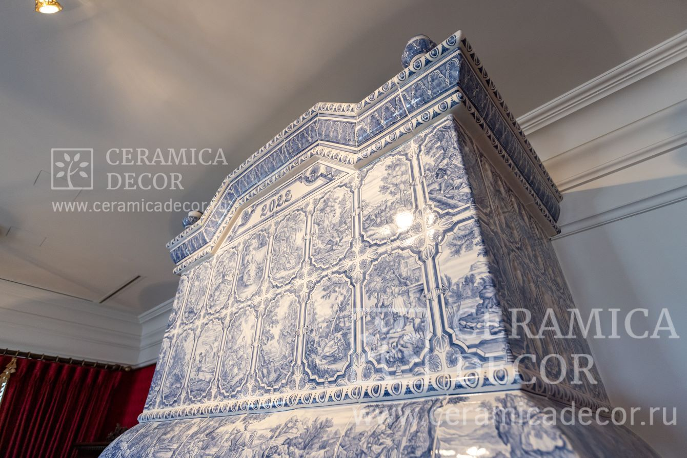
Изразцовая облицовка по сюжетам гравюр
Символы и надписи
На старинных печах можно встретить не только изображения, но и короткие текстовые фрагменты. Они усиливают смысл росписи и помогают понять, о чем говорит изображение. В религиозных или нравоучительных сюжетах надпись становится ключом: она переводит декоративную сцену в размышление о милости, справедливости, добре и зле.
Сюжетные изразцы ценны именно многослойностью. С первого взгляда видна красота цвета, формы и глазури, а при внимательном рассмотрении открываются детали: жесты персонажей, растения, животные, бытовые предметы, знаки времени и личная интонация мастера.
Керамическая облицовка очага может не только радовать глаз, но и быть наполненной содержанием, глубиной и характером.
Почему это важно сегодня
Современная сюжетная облицовка сохраняет эту традицию, но работает уже с задачами конкретного интерьера. В росписи можно отразить семейную историю, любимый пейзаж, мотивы русской усадьбы, голландские сценки, охотничьи сюжеты, растительный орнамент или авторскую фантазию.
Каждый расписной изразец изготавливается вручную, поэтому даже повторяющийся мотив остается живым. В этом и состоит главная ценность сюжетной керамики: она соединяет функциональность печи или камина с индивидуальной художественной работой.
В ходе работы CeramicaDecor получает запросы на изготовление объектов разных направлений. Этот заказ был выполнен в старорусском стиле и стал центром семейного тепла и уюта в доме заказчика. Проект уникален тем, что совмещает в себе сразу три функционала: это облицованная изразцами печь-камин с отдельным духовым шкафом.
Печь-камин со встроенным духовым шкафом
CeramicaDecor гарантирует безопасные печи
Пожеланием заказчика было максимально расширить топочную дверь, чтобы в гостиной можно было наслаждаться огнем. При этом тепло аккумулируется: в отличие от камина, объект действительно нагревается, и тепло не уходит сразу в трубу.
Дверь печи заказная: регулируемая шторка с подачей воздуха, посадочная часть сделана глубже, около ста миллиметров, чтобы дверь была устойчивой и прочно фиксировалась. Приток воздуха организован с помощью герметичного клапана с силиконовым ободком, рядом расположены прочистные дверки, симметрично установленные и с другой стороны.
Отдельное внимание команда уделила дымоходу. Визуально кажется, что он упирается в балку: такие пропорции использованы для симметрии и полноты композиции, хотя сама труба внутри намного меньше. Вес печи составляет более пяти тонн, поэтому для надежности пришлось усилить фундамент.
Кирпичная труба дополнительно нагрузила бы основание, поэтому было принято решение перейти на изолированную утепленную сэндвич-трубу. Проходка сделана скользящей: дом каркасный, и команда учла возможную усадку.
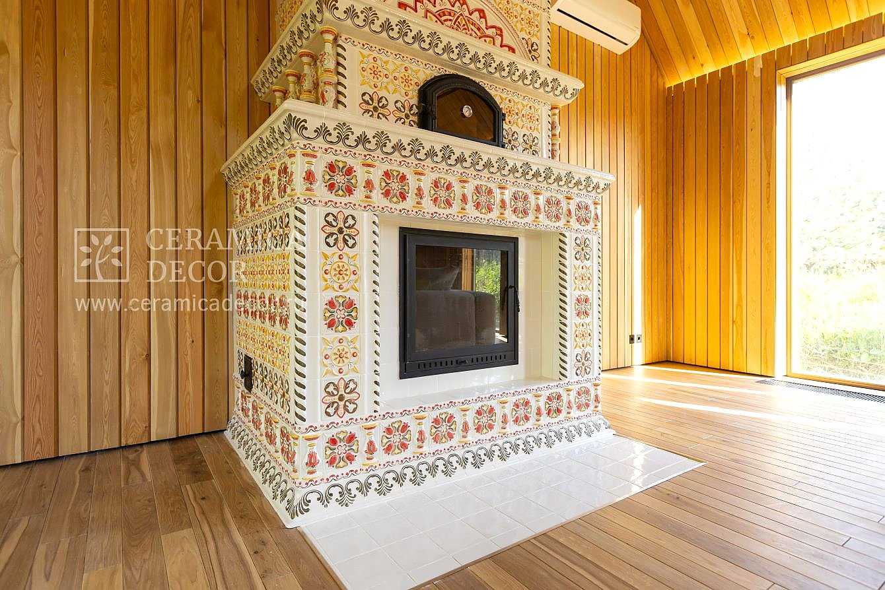
Топочная дверь печи
В печь также интегрирована противопожарная стенка, закрытая изразцами. Снаружи ее не видно, но в деревянно-каркасном доме она обеспечивает дополнительную безопасность.
Стилизованная под ваш запрос печь
Задачей компании было стилизовать печь в старорусском стиле. Дизайнеры разработали проект, который был утвержден заказчиком, и в ходе реализации впервые использовали некоторые элементы, например балясину определенного размера и формата.
Все изразцы расписываются вручную. Для их изготовления не используются шаблоны или трафареты: каждый элемент становится уникальной работой художника и показывает преимущества ручной керамики перед фабричной плиткой. В этом проекте представлено более полутора тысяч единиц изразцов в различном виде.
Особенность работы заключалась и в термическом расширении кирпича, из которого изготовлена печь. Чтобы изразцы крепились надежно и долговечно, используется специальная армирующая сетка. Она создает своеобразный панцирь и удерживает керамику на местах даже при движении кирпичей.
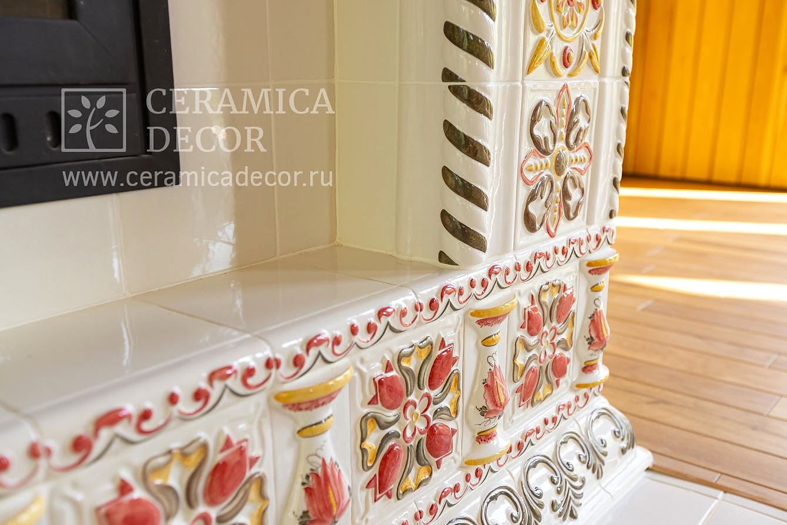
Изразцовая облицовка в старорусском стиле
CeramicaDecor создает уют
Команда CeramicaDecor много лет помогает воплощать разнообразные задумки заказчиков, наполняя дома теплом и комфортом. Компания проводит работы с нуля и сопровождает проект на каждом этапе создания уникального сердца дома.
Команда CeramicaDecor регулярно сталкивается с уникальными проектами и задачами. Исключением не становится ни один проект по изготовлению изразцов и монтажу: будь то барбекю-комплекс, камин или банная печь.
Облицовка банной печи изразцами ручной работы
В Одинцовском районе компании поступил запрос на облицовку банной печи. Архитекторы-проектировщики подготовили варианты, и заказчик остановился на коллекции «Русская этника» в благородном белом цвете, идеально сочетающемся с интерьером бани.
Для этого проекта команда изготовила изразцы с румпой. Пространство между румпой и кирпичом было заполнено раствором: благодаря этому теплоемкость печи увеличилась, а теплопередача жара от кирпича на внешнюю поверхность осталась на нужном уровне. Несмотря на увеличение времени протопки, такая теплоемкость позволяет дольше сохранять тепло.
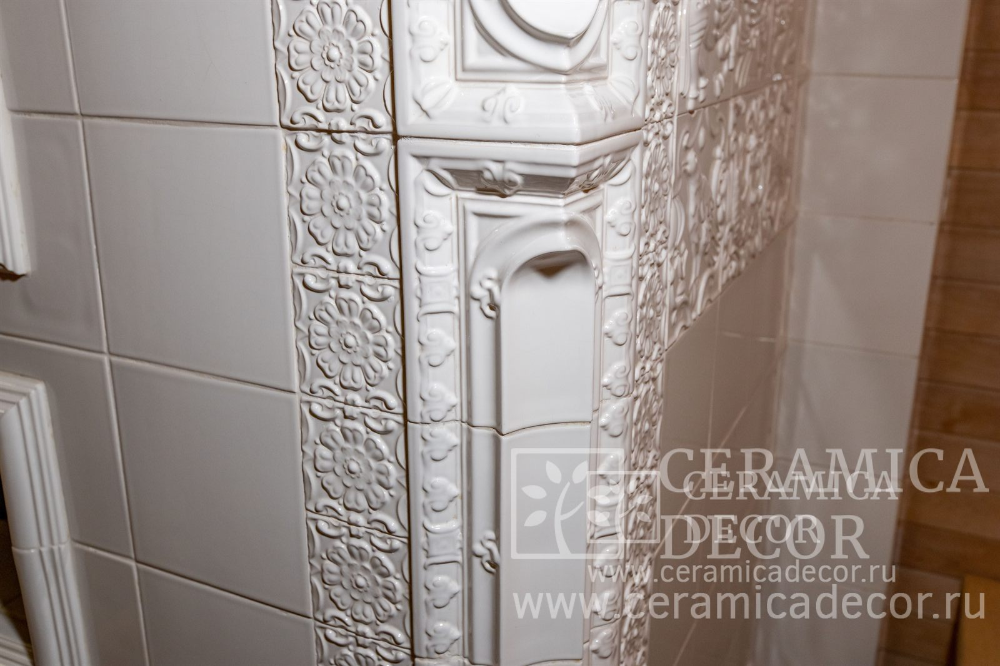
Белая изразцовая облицовка
Реализуем проект в кратчайшие сроки
Этот объект стал для команды знаковым, поскольку перед ней стояла задача изготовить изразцы за месяц, а монтаж выполнить за неделю. Заказчик хотел как можно раньше вновь пользоваться банной печью.
Запрос был сложным: за более чем десять лет работы такой объем в столь короткие сроки компании выполнять не доводилось. Производство нужно было завершить даже быстрее четырех недель, чтобы монтажники получили небольшой запас времени на установку керамики.
Для команды это был настоящий вызов, но проект удалось реализовать в желаемом виде и в нужные, рекордные сроки.
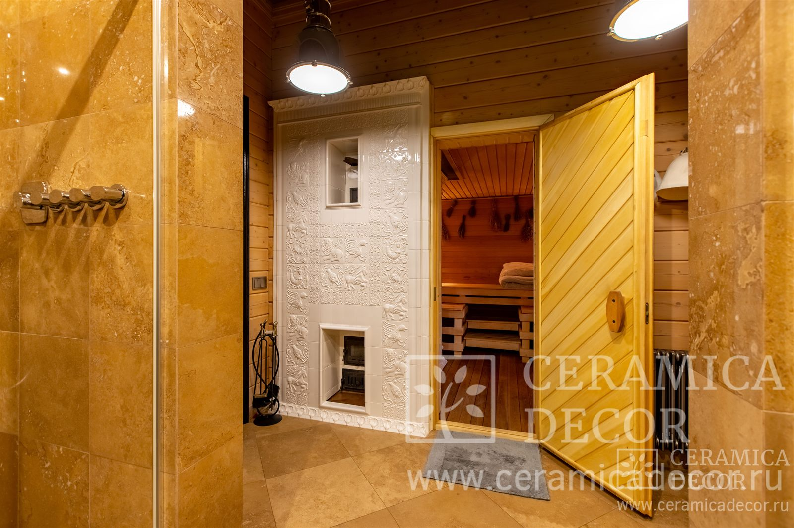
Изразцовая печь от CeramicaDecor в интерьере бани
CeramicaDecor предлагает уникальный и индивидуальный дизайн
В повседневной практике часто можно увидеть необлицованные банные печи из кирпича. Такой внешний вид нравится не каждому, и CeramicaDecor предлагает решения, которые делают дизайн более выразительным и не влияют на работоспособность печи.
Если вы хотите подчеркнуть индивидуальность бани, изразцовая облицовка станет удачным решением: она добавляет интерьеру цельность, светлый акцент и ощущение ручной работы.
CeramicaDecor получила запрос на постройку барбекю-комплекса в беседке загородного дома. Команда разработала сложный и уникальный проект, в котором летняя кухня стала полноценной зоной приготовления, хранения и отдыха.
Многофункциональный барбекю комплекс
Современная летняя беседка с панорамными остеклениями особенно выделяется мангальным комплексом и варочной плитой. В ходе общения с заказчиком было определено наполнение, компоновка, сделано несколько набросков, а понравившийся вариант команда доработала до полноценного проекта.
Для организации кухни требовалось использовать всю возможную полезную площадь и пространство. В этом вопросе команда советовалась с опытным шеф-поваром: такие консультации помогают точнее продумать сценарии приготовления и удобство рабочих поверхностей.
Варочная плита барбекю комплекса
К использованию здесь готовы посудомоечная машина, винный шкаф, полки для хранения посуды и множество кухонной утвари. На кухне предусмотрены огневые точки, мангал, казанная плита и печь под нее, выполненная из чешского шамота. Он удобнее, практичнее и компактнее кирпича.
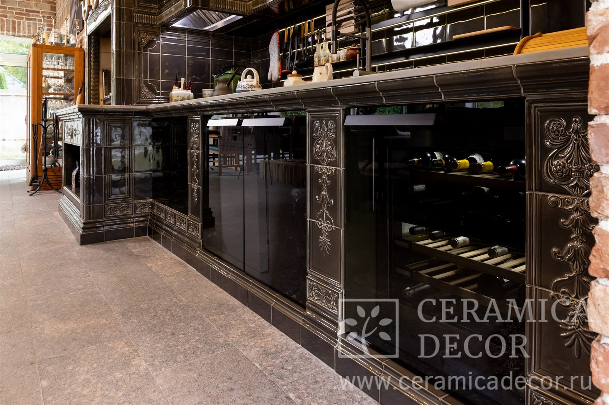
Винный шкаф барбекю комплекса
Прочная и надежная конструкция барбекю комплекса
Чтобы конструкция была максимально прочной, по требованию заказчика нижняя часть барбекю-комплекса была выполнена из железобетона. Столешницы также железобетонные.
Подвесные шкафы основаны на металлических сварных конструкциях, обшитых тонкостенными аквапанелями. Они подходят для открытых помещений. Силами заказчика были установлены стеклянные двери, заранее учтенные в проекте.
В качестве системы дымоудаления используются дымоходные системы Schiedel. Каждый дымовой канал оборудован шиберной задвижкой для отсечения холодного воздуха зимой. Над варочными поверхностями установлены вытяжные зонты со съемными фильтрами для обслуживания, а также канальные жаропрочные вентиляторы.
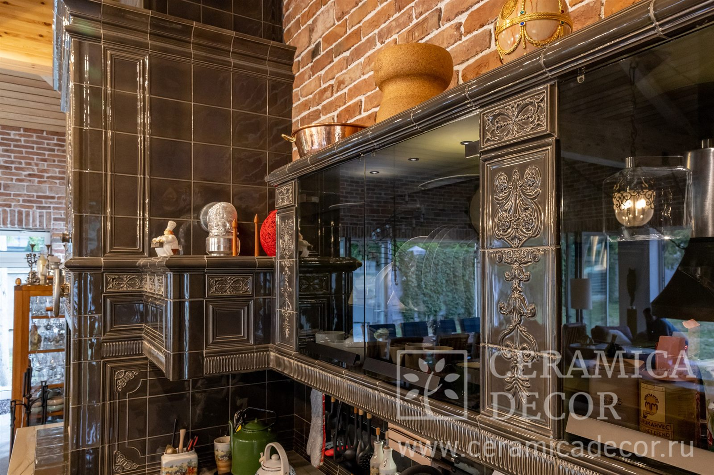
Подвесные шкафы мангального комплекса
Установка ваших грилей в мангальный комплекс
Отдельное внимание стоит уделить аргентинскому грилю. Он был заказан и привезен из США силами заказчика. У дальней стенки находится углегенератор, куда закладываются дрова. Горение происходит в корзине, угли ссыпаются вниз, высота жаровни регулируется в зависимости от продукта, а угли распределяются по рабочей зоне.
В распоряжении владельцев есть разные варианты корзин для жаровен. Гриль сочетается с остальными деталями проекта и вместе с ними формирует желаемый образ летней кухни.
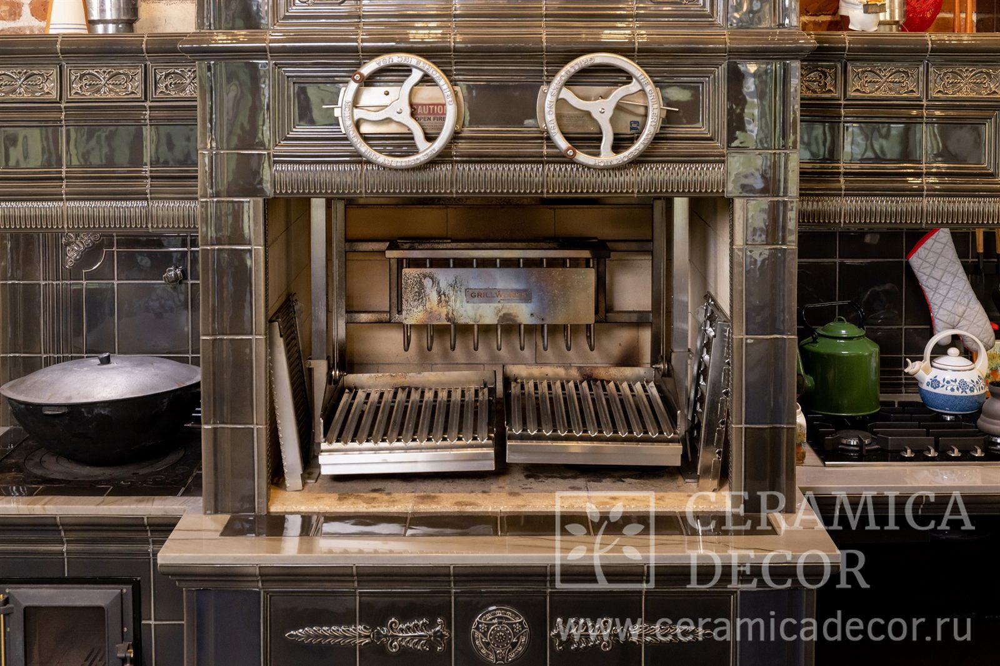
Аргентинский гриль в облицованном барбекю комплексе
Керамическая облицовка барбекю комплекса «Версаль»
Исходя из общего дизайна беседки и пожеланий заказчика, команда спроектировала несколько вариантов внешнего вида летней кухни. Для этого проекта было важно подчеркнуть уникальность комплекса, поэтому выбрали керамику ручной работы: безопасную, надежную, долговечную и дающую широкие возможности для художественного образа.
Выбор пал на коллекцию «Версаль». Благодаря прямым формам она удачно вписывается в современный интерьер, а геометрические и классические рельефы хорошо сочетаются с мебелью разных стилей. Именно с помощью облицовки проект получил свой характер.
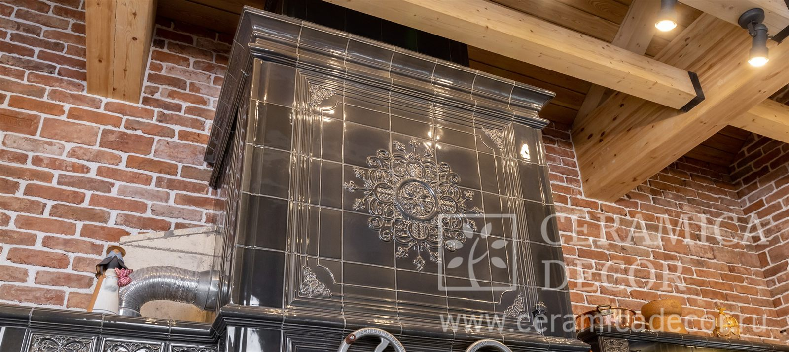
Изразцовая облицовка «Версаль»
Почему CeramicaDecor?
Благодаря ручной работе на собственном производстве CeramicaDecor может сделать изделие любой формы, размера и цвета. В индивидуальных проектах это позволяет адаптировать облицовки для объектов любой сложности.
В этом проекте команда смоделировала новые угловые элементы специальных размеров, что позволило избежать дополнительных швов и придать облицовке более совершенную форму. По заданию заказчика была разработана новая серая глазурь, чтобы оттенок оптимально подошел к интерьеру.
Изразцовая облицовка банной печи от компании CeramicaDecor
Классическая изразцовая облицовка
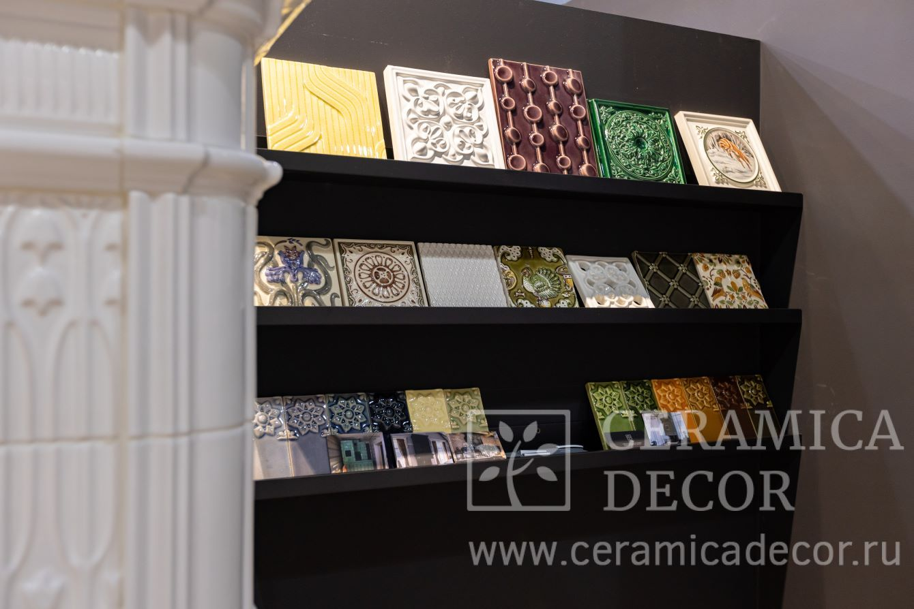
Изразцы CeramicaDecor на выставке
Выставка, на которой нам посчастливилось побывать, уже двадцать лет неизменно проводится для общения, сотрудничества и обмена опытом.
Здесь нам вместе с партнерами Sangens довелось представить нашу керамическую облицовку «Тюльпан», сделанную конкретно в этом проекте со стороны парилки. Именно эта облицовка показалась нам наиболее уместной: она сохраняет традиционный вид изразцовой облицовки, но при этом выглядит современно.
Технологии производства позволяют облицовывать банные печи до самого верха, захватывая даже места выхода пара — в этом помогают наши конвекционные решетки. Они же установлены в нижней части и служат для забора холодного воздуха в саму печь.
Подберем любой дизайн и цвет изразцов
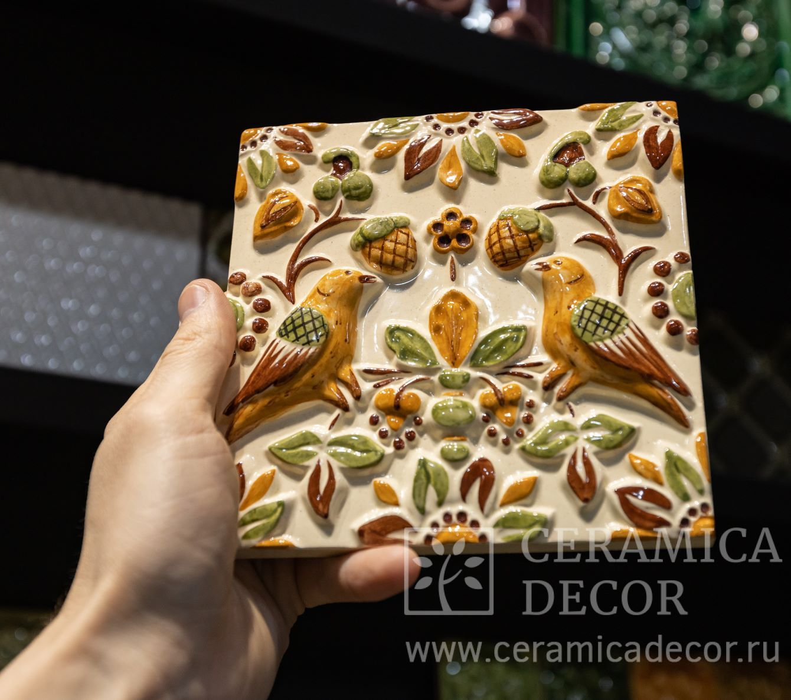
Изразец ручной работы с орнаментом Птицы
Компания CeramicaDecor очень трепетно и внимательно относится к выставкам, на которых имеет возможность пообщаться с клиентами и показать им работы, которыми мы гордимся. Поэтому на выставке было принято решение продемонстрировать изразцы других изразцовых коллекций: как современных, так и классических.
Благодаря художникам нашей команды у нас есть возможность делать сюжетные расписные сценки — изразцы с подобными изображениями были представлены на выставке. Каждый такой изразец — ручная работа, и только на одну плиточку у художника может уйти целый день. В этом и есть особенность любого нашего изразца: все они согреты теплом умелых рук и любящих своё дело сердец.
Кроме того, здесь же была выставлена интересная коллекция Луна, и в нашем шоуруме вы сможете посмотреть на камин с трехсторонней топкой, выполненный в этой облицовке.
Палитра компании представлена сотнями различных оттенков, более того, под ваш запрос мы готовы создать уникальный цвет специально для вас. Во время выставки можно было увидеть лишь немногие образцы, но даже они показали гостям наши возможности в подборе цвета.
Выставки изразцовых каминов и печей
Компания CeramicaDecor всегда рада приветствовать новых клиентов, желающих привнести в свой интерьер что-то по-настоящему особенное и уникальное. За всеми новостями и подробностями о нашем участии в других мероприятиях вы можете узнать на нашем сайте.
Дмитровский собор во Владимире
История и особенности ярославского изразца
Почему в те времена именно Ярославль становится местом столь стремительного развития керамического искусства?
Владимиро-Суздальская Русь была богатейшей и влиятельнейшей землей, известной своими зданиями с искусной белокаменной резьбой.
Постепенно работы мастеров-белокаменьщиков на этой земле и, в частности, в Ярославле сменяются применением терракотовых изразцов. Переход к новому материалу происходит не так быстро: сперва изразцовые фрагменты очень напоминают работу белокаменьщиков.
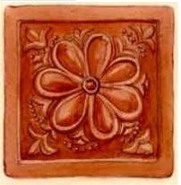
Терракотовый фигурный изразец с церкви Николы Мокрого в Ярославле
В 16 веке терракотовые изразцы из красной глины, пришедшие из Москвы, набирают популярность и в Ярославле: мастера своими руками расписывают изразцы изображениями ягод и цветов.
Наибольшее развитие керамического искусства происходит в 17 веке, когда город становится купеческой столицей и его экономика переходит на новый уровень. Именно в то время разворачивается масштабное строительство, которое с удовольствием поддерживают купцы, желающие таким образом показать свои статус и силу.
Интересная особенность: Ярославль разносторонен и разнообразен: даже три вида изразцов, применяемых в храмовом зодчестве (терракотовые, муравленые и полихромные изразцы) не заменяют друг друга полностью, а долгое время существуют одновременно.
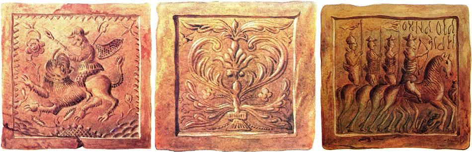
Изразцы Кирилло-Афанасиевского монастыря и церкви Николы Мокрого
Где создавались ярославские изразцы?
В городе традиции гончарного мастерства зародились благодаря содержанию в почве большого количества глины. На территории Ярославской области — по данным краеведческого музея — насчитывалось 19 керамических заводов, но только после промышленной революции можно было говорить об изразцовых мастерских, более привычных для современного человека.
Символы и значения в ярославских изразцах
Для росписи ярославских изразцов широко используются изображения цветов, ягод и птиц, часто встречаются даже мифические создания, такие как, например, птица Сирин. Каждая работа полна символов и смыслов.
Интересный факт: птица Сирин — мифологическое существо, получеловек-полуптица, в разных культурах играющая разные роли. В западноевропейских легендах это создание олицетворяет несчастную душу, в средневековой мифологии дева-птица была райской, а на Руси её опасное пение могло «вытянуть из человека душу».
Успенский кафедральный собор в Ярославле
Характерной для этой местности была ярославская цветочная розетка — переплетение полевых цветов иногда в сочетании с геометрическими фигурами и линиями. В городе можно увидеть даже элементы восточного или античного стиля.
Где сегодня можно купить ярославские изразцы?
Ярославские изразцы потрясают своей красотой — от них невозможно оторвать взгляда, хочется разглядывать их снова и снова, выявляя для себя всё новые детали рисунка.
Это искусство не осталось лежать на пыльных страницах истории: даже сегодня изразцовые мастерские создают образцы по схожим технологиям, со схожими изображениями и цветами. Более того, реплики увиденных когда-то изразцов могут оказаться в вашем доме, добавляя ему особый уют и уникальность.
Исторический ярославский изразецИзразец на церкви святителя Иоанна Златоуста
Компания CeramicaDecor с радостью поможет вдохнуть в вашу идею жизнь: команда выполняет все работы с нуля, под ключ в Москве, Санкт-Петербурге и многих других городах, а дизайнеры создают изображение на каждом изразце вручную, что делает их по-настоящему уникальными.
Керамическая плитка
Одним из величайших новаторов в области декоративно-прикладного искусства является Уильям Френд Де Морган. Смелость идей и неутолимая жажда экспериментов послужили мощными двигателями в творческой деятельности художника-керамиста. Движение «Искусства и ремёсла» оказало сильнейшее влияние на становление Уильяма Френда Де Моргана как мастера. Задавшие направление на начальном этапе идеи и взгляды движения впоследствии переросли в его собственную философию и творческую самобытность.
Путь Уильяма Френд Де Моргана от творческих порывов души до высокого искусства керамики
Отец, известный профессор математики, и мать, суфражистка и писательница, поддерживают сына в его творческих устремлениях. Образование по этой стезе Уильям Френд Де Морган начинает в 20 лет в художественной школе при Королевской Академии по специальности «Изобразительное искусство». Таким образом, его творческий путь начинается с живописи. Но учёба не удовлетворяет жажду инноваций художника.
С самого детства Уильям Френд Де Морган был окружён интеллектуальным и прогрессивным обществом друзей и членов семьи, поэтому искусство в рамках академических традиций и в тисках классических образцов, определявшихся Королевской Академией, оказывается для художника тесным. Его прельщают взгляды и принципы братства прерафаэлитов.
Интересно: суфражистки — участницы движения, борющегося за предоставление женщинам избирательного права. Неудивительно, что в те времена художник с самого детства впитывал инновационные и реформистские взгляды, что отразилось и на его творческой деятельности.
Керамическая плитка с анималистическим рисунком
По окончании школы Уильям Френд Де Морган знакомится с Уильямом Моррисом и присоединяется к движению «Искусства и ремёсла» с целью возрождения декоративно-прикладного искусства. В 1863 году он направляет свою творческую энергию на работу с витражными стёклами. А уже через несколько лет неприязнь к опостылому и безликому фарфору того периода подталкивает художника к работе с глиной.
Дизайн керамической плитки с цветочным орнаментом
От экспериментов с глиной до великих открытий старинных рецептов изготовления керамики
В 1869 году Уильям Френд Де Морган начинает свои эксперименты над составом глазурей и глиняных масс. В начале своей деятельности в области керамики Уильям Френд Де Морган использует для росписи и декора готовую плитку. Но влияние Уильяма Морриса и других приверженцев «Искусств и ремёсел» побуждает мастера к изучению технологических процессов ремесла. В подвале своего дома художник-керамист оборудует печь для запекания керамических изделий. Его опыты приводят к пожару и вынуждают Уильяма Де Моргана переехать в более подходящее для производства место.
Керамическая плитка периода работы в Челси, 1872-1882 гг., Музей Бирмингема
Уильям Френд Де Морган обосновывается в пригороде Лондона. Теперь мастером движет ещё и желание совершенствования керамической плитки для использования своих изделий в фасадном декоре. Де Морган обустраивает свои печи в саду и в полной мере погружается в новаторство. Керамист часами работает над разработкой собственного оборудования, изучением химического состава глазурей, изобретением новых методов обжига и нанесения рисунка. По легенде столетие назад по соседству с его домом в Челси творил свою керамику Джозайя Веджвуд.
В 1882 году Уильям Де Морган расширяет своё производство до фабрики в Суррее, поблизости от мануфактуры Уильяма Морриса. Это событие знаменует начало самого продуктивного десятилетия в творчестве художника-керамиста. Один из самых масштабных проектов он выполняет по заказу Фредерика Лейтона. Уильям Френд Де Морган восстанавливает недостающие фрагменты ценной коллекции турецкой, персидской и сирийской плитки XIV-XV веков в интерьере Лейтон-Хаус. А также мастер создаёт авторскую отделку для лестницы и холла.
Наибольшее освоение технических аспектов керамического декоративно-прикладного искусства Уильямом Де Морганом происходит в период его обоснования в Фулхеме с 1888 года. Там он начинает сотрудничество с архитектором Хелси Рекардо. Только теперь мастеру поддаются сложные люстры, глубокая интенсивная подглазурная роспись. Со своими произведениями Уильям Френд Де Морган принимает участие в выставках, организуемых движением «Искусства и ремёсла».
Изразцовое панно, Музей Фицуильяма, Кембридж
Сияющая посуда и живописные изразцовые панно в исполнении Уильяма Де Моргана
Уильям Френд Де Морган изготавливает удивительной красоты посуду, сосуды, вазы, декоративные изделия и отделочную плитку. Мастер использует традиционные для глиняной посуды формы. В декоративной отделке он отдаёт предпочтение объединению отдельных фрагментов в живописные картины, создавая тем самым изразцовые панно.
Ваза с росписью люстром, 1895 г.
Уильяма Де Моргана захватывает средневековая восточная керамика, его вдохновляет гончарное ремесло Изника, Греции и Крита. Художника-керамиста прежде всего завораживает сияние люстра. Секреты остекления керамики были утрачены ещё в середине XVII века. Восстановить технологию изготовления пигмента с металлическим блеском удалось лишь итальянским мастерам, а вот английским керамистам сияющие глазури совершенно не поддавались. Путём своих долгих экспериментов Уильям Де Морган добился успеха и в этом деле. Факт открытия мастером рецептов люстра был удостоен внимания Британской Энциклопедии и возведён в ранг высшего достижения английского керамического искусства.
Фрагмент росписи панели из керамической плитки в интерьере, Дебенхем Хаус, Лондон
Но помимо технологии остекления, Восток покоряет его дизайном и цветом. Под влиянием сочных и глубоких тонов он начинает работать над созданием своей «персидской» палитры. Привычные для росписи керамики синий, фиолетовый, бирюзовый, зелёный, красный и жёлтый цвета принимают в его творчестве особенные оттенки.
Керамическая чаша с морскими мотивами росписи, ок. 1900 г.
Под влиянием движения «Искусства и ремёсла» ранние работы Де Моргана оплетают растительные орнаменты и цветочные узоры. Не последнюю роль в таком выборе играет и сотрудничество мастера с Уильямом Моррисом для оформления интерьерных проектов. Позднее его предпочтения сдвигаются в сторону анималистических рисунков, а изготовление керамики для судов открывает в творчестве Уильяма Де Моргана новое направление. На его произведениях появляется морская тематика и географические мотивы, к которым впоследствии мастер питает особую любовь.
К сожалению, тонкая работа с керамикой не приносила великому мастеру-новатору должного дохода. В первые годы XX века Уильям Френд Де Морган был вынужден закрыть фабрику, дела которой значительно пошатнулись за периоды его отлучки во Флоренцию по состоянию здоровья. Свой творческий потенциал он направляет на написание литературных произведений. Именно литературная деятельность приносит Уильяму Де Моргану большие плоды.
Тем не менее, произведения Уильяма Френда Де Моргана из керамики являются ценными образцами музеев искусства и частных коллекций. Несмотря на неминуемое течение времени, изразцовые панно и майоликовые панели художника-керамиста по-прежнему украшают стены исторических зданий, не утратив свой сочный цвет и металлическое сияние. Работы Уильяма Де Моргана являются высоким стандартом английского декоративно-прикладного искусства, а вся творческая деятельность мастера-изобретателя служит примером полной самоотдачи своему делу.
Где сегодня заказать конструктив и уникальную изразцовую облицовку?
В студии CeramicaDecor вы можете заказать изразцовый камин с облицовкой по уникальному дизайну, с любой расцветкой изразцов. Окунуться в большой выбор конструкций изразцовых печей, каминных порталов, порталов для биокаминов, и порталов банных печей и облицовок банных печей. А также увидеть необыкновенно выразительные печные комплексы барбекю для своей беседки или летней кухни.
Мы ждём Ваши смелые идеи, вдохновляющие наших мастеров на новые проекты, и хотим скорее приятно удивить Вас реализацией задуманного!
Дом Уильяма Морриса
Предпосылки зарождения движения «Искусства и ремесла»
Наравне с позитивными переменами произошли и негативные метаморфозы. В частности, отрицательное влияние остро ощутило на себе декоративно-прикладное искусство. Самобытное творчество ремесленников сменилось массовым ширпотребом в обиходе европейцев. Как противостояние безликим вещам, которые наполняют повседневную жизнь и быт, зарождается движение «Искусства и ремёсла».
Интересный факт: промышленная революция прошлась по странам Европы и США и всего за несколько поколений сменила устройство общества с аграрного на индустриальное, но занятно то, что началась промышленная революция именно в Англии, где и зародилось движение «Искусства и ремёсла».
Интерьер по проекту Уильяма Морриса в особняке Уайтуик Мэнор, Англия
Зарождение и идеология движения «Искусства и ремёсла»
Абсолютное признание превосходства изделий ручного труда над продуктом фабричной машинной штамповки и ложится в основу движения «Искусства и ремёсла». Оно берёт своё начало с небольшого сообщества единомышленников. Концепция зародившегося художественного течения базируется на создании эстетического окружения в быту и жизни человека. В связи с этим его целью становится возрождение декоративно-прикладного искусства. В рамках движения «Искусства и ремёсла» формируются отдельные ремесленнические цеха и гильдии практически по всей Европе.
Опорой для художественного течения служат традиции средневекового ремесленничества, самобытное творчество мастеров того периода. Движение получает отражение в предметах всех областей декоративно-прикладного искусства. Его участники-художники создают уникальные обои и мебель, авторские изделия в сфере ткачества и гобеленоплетения, витражного и керамического декора. Предпочтение отдаётся природным мотивам, лаконичным формам и чистоте цветов.
Интерьер зала в Красном доме, Лондон
Реальные черты идеология обретает в лондонском особняке под названием «Красный дом». Сама постройка и вся обстановка дома выполнены сообразно принципам художественного течения, направленным на слияние повседневной жизни с высоким искусством. Красный дом принадлежал основателю движения «Искусства и ремёсла», английскому писателю, художнику, дизайнеру, политику и философу, Уильяму Моррису и предназначался для его семьи и фирмы по производству предметов декоративно-прикладного искусства.
Витражное стекло в Красном доме, ЛондонКерамическая плитка с росписью по эскизам Уильяма Морриса, 1875 г.
Уильям Моррис как идейный вдохновитель движения «Искусства и ремёсла» и творец
Творческое развитие Морриса-мастера начинается с обучения архитектуре у Джорджа Эдмунда Стрита, имевшего весьма громкое имя в этой области в тот период. Но поглощает художника живопись, и вскоре она становится основным проявлением его творческого потенциала. На путь к искусству Уильяма Морриса направило знакомство с работами прерафаэлитов. Восхищение направлением, отрицавшим условности и академизм английской поэзии и живописи, зародило особый взгляд Уильяма Морриса на эстетику и художественность.
Уильям Моррис встаёт на путь возрождения гармонии природы, человека и искусства, опираясь на философские трактаты Джона Рёскина. Утверждение искусствоведа, что окружающие общество предметы свидетельствуют о его моральном состоянии, подвигло Морриса излечить в этом плане «покалеченное» промышленной революцией поколение. Инструментом для этого могло служить, по его мнению, лишь ремесленничество, которое наполняло бытовую среду прекрасными предметами ручной работы. Поэтому живопись художника переносится с холстов в интерьер: на керамику, ткани, дерево, металл и другие материалы.
Гостиная в доме Томаса Карлайла, Лондон
Уильям Моррис возводил в высокий ранг творца совокупный образ технолога, конструктора и художника, коим сам на самом деле и являлся. Уильям Моррис становится первым в современном понятии дизайнером в Англии. Мастер прорисовывает эскизы принтов, черпая вдохновение в природе, переносит орнаменты на обои, гобелены, мебель, керамическую плитку, витражи и даже книги, объединяя всё в целостные интерьеры. Для создания своих творений Уильям Моррис тесно сотрудничает с Филиппом Спикменом Уэббом, Данте Габриэлем Россетти, Элизабет Элеонор Сиддал, Эдвардом Бёрн-Джонсом и другими художниками и архитекторами того времени.
Для изготовления предметов интерьера и отделки Уильям Моррис основывает фирму «Моррис, Маршалл, Фолкнер и Ко» в 1861 году. Почти на протяжении века предприятие сохраняет статус ведущей мануфактуры Европы в сфере декоративно-прикладного искусства. Ручной труд, природные материалы, естественность композиции становятся тремя китами, на которых держится производственный процесс фирмы. К тому же фирма выполняет роль своеобразной школы для художников и ремесленников. Это способствует распространению идей движения «Искусства и ремёсла» и созданию новых творческих объединений под руководством последователей Морриса, в том числе и в других странах.
Керамический декор и вазы в интерьере работы Уильяма Морриса
Влияние движения «Искусства и ремёсла» на искусство керамики
К этому времени керамика в Европе испытывает упадничество. Взошедший на пьедестал фарфор практически полностью поглотил древнейшие технологии создания изделий из глины. Декоративная керамическая облицовка уходит в небытие, а уникальные предметы быта ручной работы сменяются безликой штамповкой фарфора и фаянса. На один лад изделия получают красочный декор, расставшись с высоко ценимой ранее белизной и хрупкостью. Теряется глубокая связь и гармония материала и формы, сущности и художественного образа.
Уильям Моррис и движение «Искусства и ремёсла» возрождает ценность керамики ручной работы. Природный материал соответствует всем требованиям творческого течения и обретает вторую жизнь в своём самом высокохудожественном воплощении в английских домах. В интерьерах художника и дизайнера вновь появляются изразцы на каминах и в отделке, керамический декор и посуда ручной росписи. Большую часть декоративной керамики для проектов Уильяма Морриса выполняет Уильям Френд де Морган.
Несомненно, предметы ручной работы имели высокую стоимость, поэтому такая роскошь была доступна далеко не всем. В связи с этим идея создания эстетически продуманной среды обитания для каждого человека противоречила взглядам самого Уильяма Морриса как социалиста. Но несмотря на это, небольшое сообщество художников переросло в движение «Искусства и ремёсла», которое получило распространение не только в Англии, но и практически по всей Европе и в США.
Движение «Искусства и ремёсла», в первую очередь, подарило миру теорию о тесной взаимосвязи эстетических стандартов и морального состояния общества. Движение «Искусства и ремёсла» стало мощным толчком для зарождения стиля Модерн и послужило основой формирования принципов дизайна. Кроме того, течение способствовало возрождению национальных стилей благодаря повышению престижа и утверждению высокого статуса ремесленничества.
Где сегодня купить керамику ручной работы?
Предметы быта ручной работы и сегодня занимают важное место в оформлении интерьера и высоко ценятся своей индивидуальностью, неповторимостью и душой, вложенной в каждое изделие.
Компания CeramicaDecor является крупнейшим производителем изразцов, и наши художники вручную расписывают каждую плиточку, вкладывая в неё особый смысл и ценность, поэтому, если Вы хотите вдохнуть в ваш интерьер жизнь, CeramicaDecor с радостью поможет реализовать любые задумки.
История завода династии Гребер
Завод по производству керамических ваз и терракотового декора для зданий был основан в 1866 году Иоганном Петером Гребером, мастером австрийского происхождения. В 1868 году он сконструировал гончарную печь, а в 1870 году – печь для обжига керамики из песчаника. В 1880 году Иоганн Гребер передал завод своим сыновьям, Шарлю и Полю.
С этого времени производство получает название Керамическая Мануфактура Бове. С 1900 года Шарль Гребер единолично возглавил мануфактуру и самостоятельно руководил производством до 1933 года. В этот период продукцию завода, экспортируемую по всему миру, представляла уже не только уникальная керамическая посуда, предметы быта и терракота, но и глазурованная фасадная керамика, камины и каминные порталы. Приемником Шарля стал его племянник, который возглавлял завод до прекращения его деятельности в 1962 году. После прекращения функционирования предприятия практически все его здания были разрушены.
Произведения, говорящие сами за себя, или фасадная керамика Керамической Мануфактуры Бове
Магазин Керамической Мануфактуры Бове – единственная постройка, сохранившаяся от старого завода. Здание было возведено в 1911 году по просьбе Шарля Гребера в соответствии с проектом архитектора Мориса Тореля. Керамический декор на фасаде отчасти выполнял рекламную функцию, представляя продукцию, производимую мануфактурой. В начале XX века декоративная отделка магазина стала эталоном архитектурной керамики и мотивов ар-нуво, впоследствии расцветших на стенах не только домов Бове, но и Парижа.
Интересно: ар-нуво в интерьере предполагает отказ от чётких линий и острых углов, переманивая своих последователей на сторону изобразительности, витиеватости и плавности, которые он черпает из растительного и животного мира.
Фасад здания в коммуне Вуазинльё, ФранцияФасад магазина Керамической Мануфактуры Бове, Франция
Фасадная часть здания отделана сине-зелёными изразцами в нижней части и изразцовой плиткой жёлтого, бежевого цветов и оттенка охры по всей поверхности стены. Всё внимание притягивает к себе большое рельефное панно в центре с изображением гончара за работой, выполненное скульптором Анри Гребером, братом Шарля. Так Шарль Гребер пытается подчеркнуть мастерство изготовления продукции. Род деятельности предприятия и имя владельца также застыли в трёх своеобразных рельефных вывесках из керамики под центральным панно. Окна и двери магазина мануфактуры окаймляет сложный фриз из рельефного декора в виде бегущих саламандр и заключённой в него разноцветной плитки, переплетающейся в геометрический орнамент.
Природные мотивы отразились и в других элементах отделки здания, например, в карнизном декоре дома и панно из керамики на заднем фасаде. Карниз декорирован мини-скульптурами лягушек, а на панно вновь встречается саламандра. Именно высокохудожественная архитектурная керамика сыграла свою решающую роль в сохранности здания. В 1972 году оно было наделено статусом памятника архитектуры и перешло в собственность города.
Экстерьер семейного дома Гребер также преобразился в 1890 году. Его отделка аналогично выполнена под стать эпохе ар-нуво. Кирпичная стена оформлена декоративным фризом и скульптурными цветочными элементами из керамики.
Одно из лучших творений Шарля Гребера в области керамической фасадной отделки находится в городе Муи. Постройка возведена в первой четверти XX века. Это детище тандема архитектора Фидели Борде и керамиста Шарля Гребера. Здание получило имя в честь своих создателей – дом Борде-Гребер. Эркеры, консоли, витражные окна в сочетании с керамическими рельефными элементами и фризом с яркой цветочной росписью отразили в полной мере могущественное влияние стиля ар-нуво. На первом этаже дома Борде-Гребер находится камин – одно из многих творений Керамической Мануфактуры Бове.
Шарль Гребер – творец чрезвычайного разнообразия керамики для каминов и примеры его работ
Камины работы Керамической Мануфактуры Бове, несмотря на принадлежность в большей мере к периоду ар-нуво, удивительно разнообразны. Основным их творцом являлся Шарль Гребер. Идеи и тематики, вложенные в отделку каминов, не повторяются, а лишь тонкой нитью единого стиля связывают все работы. Каминная керамика мануфактуры представлена изразцами, скульптурным декором, цельными конструкциями. Среди творений фамильного предприятия Гребер можно встретить многоярусные камины и небольшие порталы. Порой керамический декор переплетается с металлом, порой – с деревом разных пород. Поэтому хотелось бы максимально разносторонне рассмотреть творчество Шарля Гребера на примере нескольких особенно прекрасных антикварных образцов, отражающих мастерство автора.
Один из самых известных каминов мануфактуры врезается в память выразительным фризом из изразцов со скульптурным декором. На четырёх плитках в процессе работы застыли фигуры рабочих: слесаря, плотника, кузнеца и столяра. Каждая профессия обозначена рельефной подписью над фигурой. Фриз венчает каминная полка из твёрдых пород ореха. Изразцовая плитка с рельефным лиственным декором обрамляет фриз с двух сторон, а также разбавляет монотонную отделку верхней части дымохода камина. Для керамики использован светло-коричневый цвет глазури, характерный для 1900-х годов. Если эстетическое оформление камина полностью соответствует эпохе ар-нуво, то сюжетное наполнение склоняется к литературному течению натурализма, именуемого в искусстве реализмом.
Со стилем ар-нуво неразрывно связан декор с мотивами из мира флоры и фауны. В полной мере эта особенность отражена на другом камине Шарля Гребера. Центральной частью композиции служат две белки, застывшие в рельефе керамики. Топка камина обрамлена инкрустированной в дубовый портал плиткой. Плитка декорирована листьями и жёлудями. Дополняют композицию две колонны с лилиями, складывающими воедино портальную часть и навершие. Сочетание дуба и глазурованной керамики в голубом и бежевом тонах под тонким налётом прошедшего века выглядит завораживающе.
Удивительным творением является камин, созданный Шарлем Гребером в сотрудничестве с архитектором Эмилем Мюллером и дизайнером Юне Фрером. Здесь вновь мы встречаемся с созвучной игрой дерева и керамики. Основной декор выполнен из дерева: цветочная композиция в навершии, панно в надпортальной части и женские фигуры-статуи, грациозно огибающие топку. Но именно минимальный керамический декор делает камин лёгким и воздушным, оживляет композицию цветом. Безликие цветы в верхней части словно оживают в подглазурной росписи.
Облицовка камина, Шарль Гребер, ок. 1900 г.Камин ар-нуво, Шарль Гребер, Эмиль Мюллер, Юне Фрер, ок. 1900 г.
Цветы легли в основу ещё одного детища мастера. Керамический портал словно вырос и сплёлся из цветов. Ведь его основание крепко обвили корни растений, по бокам топки тянутся, точно к солнцу, их крепкие стебли, а в самом верху пушистыми шапками распустились бутоны маков.
В противовес плавным линиям и богатому декору предыдущего портала можно поставить угловатые формы другого. Чёткие линии, строгая геометрия и выверенные пропорции более свойственны следующему за ар-нуво стилю ар-деко. И даже растительный орнамент рельефных вставок словно колет отображёнными в нём еловыми ветвями и шишками.
Каминный портал, Шарль Гребер, ок. 1900 г.Портал для камина, Шарль Гребер, ок. 1900 г.
Керамическая Мануфактура Бове подарила миру чудесные творения в области архитектурной керамики, отделки каминов и изготовления каминных порталов, посуды, предметов быта и интерьерного декора. Залогом рождения прекрасных шедевров послужила полная самоотдача ремеслу и возведение мастерства и профессионализма в ранг наивысшей ценности. Мануфактура на протяжении долгих лет создавала изделия из керамики под руководством преданных своему делу членов единой семьи. Произведения династии Гребер стали эталоном стиля ар-нуво в сфере керамического декораторства.
Замок Хоэншвангау
Как складывались особенности печных облицовок в Баварии?
Разнообразие и роскошь печных облицовок обусловлены несколькими факторами. Во-первых, наличием нескольких направлений исторического развития немецкого керамического искусства. Во-вторых, ориентированностью баварских правителей на французский шик, вдохновлённый красотами Версаля. В-третьих, широкими временными рамками в возведении дворцов и замков, где и сохранились до наших дней лучшие образцы печей и каминов.
Изразцовая печь, замок Траусниц, Бавария
Фарфоровое и изразцовое обличье печей Баварии
Традиции немецкого изразцового печного искусства наиболее ярко представлены редчайшими образцами печей в замке Траусниц. Величественное строение берёт своё начало в истории Баварии в XIII веке с замка-крепости Ландсхут и в XVI веке становится резиденцией герцогского рода Виттельсбахов, получив и новое название — Траусниц. Именно в период перестройки оборонительной крепости в прекрасный дворец ренессансного периода в итальянском стиле лучшими немецкими мастерами создаются прекрасные печи с керамическим декором.
К сожалению, некоторые печи не дошли до наших дней, погибнув под языками пламени, охватившими часть помещений замка в середине XX века. Одна из таких печей была восстановлена. Недостающие изразцы баварской печи создавались на основе уцелевших старинных элементов. Рельеф тщательно воссоздан на каждой отдельной плитке, немного отличает современные вставки чуть более светлая глазурь.
Изразцовая печь, замок Траусниц, Бавария
Радует своей красотой полностью сохранившаяся изразцовая печь в другом зале баварского замка. Керамическая отделка печи отражает взгляды мастеров того времени. Здесь использованы и контрастные цвета эмалей, и разнообразный рельеф, и красочное панно, и фризовые и карнизные пояса, и резное навершие. Впечатляет многоуровневость и богатство декора такой миниатюрной печи.
Абсолютно противоположный вид имеет другая печь замка, которая первой предстаёт перед его посетителями. Харизматичный и строгий вид очагу придают крупные литые чугунные панели. В них отражается стремление мастеров периода её создания сделать элементы отделки как можно крупнее. На печи обозначена дата её возведения — 1529 год, а также инициалы герцога Людвига из династии Виттельсбахов — HL. В рельефном декоре панелей сочетаются величественность геральдической символики рода и лёгкость ренессансных путти и ветвей лавра. Такой приём довольно часто использовался на фресках и эмблемах эпохи Возрождения, когда геральдическая орнаменталистика переходила в натуралистические изображения.
Путти — художественный образ обнажённого мальчика, встречающийся в эпоху ренессанса, барокко и рококо. Отсылает нас к образу античных эротов или купидонов.
Печь с гербами рода Виттельсбахов Баварских, замок Траусниц, БаварияПечь с рельефными расписными изразцами, Фесте Кобург, Бавария
Позволяет также любоваться изразцами в печной облицовке крепость Баварии — Фесте Кобург. Первое упоминание о данном оборонительном сооружении датируется 1056 годом. На протяжении всего своего существования до середины XX века крепость служила по своему назначению. Несмотря на это, некоторые залы имеют весьма изысканный интерьер.
Стены одной из комнат декорированы инкрустированными картинами со сценами охоты. В углу установлена изразцовая печь. Рельефные цветные изразцы украшают изображения германских монархов в медальонах, сцены из Ветхого завета и нравственные надписи. Печь была создана в Нюрнберге в 1540 году.
Как периодом создания, так и своим оформлением разительно отличается от всех рассмотренных ранее изразцовых печей Баварии фарфоровая красавица в Новом Дворце Шляйсхайм. Баварский Версаль был достроен к концу XVIII века. Он стал жемчужиной архитектуры региона и образцом пышных стилей барокко и рококо. Интерьерам дворца с лепкой и росписью вторит богатая в убранстве печь в одном из залов. Золочёная роспись, скульптурный декор, сложная форма и перетекающие линии, пилястры и волюты складываются в изящный очаг.
Камин в Голубом салоне, Херренкимзее, Бавария
Роскошь и аристократичная холодность фарфора и мрамора каминов Баварии
В поисках каминов на землях Баварии мы попадаем в стены самого дорогостоящего замка — Херренкимзее. Замок был возведён для короля Людвига II в конце XIX века. Архитектура строения и интерьеры залов воссозданы в духе Версальского дворца по проекту Георга фон Дольмана.
Один из прекраснейших каминов является неотъемлемой частью интерьера Голубого салона. Каждая деталь кабинета продумана Ойгеном Дроллингером и Францем Паулем Штульбергером. Золотая роспись фарфорового портала перекликается с золотым декором комнаты. Но в то же время камин выгодно выделяется белизной декоративных деталей из мейсенского фарфора и гармонично сочетается своей аристократической холодностью с голубой мебельной драпировкой и портьерами.
Камин в Фарфоровом кабинете, Херренкимзее, Бавария
Удивительно, но именно в Фарфоровом кабинете, где всё, вплоть до отделки дверей и инкрустации мебели, выполнено из фарфора, лишь каминный портал изготовлен из двухцветного мрамора. Над порталом возвышается каминное зеркало, окаймлённое фарфоровыми розами тонкой работы мейсенских мастеров. Архитекторы и художники так тщательно продумывали каждую деталь, играли с цветами и фактурами материалов, что все части интерьера связаны тонкой нитью между собой и гармонично перекликаются в общей картине, несмотря на такое обилие отдельных элементов.
Камин в Рабочем кабинете, Херренкимзее, Бавария
Дуэт мрамора и фарфора сложился и в декоре камина в Рабочем кабинете. Тёмный портал выгодно выделяется на фоне светлых стен зала. Каминные вазы и отдельные детали отделки выполнены из фарфора мастерами мануфактуры города Севр по специальному заказу.
Камин в Парадной спальне, Херренкимзее, Бавария
А вот наиболее сдержанный в оформлении каминный портал украшает самое роскошное помещение замка — Парадную спальню. Проект Юлиуса Хофмана превзошёл прототип в стенах Версаля: резная мебель, уникальная отделка стен расшитым бархатом и вышитыми картинами, инкрустация золотыми пластинами, палисандровые вставки на полу и прочие декоративные элементы впечатляют даже самого требовательного ценителя роскоши. Белый фарфоровый камин же, напротив, обладает сдержанными линиями и перекликается с общим интерьером лишь золотой росписью.
Камин и печь с изразцами в Зале Лебединого рыцаря
Невзирая на близкий период создания, кардинально разнится с роскошными интерьерами Херренкимзее внутреннее убранство замка Хоэншвангау. Художник Мориц фон Швинд в период реконструкции в первой половине XIX века оформил залы Хоэншвангау в стиле неоготики и бидермейер. Подтверждением тому служат камины и изразцовая печь в Зале Лебединого рыцаря охотничьей резиденции правителей Баварии.
К сожалению, показать всё то богатство, которое сохранилось в стенах дворцов и замков Баварии в виде изразцовых печей, каминов и фарфоровых порталов, не представляется возможным. Но, к счастью, их двери открыты для посетителей. Все желающие могут насладиться красотой интерьеров величественных залов, неотъемлемой частью которых являются не менее впечатляющие печи и камины.
Немецкий изразец
Влияние на формирование облика немецкого изразца оказали особенности местного сырья, а также экономические процессы развития отдельных регионов. Немецкая керамика прошла эволюционный путь с мягкими переходами от одного периода к другому, отражая в себе влияние исторических эпох. На протяжении всего периода становления можно выделить две ступени, которые подарили те самые отличительные черты немецким изразцам и создали их неповторимый облик.
Кувшин из каменной массы, Кёльн, XVI век
Эпоха каменной керамики в истории эволюции немецкого изразца
Период создания каменной керамики достаточно длителен и влиятелен в формировании современного облика немецкого изразца. Начало изготовления изделий из каменной массы объясняется составом местного сырья. Северо-западные территории немецких земель подарили ремесленникам значительные запасы уникальной кремнистой глины. Особенности получаемой из такой глины массы привели к необходимости использования технологии высокотемпературного обжига.
Работа с имеющимся материалом и многочисленные эксперименты способствуют появлению не схожего с любыми другими ремесленнического продукта. Изначально кремнистая глина и высокотемпературный обжиг используются для изготовления посуды. Но немного позднее свойства получаемой низкопористой керамики закономерно становятся основанием для превращения её в красивую и прочную отделочную плитку.
Матричные штампы для немецких керамических изделий
В XV веке мастерами разрабатывается рельефный декор каменной керамики с использованием матричных форм. И здесь особенности материала играют на руку мастерам. Благодаря свойствам сырья выполненный таким образом декор имеет тонкий и проработанный рельеф. Поэтому именно рельефный орнамент превращается в визитную карточку немецкого керамического искусства.
Рельеф немецкого печного изразца постепенно перерастает в выраженную скульптурность. Классические медальоны заменяются лепными статуэтками и кариатидами. Керамика влияет и на конструкцию печей. Форма печей вторит керамической отделке своими сложными линиями, как правило, с несколькими ярусами, встроенными нишами, обилием фризовых и карнизных поясов. Сложная конструкция водружается на фигурные ножки, которые также представляют собой настоящее произведение искусства. И независимо от изменения технологий производства самой керамики традиции в декорировании немецких изразцов прочно укрепляются именно в этот период.
Кариатида — статуя, изображающая женскую фигуру и являющаяся опорой для чего-либо (заменяла колонну, например, в арках). В древнегреческой мифологии — эпитет, использующийся в отношении к Артемиде — богине лесов и охоты.
Чрезвычайная прочность изделий способствует не только обретению популярности в Германии, но и расширению рынков сбыта. Так слава каменно-керамических изделий разрушает узкие границы средневекового мира и завоёвывает Европу. Массовое производство и международная торговля такого вида изделиями продолжается с XIV века по XVII век, оказывая влияние на возникновение и развитие новых центров ремесла.
Немецкие изразцы, XVI в.Элемент керамической печной облицовки, 1532 г.Керамический изразец с изображением Святого Матфея, Хафнеркерамик, XVII в.
Известные в изразцовом искусстве мастера средневековой Германии
Но не стоит думать, что средневековая керамика была однообразна и именно в таком облике покоряла Европу. Существенные различия мастера вносили за счёт использования различных компонентов керамической массы, в зависимости от доступных источников сырья и разнообразных техник глазурирования, применения разнообразных цветных пигментов, эмалей и ангоб. Так, в Баварии и Саксонии встречались преимущественно изразцы, сияющие жёлтой, зелёной и коричневой глазурью на основе свинца. Это можно рассмотреть в работах фирмы Хафнеркерамик. Сочетание этих же цветов использовалось в южной части немецких земель в Филлингене, где значительное место в изразцовом искусстве занимало имя Ганса Краута. Абсолютно не схожа с ними керамика Зигбурга, которая выделялась нежным исполнением с покрытием глазурью цвета слоновой кости.
Зигбургские керамические сосуды, XVI в.Фирменные знаки мейсенской фарфоровой мануфактуры
Керамика Германии в период промышленного переворота
Существенно отличная от предыдущего периода веха развития следует в условиях перехода к поточному производству керамики. Толчком к этому процессу служит, во-первых, изобретение алхимиком и аптекарем Иоганном Фридрихом Бёттгером в начале XVIII века рецепта первого европейского фарфора. А во-вторых, неспособность немецких ремесленнических гильдий больше конкурировать с дешёвыми изделиями промышленно развитых Англии и Франции. Поэтому они уступают место массовому изготовлению посуды и изразцовых печных облицовок на фабриках и мануфактурах.
В стенах замка Альбрехтсбург по решению курфюрста Саксонии обосновывается мануфактура по изготовлению фарфора. На начальном этапе своего существования мануфактура выпускает изделия из красной массы по рецепту Иоганна Бёттгера, немного позднее появляется настоящий белый фарфор с использованием дрезденовской белой глины. В середине XIX века Мейсен (соврем. Майсен) становится фарфоровой столицей мира.
Мейсенский изразец, ок. 1900 г.
Удивительно, но именно зарождение производства фарфора становится поворотным в истории немецких керамических печных облицовок. Ведущую роль в этой связи играет формовщик мануфактуры Готфрид Генрих Мельцер, который разрабатывает новый метод производства печных изразцов. Его идеи по изготовлению шамотного кафеля обретают реальные черты на первом в мире поточном производстве кафельных печей, основанном Карлом Тайхертом в середине XIX века. Этим именам мы обязаны появлению знаменитой на весь мир «мейсенской» печной керамики, способ изготовления которой до сих пор применяется в создании печных облицовок.
Немецкие изразцы из комплекта печной облицовки фирмы Э. Тайхерта, нач. XX в.
На печах Карла Тайхерта встречается фирменное клеймо Мейсенской фарфоровой мануфактуры, так как предприятие работало по её лицензии. А под печатью Тайхерта скрываются прекрасные печи другой фирмы. Так как в конце XIX века брат Карла Тайхерта Эрнст организовывает собственное производство. В начале XX века все предприятия и вовсе объединяются, и их совместная деятельность берёт курс на изготовление цветных глазурованных изразцовых печей.
Историческая немецкая изразцовая печь, Музей печей и керамики, г. Фельтен, Германия
Где сегодня можно увидеть историческую немецкую керамику?
Мир немецкой керамики — это изящество первых в Европе фарфоровых изделий, чрезвычайная прочность посуды и скульптурных изразцов из каменной массы, фигурность линий кафельных печей. Немецкая прагматичность и основательность планомерно привели к превращению сырьевых особенностей и экономических условий в лучшие черты их керамических изделий.
Со знаменитым немецким фарфором, керамической посудой и изразцами можно познакомиться в музеях не только Германии, но и других стран, ведь это существенная часть всемирного наследия. Но наиболее прекрасные экземпляры можно увидеть в стенах многовековых замков Германии. Грубые и эксцентричные линии средневековой готики, утончённые черты и живописность романтизма, выверенные пропорции Ренессанса в традиционных чертах немецкой изразцовой облицовки печей таят в себе замки Альбрехтсбург, Крибштайн, Нойшванштайн, Гейдельберг и другие.
Камин с лепным орнаментом
Как выбрать камин для вашего интерьера?
Стилей в интерьерах огромное количество: мода быстро приходит и уходит, но вкусы часто остаются преданными одному течению, несмотря на веяния предпочтений большинства.
Какими тенденциями была движима фантазия дизайнеров в 2017 году? Ориентирами стали смелые акценты или практичность и лаконичность? В тренд вошли активные и кричащие цвета или нежность пастельной гаммы? На примере именно этого — ключевого для многих — года команда CeramicaDecor продемонстрирует пять стилей, которые были востребованы тогда и даже спустя несколько лет пользуются популярностью.
Пристенная конструкция камина в керамической облицовке
Сдержанность, простота и практичность дизайна каминов: скандинавский стиль, прованс, лофт
Поклонники скандинавского стиля по-прежнему возводят его на пьедестал. Со своей наполненностью светом и естественностью, характеризующийся лёгкостью и уютной лаконичностью, он по-прежнему уверенно выходит в фавориты. Такое оформление интерьера непременно подойдёт тем, кому чужды вычурность и манерность. «Северный» стиль примет как камин с ярким декором в виде выразительного акцента, так и облицовку изразцами в пастельных тонах под стать общему оформлению. Важно помнить, что в ярком варианте не стоит переходить грань в сторону «ядовитых» и «несъедобных» оттенков.
Портал с лаконичным рельефным орнаментом на изразцах ручной работыДействующий портал с росписью изразцов
И дальше не покинет нас и изысканно-простой Прованс. Здесь царит декор, навеянный самой природой: от красок до линий. «Высокий» деревенский стиль имеет столько обличий, что также не категоричен в выборе изразцовой отделки. Важно не забывать о романтичности характера стиля. Стоит устремить свой взгляд в сторону приглушённых, как бы «выцветших» оттенков. Цветочные орнаменты, рельефные узоры кружева, застывшие в керамике, изящные формы — вот что непременно украсит очаг в рамках наивного веяния Прованса. Или почему бы не выбрать для изразцов сюжетную роспись со сценками из загородной жизни.
Изразцовый камин с нежным цветочным панноПортал с росписью сюжетными сценкамиМолочно-белый портал с изразцовой отделкой «Элегант»
Казалось бы, абсолютно нелогично затесался к таким уютным и тёплым стилям брутальный лофт. Но свобода и простор, составляющие его основу, утвердили позиции «неприкрытого» городского стиля. Возможно, в грядущем году он станет ещё более эффектным за счёт популяризации комбинаций индустриальных черт и ультрамодных решений с классическими элементами и антикварными вещицами. В таком дерзком стиле как нельзя кстати будет противопоставление. Элегантный портал с рельефными изразцами на фоне грубой кирпичной стены не останется незамеченным. Созвучным будет и оформление независимого изразцового портала в сочетании с чугунной топкой. Сияющая глазурь керамики и массивные очертания печи — хороший выбор для того, чтобы задать общий тон дизайна помещения.
Яркость, шик, насыщенность в изразцовой облицовке: бохо, ар-деко
Когда речь заходит о новых концепциях интерьера-праздника, интерьера-игры, интерьера-фантазии, то стиль бохо говорит их языком. Невероятно безумный в своих приёмах богемный стиль может вместить в себе все тренды 2017 года. Почему бы не использовать такие популярные мотивы венецианского террацо на любых поверхностях и в декоре? И что мешает сделать упор на входящих в топ ярких и сочных оттенках, таких как марсала, горчично-жёлтый и лазурно-синий? Эксцентричность и творческая энергетика стиля благосклонны к обилию орнаментов, фактур, игре с красками и формами, избытку аксессуаров. Изразцы для камина в бохо-интерьере — это полотно для проявления индивидуальности. Именно ручная роспись керамики позволит преодолеть опостылевшую обыденность и уйти от шаблонов в декоре.
Бохо — производное от слова «богема», которое в разное время использовалось для разных групп людей, но всегда имело схожий смысл: кочевой, беспечный и небрежный образ жизни, впитывание культур многочисленных народов, в домах — вещи из разных уголков мира. Ничего не изменилось и в современности. Интерьер в стиле бохо — предметы множества культур, антикварная мебель противоположных стилей, уют в наполненности и небрежной нагроможденности.
Яркая изразцовая отделка очага ручной работыДекор дровяного очага для самобытного бохоПристенный очаг с рельефным орнаментным исполнением изразцов
Шик и роскошь в интерьере неразрывно связаны со стилем эпохи джаза — ар-деко. Его аристократичные черты вырисовываются в геометрических и зигзагообразных орнаментах, в обилии благородных декоративных элементов (витражи, инкрустации, экзотические материалы), в артистичности деталей декора. Что касается цвета, то здесь царит противопоставление сочных и глубоких оттенков светлым и припудренным. В выборе изразцовой плитки для камина можно открыться самым смелым цветам.
Портал в стиле ар-декоКерамический портал для декоративного использования или обрамления био- и электротопок
Итак, 2017 год предлагает актуальные стили на любой вкус и образ жизни. На первых позициях по своей популярности выстроились как аскетичные и минималистичные стили, так и стили с претензией на помпезность. Но независимо от тенденций нового года, моды на тот или иной стиль и предпочтений экспертов, следует помнить про понятие уместности. И тогда изразцовый камин станет украшением для любого интерьера, а продуманный и выдержанный дизайн помещения ознаменует торжество вкуса.
Внутреннее убранство замка Глэмис
История замка Глэмис
Разным периодам принадлежит и внутреннее убранство залов. Здесь можно встретить грубые средневековые винтовые лестницы, коридоры с арочными сводами и крипту. Проникнуться английской классикой с обилием дерева и подлинной старинной мебелью в больших залах. Окунуться в мечтательный и воздушный романтизм в нежных тонах и мягких тканях опочивален и гостевых комнат. Восхититься барочной пышностью зала для проведения торжеств.
Шотландский замок Глэмис, имя которого окутано загадками, легендами и мистическими историями, считается одним из самых посещаемых туристами мест Великобритании. Кого-то привлекает красота по-королевски величественной цитадели в окружении трёх садов, перестраиваемой множество раз, кого-то – рассказы о призраках и тайных комнатах с доносящимися голосами, кого-то – история королевской семьи. Мы же хотим взглянуть поближе на облицовку каминов, обогревающих залы старинного замка, сравнить современные варианты с фотографиями прошлых лет.
Камин в гостиной, замок Глэмис
Убранство и облицовка каминов загадочного замка: материалы, стилистика, старинные фотографии
Любование залами замка с их прекрасными каминами, пожалуй, мы начнём с гостиной. Это помещение выглядит величественно благодаря сводчатому потолку в готическом стиле и огромному дровяному очагу. Облицовка роскошного камина не уступает по своей красоте окружающему убранству зала. Главным его украшением служит верхняя декоративная панель. Массивный верхний карниз по бокам удерживают мужские и женские фигуры наподобие атлантов и кариатид. На центральной части панели в окружении растительного орнамента из чертополоха и английской розы расположился герб. Согласно фотографиям и гравюрам гостиной, датируемым 1900 годом, современная облицовка камина изменена незначительно и выполнена в той же манере.
Облицовка камина в гостиной, ок. 1900 г.Облицовка камина в столовой, замок Глэмис
Интерьер столовой относится к периоду середины XIX века. Обстановка комнаты выглядит очень элегантно. Массивный стол, резные стулья, огромные портреты представителей рода в сочетании с обилием дерева в отделке и готическим потолком с рельефными розетками делают её одним из самых красивых залов замка. Здесь находится ещё один очаг. Материал облицовки камина соответствует отделке всего помещения. Огромная открытая дровяная топка украшена деревянным порталом с резной панелью из натурального английского дуба вверху. В центре панели, как и в гостиной, изображён герб. Такое исполнение камина делает его неотделимой частью комнаты.
Интерьер столовой и облицовка камина, XIX в.Бильярдная комната, замок Глэмис
В процессе экскурсии по красотам интерьера замка и его очагов мы переходим к помещению, объединяющему в себе бильярдную комнату и библиотеку. Этот просторный и светлый зал выделяется целой стеной из книжных полок, красочными гобеленами и роялем, на котором играла сама Королева-Мать. Камин под стать интерьеру выполнен в светлых тонах. На верхней панели изображены три герба в окружении рельефного орнамента. Боковые части портала представляют собой две статуи, словно служащие опорой для всей конструкции.
Камин в бильярдной комнате
В замке есть ещё одна комната для гостей. Она выглядит менее претенциозно, чем первая, но её интерьер, на наш взгляд, более уютный и нежный. Здесь можно увидеть два идентичных между собой каминных портала. Как различны две гостиных замка, так и различны их очаги. В данной комнате гораздо более скромные по своим размерам открытые топки обрамляют элегантные, без излишеств, портальные конструкции. Они смотрятся очень гармонично в контексте пастельных тонов интерьера и в окружении изящной мебели.
Каминные порталы комнаты для гостей, замок ГлэмисДровяной очаг в салоне Королевы-матери, замок Глэмис
Перейдём к меньшим помещениям замка, но от того не менее красивым и выразительным. Одна из таких комнат – салон Королевы-Матери. Здесь очаг значительно отличается от рассмотренных нами ранее как своими размерами, так и декоративным оформлением. Обкладка топочной части камина выполнена белыми керамическими изразцами с сине-голубой росписью. Портал и надпортальная часть созданы из резного дерева с декоративными полками-нишами. Установленные в ниши фарфоровые вазы и тарелки с росписью в тон изразцам выгодно подчёркивают отделку топки. По легенде именно в этой комнате можно увидеть призрак чернокожего мальчика слуги, сидящего в ожидании чего-то.
Схожий по стилистике и исполнению очаг расположен в комнате короля Мальколма. В этом варианте белые изразцы с сине-голубой росписью украшают фасадную часть портала с двух сторон, сверху топка обрамлена тёмным резным деревом. Из того же дерева выполнены боковые горельефные панели в виде двух женских фигур. Для облицовки камина также использован необычный материал – натуральная кожа. Вставка из кожи в тон деревянной отделки находится по центру верхней части портала. Керамика на камине перекликается с выставленным на стенах фамильным фарфором, а дерево гармонирует со старинной дубовой мебелью и вышивкой на текстильной отделке стены. Именно в этой комнате по легенде сохранились на полу пятна крови зверски убитого короля Мальколма II.
Интересно: вокруг замка ходит много слухов и легенд, довольно часто люди упоминают о том, что видели здесь призраков. Среди них: Белая и Серая леди, сожжённая в 16 веке, призрак чернокожего мальчика слуги, с которым, по легендам, очень плохо обращались, изуродованные мужчина и женщина и ещё много мифических фигур, о которых рассказывают посетители замка — всех даже перечислить будет сложно.
Каминный портал в комнате короля Мальколма, замок ГлэмисОчаг в комнате короля Мальколма, XIX в.Каминный портал в спальне Королевы-Матери
В спальнях замка Глэмис также есть камины, но их исполнение очень сдержано. Это небольшие порталы с чёткими линиями и классическими пропорциями. Украшением для них служат великолепные каминные ширмы с резной рамой из дерева и изображением герба.
Каминный портал в спальне герцога Йоркского
Вот такие прекрасные залы с разнообразными каминами невероятной красоты хранят тайны и загадки многовековой истории. Интерьер большинства помещений замка, несмотря на пугающие легенды, утончённый, с большим количеством выразительных штрихов и декора, обилием старинной мебели и ковров, картин и фамильных портретов, изысканных изделий из фарфора и керамики. А облицовка каминов представляет собой сочетание благородных материалов с тонкой работой мастеров, которую невозможно полностью передать на фотографии. К счастью, двери замка Глэмис открыты для туристов и сегодня, несмотря на то, что в его стенах проживает нынешний владелец – внучатый племянник королевы – граф Стратмор.
Творчество архитектора охватывает не только фасадный декор, но и внутреннее убранство его строений. Во главу интерьерного оформления Шехтель ставит камин. Проекты каминных облицовок мастер продумывает так, чтобы именно они играли самую важную роль в помещении. Вот почему очаги его работы уникальны, разнообразны и незабываемы. Особый интерес в необъятном творчестве Шехтеля составляет широта его взглядов: от историко-фундаментальных до философско-религиозных.
Внутреннее убранство помещенияКамин в романском стиле, особняк П. П. Смирнова, Тверской бульвар, Москва
Каминные облицовки по эскизам архитектора Фёдора Осиповича Шехтеля в стилистике Средневековья
Огромное место в творчестве Фёдора Осиповича Шехтеля занимают исторические мотивы. В его работах можно встретить черты романского стиля, западной готики, древнерусского искусства. Особенно заметно это проявляется в интерьерах жилых особняков, которые были продуманы до мельчайших деталей, от бочкообразных сводов до дверных ручек, и в частности — в каминных облицовках. Как правило, создание таких произведений происходило благодаря единству взглядов автора с заказчиком. И, конечно же, на пути к великолепным творениям не стояла преграда, вынуждающая выполнять облицовку камина недорого.
Одним из таких творений архитектора является парадная столовая в особняке Петра Петровича Смирнова. Интерьер зала выполнен в романском стиле. Главное украшение интерьера представляет собой массивный камин с колоннами. У основания колонн расположились фигуры львов, оберегающие пламя очага. Верхнюю панель украшает рельефное панно с изображением сцен средневековой битвы.
Очаг в каминном зале, особняк З. Г. Морозовой, ул. Спиридоновка, Москва
Похожие мотивы отобразились и в отделке очага каминного зала особняка Зинаиды Григорьевны Морозовой, построенного в 1883 году. В рельефе радомского песчаника застыли скульптурные фигуры средневековых рыцарей и мифического грифона, венчающего панно. Поддерживают центральную композицию каминной облицовки, обрамляя очаг, составные романские пилоны с резными капителями. На верхней части портала в окружении растительного орнамента изображена эмблема с первой буквой фамилии хозяев особняка в традициях западной готики.
Интересно: Зинаида Морозова обладала немалыми средствами и происходила из обеспеченной купеческой семьи, но после Революции всё её имущество было национализировано, и несколько лет женщине приходилось терпеть гонения и бедствование, до момента пока благодаря связям ей не выписали пенсию в размере 120 рублей.
Эскиз камина Ф. О. Шехтеля для особняка З. Г. МорозовойОчаг в кабинете, особняк Ф. О. Шехтеля, Ермолаевский пер., Москва
Также мифические существа нашли своё место и в облицовке камина в доме самого архитектора. Действующий очаг из родосского мрамора в кабинете особняка Фёдора Осиповича Шехтеля вместил на центральном панно не только грифонов, но и сфинксов, а также химеру. Все они соединяются в единую композицию хитросплетением лепных лент. Игра Шехтеля с пространством восхищает — каминная облицовка выглядит лёгкой за счёт изящных вогнутых боковых частей портала и в то же время конструкция камина как бы удерживает на себе балкон.
Камин в комнате ожидания, особняк П. И. Харитоненко, Софийская набережная, Москва
Но наибольшее количество великолепных каминов авторства Фёдора Осиповича можно увидеть в особняке известного промышленника-сахарозаводчика Павла Ивановича Харитоненко, построенном в 1893 году. Ныне здание служит резиденцией посла Великобритании. Практически в каждой комнате особняка установлен камин, спроектированный архитектором.
Первый из них встречается в комнате ожидания. Дубовая каминная облицовка полностью выдержана в духе английской готики. Черты стиля отражены в плетении растительного орнамента на каминной доске, ромбовидном узоре в области дымохода в стиле готических витражей, пикообразных навершиях портала с главным украшением посередине в виде креста.
Камин в Розовой гостиной особняка П. И. Харитоненко
Необычный камин расположился в Розовой гостиной. Очаг выполнен из массивного позолоченного резного дерева. Количество мельчайших деталей декоративной отделки просто поражает. Особое внимание привлекают два медальона в центральной части с изображением саламандры и дикобраза подобных тем, что украшают очаги французского замка Блуа.
Фрагмент отделки очага в Розовой гостиной особняка П. И. ХаритоненкоКамин в Голубой гостиной особняка П. И. Харитоненко
Неповторимое произведение из резного дуба также можно встретить в Голубой гостиной. Каминная конструкция наделена чертами неоготики. Отделка складывается из множества элементов тончайшей работы: и орнаментальных колонн, и объёмных скульптур, и горельефного панно по мотивам средневекового рыцарства.
Панно камина в Голубой гостинойКаминная облицовка, особняк С. П. Рябушинского, Москва, фото нач. XX в.
Облицовка каминов по эскизам гения московского модерна Фёдора Шехтеля
Модерн удерживает твёрдые позиции в творчестве Шехтеля как в архитектурно-фасадном оформлении многочисленных зданий, от жилых домов и гостиниц до банков и театров, так и в их внутреннем убранстве. Философия жизни и природной организации практически полностью вытесняет из творчества мастера исторические мотивы. Уже над входом своего особняка, спроектированного на манер средневекового замка, Шехтель символично изображает три стадии жизни человека в виде бутона, расцветшего и увядающего цветка ириса.
Гений московского модерна раскрывается уже в строительстве особняка для основателя завода АМО (ЗИЛ) Степана Павловича Рябушинского. Здесь в каждом цветке росписи, каждой волне орнамента, каждой линии лепнины и каждом витке лестницы живёт плавное течение жизни. А сама структура расположения комнат здесь выполнена подобно ветвям Древа жизни с восхождением на второй этаж к конечной цели — молельни.
К сожалению, первый камин, выполненный в естественных линиях модерна, не сохранился. Очаг был разобран по указанию Максима Горького, проживавшего в особняке с 1931 года. Но сохранились старинные фотографии и некоторые сведения о нём. Центральное панно каминной облицовки из каррарского мрамора украшала женщина-бабочка с распахнутыми крыльями — распространённый образ эпохи модерна.
Очаг в Большой гостиной, особняк А. И. Дерожинской, Кропоткинский пер., Москва
Целый мир единения природы и человека, свойственного модерну, открывается в особняке, возведённом Фёдором Шехтелем в 1901 году для Александры Ивановны Дерожинской. Это произведение стало одной из самых известных работ архитектора и памятником русского модерна. Основным материалом для отделки и декорирования помещений особняка, в том числе и его каминов, служит дерево.
Очаг в Большой гостиной заключён в огромный деревянный портал, украшенный панно с выточенным изображением деревьев. Топку камина обрамляет композиция из двух человеческих статуй. С первого взгляда, брошенного на неё, чувствуется, что здесь разыгрывается целая драма. Две скульптурные фигуры по бокам словно несут на себе тяжкое бремя. Фигура женщины стоит спиной, вскинув руки, будто изливая свою боль слезами. Лицо мужской фигуры напряжено, наполнено целой гаммой негативных чувств.
Облицовка портала плиткой в столовой особняка А. И. Дерожинской
Более жизнерадостный вариант отделки автор спроектировал для столовой. Камин с облицовкой лёгкой и яркой зелёной мини-плиткой радует глаз и отлично сочетается с деревянным убранством комнаты, выполненной в чертах английского и австрийского модерна. Основной изюминкой оформления служат два ряда рельефной плитки с гранями, выложенной в шахматном порядке. Как бы вторым порталом поверх керамического служит дубовый сервант.
Каминный портал в спальне особняка А. И. Дерожинской
Характерное оформление в духе русского модерна получил очаг в спальне хозяйки особняка. Элегантный белый портал оплетает ненавязчивый рисунок из волнообразных симметричных линий. Над порталом установлено зеркало. Ранее оно было дополнительно декорировано плетущимися светильниками, которые, к несчастью, были утрачены.
Мы рассмотрели лишь малую часть неповторимых произведений Фёдора Осиповича Шехтеля. Большинство из них сохранилось благодаря кропотливому труду реставраторов. Часть наследия великого зодчего, к сожалению, утеряна, и судить о неповторимых каминных облицовках мы можем лишь по выполненным эскизам и старинным фотографиям.
Гостиница МетропольЦентральный фасад здания
Искусство фасадной керамики гостиницы Метрополь
Когда речь заходит о майоликовом «обличии» Москвы, непременно, первое и самое неизгладимое впечатление оставляет красота фасадной керамики гостиницы Метрополь. С подачи Саввы Мамонтова, запланировавшего возведение гостиницы не только как грандиозного центра культуры и досуга, но и как высокохудожественного проекта, здание превратилось в полотно для творческой реализации художников эпохи модерна. Целая плеяда выдающихся мастеров своего дела создала неповторимый художественно-архитектурный ансамбль. Экстерьер гостиницы удивительно гармонично объединил в себе богатство архитектурных линий с опоясывающим скульптурным фризом и более чем двумя десятками керамических панно.
Фасадная майолика для оформления Метрополя увидела свет в Абрамцевской гончарной мастерской по эскизам знаменитых художников. Центральная композиция «Принцесса Грёза» сошла с холста Михаила Врубеля и стала своеобразной визитной карточкой гостиницы. Но не менее красивы и другие керамические панно, украшающие здание по всему периметру.
Отражение эпохи модерна в фасадной керамике гостиницы Метрополь
Гостиница Метрополь с её архитектурными формами и фасадным декором стала выразительнейшим памятником московского модерна. Все майоликовые панно на фасаде связаны тонкой нитью свойственных приглушённых оттенков, линий, композиционных черт и идей модерна. Более того, если всмотреться и сопоставить сюжеты картин, застывших в керамике, можно встретить целую систему ценностей, отвечающую времени их создания. Эскизы для панно были выполнены Александром Головиным и переведены на керамику Сергеем Чехониным.
Интересно: гостиница Метрополь имеет долгую историю. Строилась она на рубеже 19–20 веков и повидала не одну эпоху существования России. Фасадная же керамика гостиницы неизменно притягивает взгляды москвичей и гостей столицы уже несколько десятков лет.
«Поклонение природе»
Мастера периода «нового» искусства в своих произведениях неизменно отражали восхищение совершенством мироздания. Сюжет панно «Поклонение природе» на главном фасаде слева передаёт это отношение. Несмотря на некоторую угловатость в чертах росписи, композиция выглядит воздушной и мечтательной за счёт лежащих на керамике мазков, подобных акварели.
«Орфей играет»
Справа от «Принцессы Грёзы» центральный фасад украшает майоликовое панно «Орфей играет». Главный персонаж картины в полной мере соответствует восприятию искусства художниками модерна. Мифологический образ музыканта, способного своим пением и игрой на лире покорять не только человеческие души, но и природу, взят неспроста. Орфей является отождествлением основной идеи художественного направления, что искусство наделено невероятной силой, способной разорвать любые рамки и преобразить всё вокруг.
«Поклонение божеству»
Что же касается художественных приёмов модерна, тенденций в использовании форм и построении композиции в произведениях, то они наглядно отражены в майоликовом декоре «Поклонение божеству». В основу панно заложены такие характерные черты, как отсутствие симметрии, противопоставление, построение картины на вертикальных линиях и устремлённости ввысь. Богатый орнамент нарядов изображённых фигур заметно контрастирует с монотонностью полотна неба, заполняющего значительную часть картины.
«Поклонение старине»
Модерн не строился на основе каких-то обобщённых эстетических взглядов, он стремился впитать в себя весь опыт пройденных художественных эпох. Спорный период модерна стал своеобразным итоговым этапом в формировании европейской культуры, этапом поиска нового стиля, который мог бы стать всеобъемлющим и основополагающим во всех сферах творческой жизни. Серия полотен «Поклонение…» в фасадной майолике гостиницы стала отпечатком ориентиров на этом пути: преданность истокам, стремление к духовности, возведение природного и естественного в самый высокий ранг.
«Жизнь»
Женские образы на майоликовых панно гостиницы Метрополь
Женственность мягких и пластичных линий модерна, несомненно, привела к активному использованию образа женщины в искусстве. Творчество художников начала XX века преисполнено чувственностью струящихся линий длинных волос и лёгких одежд, волнующих изгибов женского тела. В этот период наиболее популярно олицетворение в женском обличии природы или стихий, нередко на произведения перенесены мифологические персонажи.
Фасадная керамика гостиницы Метрополь не стала исключением. В сюжетах застыли и горделивая отточенная фигура Клеопатры, и плещущиеся наяды, и образ обнажённой девушки на фоне цветочной поляны. Такая непривычная для того времени откровенность женских образов на некоторых майоликовых панно и в скульптурном декоре породила шквал эмоциональных откликов.
Художники эпохи модерна черпали своё вдохновение в искусстве древних цивилизаций, в том числе и Египта. Так в фасадной майолике здания появился горделивый и статный образ Клеопатры на лоне природы. Здесь особенно выразительно смотрится врезанный рельеф контуров и отдельных деталей керамической картины. Особую наполненность композиция получает в контексте малых боковых панно с изображением с одной стороны белых лебедей, а с другой — чёрных.
«Белые лебеди»«Чёрные лебеди»«Купание наяд»
Лёгкими и беззаботными изображены речные нимфы на майоликовом панно «Купание наяд». Они как бы являются частью природы наравне со статными лебедями и рябью водной глади. Аналогичное слияние можно увидеть и на картине «Полдень». В основу вновь ложится естественность как отличительная особенность модерна.
«Полдень»Майоликовый и скульптурный фриз
Помимо больших и малых панно украшением фасада служит керамическая плитка в отделке балконов и красочной ленте, опоясывающей всю гостиницу. Такой майоликовый декор восхитителен сам по себе глубиной цвета и сиянием глазури. Но особенно выигрышно он смотрится благодаря использованию его как продолжения скульптурного фриза «Времена года».
Здание гостиницы Метрополь стало воплощением модерна с подчинением всех элементов и деталей композиции формообразующему началу. Великолепная фасадная майолика, скульптурный фриз, ажурные решётки балконов, витражные вставки на окнах, керамические вазы покоряют своей выразительностью и в то же время лёгкостью. С одной стороны, именно здесь декоративность стала самоцелью, а с другой — она настолько вплелась в архитектурные формы, что нельзя выделить или вырвать ни единого фрагмента.
Изразец с анималистическим изображением
Удивительно, но художнику-керамисту Бернарду Личу удалось доказать, что искусство керамики не имеет границ. Его творчество доказывает, что возможно слияние лучших черт разных культур без вытеснения и поглощения. Более того, данный подход расширяет спектр техник и приёмов, которые могут дополнять друг друга и порождать необыкновенные произведения.
Панно из керамической плитки, Бернард Лич, 1974 г.Художник-керамист Бернард Лич за работой
Извилистая тропа мастера-керамиста Бернарда Лича к искусству керамики
В Гонконге 5 января 1887 года появляется на свет Бернард Лич. В тот же самый день случается и его первый удар судьбы. Во время своего рождения мальчик, которому суждено было перевернуть мир керамики, теряет свою мать. Так он попадает в японский город Киото к родителям матери, где проводит свои первые годы. Создав новую семью, отец забирает мальчика снова в Гонконг в возрасте 4 лет.
В 10-летнем возрасте Бернарда отправляют в Англию к родственникам для обучения в колледже. В 16 лет, имея успехи лишь в рисовании и красноречии, мальчик поступает в школу искусств в Лондоне. Но через год его ждёт новый удар — смертельная болезнь отца, из-за которой он вынужден покинуть обучение. Тяжелобольному отцу перед его смертью сын даёт обещание строить карьеру в Банке Гонконга и Шанхая (HSBC).
В возрасте 18 лет Бернард возвращается в Манчестер, чтобы обучаться банковскому делу. Уже в 1906 году, спустя год, его принимают на должность младшего служащего HSBC в Лондоне. Однако, быстро разочаровавшись в обретённой профессии, Бернард Лич отправляется в Дорсет и Северный Уэльс, чтобы заняться рисованием. В 21 год за счёт унаследованных скромных средств он поступает в Лондонскую школу искусств в Кенсингтоне.
В 1908 году Бернард Лич возвращается в Токио, чтобы изучать технологии травления. Там он занимается живописью, практикует технику травления, создаёт изделия из дерева и выполняет дизайн обложек для журналов. Благодаря своему другу Тамимото Кенкиши, японскому керамисту, он знакомится с керамикой Раку — национальной японской керамикой для чайной церемонии. Это становится поворотным моментом в творчестве мастера. Он окунается в новый мир обжига и глазурей и наконец находит своё призвание.
Травление — приёмы для удаления поверхностного слоя материала с помощью химической обработки.
Формирование собственного стиля художника-керамиста в русле философских взглядов на искусство
С момента первого знакомства с изделиями Раку начинается становление Бернарда Лича как художника-керамиста. Он изучает различные способы обработки глины, исследует старинные методы и стили декорирования изделий. В своей практике мастер использует различные варианты обжига, формовку и ручную лепку, глазуровку и ангобирование, ручную роспись и гравировку. И именно в этот период в душе мастера зарождается отношение к керамике как к высокому искусству, целой культуре.
Ваза в стиле Раку, Бернард ЛичВаза «Древо жизни», Бернард Лич, 1974 г.Лунный кувшин из коллекции Бернарда Лича
В творческом поиске мастера ждут скитания. Гонимый неприятием огромного влияния Запада на керамику Японии, Лич снова оказывается в Китае. Но друг художника Янаги Мунэёси, японский философ, открывает для него искусство корейских мастеров. Глубокое восхищение их творениями влечёт его в Корею. Оттуда в 1935 году он привозит в Англию великое достояние — коллекцию лунных кувшинов XVII-XVIII веков, в том числе и уникальный кувшин династии Чосон.
Плитка ручной работы в восточном стиле, Бернард Лич
Художник-керамист Бернард Лич в процессе работы и экспериментов в области керамики акцентирует внимание на канонах, максимально устраняя субъективность. Русло, в котором он движется, представляет собой слияние традиций изготовления китайской, корейской и японской глиняной посуды с классическими методами производства керамики в Англии и Германии. Дополнительной уверенности в целесообразности такого переплетения придаёт увлекшее его учение бахаи, которое проповедует единство человечества.
Глазурованная чаша, Бернард Лич
Так он находит свой собственный стиль. В изделиях мастера гармонично сплетаются формы и линии восточной керамики с европейскими глазурями и ангобами. Рисунок, как правило, так же имеет восточные мотивы и нанесён гравировкой, травлением или напылением. Произведения художника-керамиста с первого взгляда просты и лаконичны как керамика Раку, но, стоит к ним присмотреться, и они завораживают своей глубиной.
Керамическая плитка «Побережье Корнуолла», Бернард Лич, 1973 г.
Наследие художника-керамиста Бернарда Лича
На своём творческом пути Бернард Лич встречается с керамистом Хамада Сёдзи, родственной ему душой. Летом 1920 года они отправляются в Англию и совместно основывают керамическую мастерскую в Сент-Айвз, в Корнуолле. Созданная ими гончарная студия обретает статус основополагающей в керамическом искусстве. Обучение в мастерской становится первой ступенью в развитии мастеров со всего мира, обретающих впоследствии международное признание.
Бернард Лич с керамистом Хамада Сёдзи и философом Янаги Мунэёси, 1952 г.
Мастерская керамики Бернарда Лича открыта и сегодня, она по-прежнему сохраняет философию основателя и гордо несёт его имя. Музей при гончарной студии даёт возможность познакомиться с работами самого мастера и его учеников. Галерея и магазин представляют регулярные экспозиции работ ведущих региональных, национальных и мировых гончарных студий.
Образцы плитки ручной работы в восточном стиле Бернарда Лича
Свои философские взгляды на жизнь и искусство Бернард Лич отразил в литературном произведении «Книга гончара». Печатное издание вышло в свет в 1940 году. Книга вызвала мощную нарастающую волну последователей мастера.
Ещё с 1914 года выставки работ художника-керамиста были довольно успешны. Но с каждым годом творчество мастера привлекало всё больше внимания. В 1977 году работы Бернарда Лича и его учеников удостоены экспозиции крупнейшего в мире музея декоративно-прикладного искусства — Музея Виктории и Альберта в Лондоне.
Бернард Лич также вёл просветительскую работу в попытках создать все условия для процветания гончарного искусства и сохранения лучших традиций Востока и Запада. Так, в июле 1952 года он организовывал Международную конференцию гончаров и ткачей в Дарлингтон Холле, в 1950-1953 годах посетил Скандинавию, Японию и США с лекциями.
Вклад Бернарда Лича в развитие мирового искусства керамики сложно переоценить. Мастер сделал сильнейший толчок в идентификации керамиста как художника, а не простого ремесленника. Более того, он закрыл спор между восточными и западными традициями, произведя их гармоничное слияние.
Русская печь
Технологии создания и отделки печей передавались лучшими мастерами из поколения в поколение. В некоторые периоды отдельные черты заимствовались разными народами друг у друга, но это не помешало сформироваться этническим особенностям и национальным чертам печей во многих странах. На их формирование повлияло предназначение очага, геологические особенности местности и культурные различия.
Русская изразцовая печь
Особенности и история русской национальной печи
Непременно стоит начать с рассмотрения нашей родной и неповторимой русской печи. Несмотря на курс в сторону творчества голландских мастеров во времена Петра I, несмотря на некоторый период забвения и невостребованности, русские печи вновь на пике популярности в своей первозданной красе. Их легко узнать по внушительным формам, расписным национальным орнаментам и пылающей дровяной топке.
Печь на русских землях использовалась для обогрева дома, приготовления пищи и даже для принятия банных процедур. Не стоит забывать и о тёплых лежанках, которые практически всегда являлись неотъемлемой составляющей конструкции. Печь считалась врачевательницей от множества недугов благодаря своему щадящему жару.
Традиционным материалом для облицовки русских печей всегда служила глина. В древние времена это была неоформленная масса, которой обмазывались стенки конструкции. Затем появились первые формы изразцов, позволяющие улучшать тепловые характеристики печи. И только обретши практическое значение, глиняная облицовка начала принимать декоративные черты. Изначально это была рельефная терракота, которая чаще всего подвергалась белению поверх, а затем и великолепная расписная глазурованная керамика.
Традиционная шведская печная конструкция
Скандинавские национальные печи
Схожую конструкцию печей изначально имели и страдающие от холода скандинавские страны. Но экономия топлива в XVIII веке привела к созданию новой технологии их возведения. Громоздкие ранее размеры стали гораздо более скромными, перейдя в вертикальную плоскость и обогатившись изящными линиями. Так появились известные миру скандинавские печи вертикальной конструкции. Сооружались такие очаги из кирпича, как правило, в углу помещения. Классической для них считалась округлая форма. Материалом для облицовки кирпичных печей служили глазурованные изразцы, а верх венчали резные навершия.
Старинный финский очаг
Особенности финской национальной печи
Близка по региону происхождения к скандинавским очагам и также схожа по строению с русскими — финская национальная печь. Со стародавних времён её использовали для отопления жилища, приготовления пищи и лепёшек. Конструкция печи складывалась из камня, которого всегда было в обилии на финских землях. Материал для облицовки такой печи не требовался. Благодаря прекрасным свойствам натурального камня, его поверхность одновременно служила отличным декоративным элементом и выполняла все возложенные на неё функции, касающиеся аккумуляции и сохранения тепла.
В период нахождения в составе русских земель в Великом княжестве Финляндском открывались мануфактуры и фабрики по производству печных изразцов. Изразцовый материал для облицовки печей и каминов также обрёл популярность. Но керамика не изжила национальные каменные печи, и они по-прежнему довольно популярны в Финляндии. По старым традициям они фундаментальны и основательны, и их неотъемлемой частью всё ещё являются пылающие дровяные топки и грубая отделка талькохлоритом.
Интересно: талькохлорит распространён на территории Финляндии — здесь около 100 разведанных месторождений, поэтому он и стал так популярен для отделки печей. В России же материал добывается не в таких масштабах в Карелии и на Урале.
Современная финская печная конструкцияИзразцовая печь, XVI в.
Особенности печей и изразцовой облицовки в Германии
Между тем изразцовая отделка ещё в XVI веке покорила Германию и прочно укоренилась на её просторах на долгие века. Особое распространение она получила в XVIII веке. Именно в этот период такие образцы керамического искусства украсили большую часть замков на территории страны.
Печь с керамической отделкой, выполненная Гансом Краутом в Филлингене, 1577 г.
С далёких времён в Германии старались максимально использовать тепло сооружаемого очага. Печь в жилище традиционно устанавливали таким образом, чтобы все помещения выстраивались вокруг неё. Выверенной была и печная конструкция, которая позволяла экономить топливо. Для извлечения большего количества тепла дымовой канал удлиняли с помощью извилистой траектории. За счёт данной системы печь обрела свою необычную форму. А образованные таким образом теплонакопители оборудовали лежанками из древесины. В замках же печники сооружали конструкции наподобие престола, трона.
Старинная фотография традиционного китайского кана, 1920 г.
Традиционные азиатские печи: Китай и Япония
Не отказывались от печей с лежанками и в Северном Китае. Традиционные китайские печи кан строились на основе обычной топки или камина. Вытяжные трубы, разносящие тепло от очага, выстраивались в лабиринт таким способом, чтобы поверх них можно было оборудовать огромную лежанку. Поверхность лежанки сооружалась из тонкого камня. Материалом для отделки такой печи зачастую служила глина. Такая тёплая поверхность использовалась для сна, отдыха и чаепитий. Именно здесь собирались семьями и потчевали гостей вокруг маленького столика, установленного прямо посередине обогреваемой плоскости.
Традиционный японский очаг
Долгие морозные зимы северных регионов Японии также послужили толчком для создания собственных отопительных печей. Они также служили и для приготовления пищи. Удивительно, но традиционные японские печи были изобретены ещё в III–IV веках и используются до сих пор. Они же послужили прототипом для изготовления печей для обжига керамики.
Древняя камадо
Национальные японские печи камадо сооружались в виде невысоких куполообразных конструкций с низко расположенной топкой. Для возведения камадо и её отделки использовалась глина. В современном варианте исполнения очагов в качестве облицовочного материала для каминов и печей в Японии применяется не только глина, но и натуральный камень.
Секрет отопления всего жилища таким небольшим очагом состоял в особенностях самого дома. Жилое пространство по традиции поднималось на уровень полуметра от хозяйственной части. Именно в нижней части сооружалась камадо, тепло от которой поднималось и окутывало всё помещение.
История, характер, традиции, особенности территории проживания народов и другие факторы влияли на формирование национальных черт очагов в разных уголках планеты. Так в печах можно рассмотреть широкую русскую душу, шведскую щепетильность и любовь к мелочам, твёрдый характер финнов, немецкую практичность и педантичность, китайскую общительность, японскую приверженность традициям и прагматизм. Все народы значительно разнятся, следовательно, и их традиционные очаги носят индивидуальный характер. Но объединяет их тепло живого огня дровяной топки, которая на протяжении многих веков согревала и давала пищу, независимо от своего обрамления.
Картина с изразцовой печью
Изразцовые печи и камины в старинных постройках долгие годы служили неотъемлемым элементом отопительной системы. Некоторые из них использовались по своему прямому назначению, некоторые же выступали декоративным элементом для маскировки отопительных труб, распределяющих тепло от центральной топки.
Зачастую все они были украшением интерьера, а в замках, дворцах и имениях знатных и зажиточных персон выступали признаком благосостояния. По этой причине для их отделки привлекались самые лучшие мастера, использовались самые дорогие материалы и новейшие тенденции росписи. Но есть некоторые изразцовые печи, заслуживающие особого внимания, они могут рассказать нам немного больше, чем другие.
Печные изразцы отражают историю: фото росписи с исторической ценностью
Первая изразцовая печь, о которой хочется рассказать, находится в латвийском замке Яунмоку. Замок в неоготическом стиле был возведён в 1901 году в качестве охотничьей резиденции для мэра Риги Джорджа Армистеда. Строение представляет собой памятник архитектуры и на сегодняшний день является Музеем леса, поэтому все желающие могут не только познакомиться с изразцами печи на фото, но и увидеть воочию.
Изразцовая печь, изготовленная фабрикой «Целмс и Бэмс», находится на втором этаже замка. Она служит не только украшением интерьера, но и исторической памяткой. Кафельная отделка, приуроченная к 700-летию Риги, состоит из 130 керамических плиток с изображением около 50 различных видов из старого города и его окрестностей. Картины улиц и площадей, архитектурных сооружений и латвийской природы напоминают старинные фотографии и очень хорошо передают не только исторические факты, но и дух того времени.
Печные изразцы с изображением старой Риги, 1901 г.Печь с изразцами, выполненная в честь 700-летия РигиИзразцы на печи замка Яунмоку, ЛатвияИзразцовая печь у замка Орлик, Чехия
Ещё одна печь с историческим подтекстом росписи изразцов расположилась в чешском замке Орлик. Строительство замка и возникновение его необычного названия связано с легендой.
История рассказывает о жестоком атамане, который возглавлял шайку разбойников, орудовавшую в лесах на юге Чехии. Однажды, вернувшись со своего промысла, атаман не обнаружил своего любимого сына. Долгие поиски не дали результатов, и убитый горем отец заснул неподалёку от скалы на берегу реки Влтавы. Утром атамана разбудил детский плач, который и привёл его к орлиному гнезду на вершине скалы. Вернув своего сына, атаман решил раз и навсегда распрощаться со своей разбойничьей жизнью и возвёл вместе со своей шайкой оборонную крепость. И именно эта крепость в XIV веке была реконструирована в прекрасный готический замок из камня.
В середине XIX века появилась изразцовая печь, запечатлевшая легенду в своей облицовке. Как и интерьер замка Орлик, печь выполнена в неоготическом стиле. Керамические изразцы напоминают сказочную книжку с яркими цветными картинками, а зелёные изразцы с рельефным орнаментом обрамляют её страницы словно красочный форзац. Текстовые фрагменты росписи поражают тонкостью работы мастеров-керамистов того времени.
Изразцовые печи Крестовой палаты, Суздаль
Как народная мудрость передавалась через картинки на изразцовых печах
В период XVII-XIX веков становятся популярными изразцы для печей и каминов с сюжетной росписью. Такие изображения передают нам особенности взаимоотношений и жизни людей того времени. Порой изразцы выступают настоящим учебным пособием, как в случае с печью во дворце Юсуповых. А некоторые экземпляры даже несут в себе философские суждения и народную мудрость, увековеченную в керамике мастерами.
Изразцы с письменными заметками можно встретить на печах в Архиерейских палатах. Это целый комплекс зданий в Суздальском кремле, который предназначался для церковного верховенства. Сооружения возводились на протяжении XV-XVII веков. В конце XVII-начале XVIII века отдельные здания комплекса были объединены. В этот же период на втором этаже была построена Крестовая палата для торжественных событий и приёма гостей. Помещение представляет собой самый роскошный и великолепный зал.
Две изразцовые голландские печи барочного типа, отапливавшие Крестовую палату, появились в середине XVIII века. Их керамическая отделка схожа. Основные элементы украшает сюжетная роспись с небольшим текстовым сопровождением. Отличается лишь цвет пигмента росписи: синий и коричневый.
Изразцы печные, середина XVIII в.
Схожие изразцы можно увидеть в Костромском Ипатьевском монастыре. Такая печь украшает Палаты бояр Романовых. Её появление датируется XIX веком и связано с перестройкой монастырских келий в царские палаты под руководством архитектора Фёдора Фёдоровича Рихтера. Текстовые фрагменты и сюжеты данной керамической отделки ближе к религиозным догматам, а некоторые и вовсе цитируют Священное писание. Связано это с тем, что выполнялась роспись церковными мастерами.
Изразец печной, середина XIX векаФрагмент керамической отделки печи, середина XIX века
Например, изразец для печи на фото гласит «Милость и истина сретостася», что означает «Милость и истина встретятся». Речь идёт о милости и справедливости Господа в день Суда. В верхней части плитки изображён мешок, символизирующий поступки и деяния человека на протяжении жизни. И для каждого человека стоит вопрос, перевесит ли чаша весов с мешком чашу, наполненную водой божественного милосердия.
Картинка на изразцовой печи на фото озаглавлена надписью «С тобою засыхаю». Всем известен библейский символизм, олицетворяющий вселенское зло в образе змея. Так и здесь мы видим, как зло губит всё живое на своём пути. Человек, окутанный злом, засыхает подобно деревцу, которое превратилось в безжизненную корягу в объятиях змея.
Интересно: в христианской традиции змеи олицетворяют Сатану, разрушение, лукавство, зло, в том числе то, которое человек должен преодолеть в самом себе.
Удивительно, насколько необычной и многообразной может быть изразцовая отделка печей. Благодаря кропотливому труду мастеров в керамике могут застыть страницы истории, мифы и легенды, мудрость веков, культурные ценности, традиции и даже религиозные догматы. Керамическая облицовка очага может не только радовать глаз, но и быть наполненной содержанием и глубиной.
Рассмотренные творения не объединяет ни время или место их создания, ни происхождение или культура их создателей. Приравнять их можно только по одному выразительному признаку — вложенной частичке души мастеров. Эти печи являются лишним доказательством того, что керамика — это бессмертное искусство, способное говорить, передавать мысли и заставлять задуматься.
Посуда с росписью гжель
Красота русских орнаментов воплощается в росписи гжель и по другим изделиям из керамики, фаянсовой посуде и предметам декора. Сегодня мотивы такой росписи применяются даже для украшения техники и мебели. Откуда же происходят необычные орнаменты? Каким образом достигается переход от глубокой синевы мазков до полупрозрачных голубых тонов? Чем особенны керамические изделия гжель? И каково место гжельских изразцов в современном интерьере?
Изразец печной гжельПосуда в технике гжельской росписи
История возникновения знаменитой посуды и печных изразцов с росписью гжель
Родиной гжельских изразцов и посуды является значительная территория, объединившая в себе 27 деревень, на расстоянии около 60 км от Москвы. Регион носил название «Гжельский куст». Происхождение гжельской керамики связано с добычей различных сортов глины в этом регионе. По разным источникам период начала добычи глины разнится. Ориентировочно этот процесс начинается ещё в XV–XVI веках. В связи с наличием в избытке сырья на этой территории развивается производство кирпича, печных изразцов, гончарной посуды и прочих глиняных изделий.
В середине XVII века по приказу царя в регионе начинается производство аптечных сосудов. На протяжении последующего века десятки заводов не только продолжают, но и расширяют производство керамических изделий. Простые крестьяне, занимающиеся скотоводством и земледелием, становятся настоящими ремесленниками и художниками. Большинство жителей местных поселений трудятся над созданием настоящих произведений искусства из глины. В период расцвета ремесла посуду, статуэтки, игрушки, сосуды, изразцы гжель можно было купить как в Москве, так и по всей России.
Роспись гжельского фаянса, музей в Новохаритоново, Московская обл.
На то время изделия из глины окрашены разными цветами и не имеют ничего общего с той росписью, которую мы сегодня знаем как визитную карточку. Свои синие и голубые тона на фоне белоснежной эмали керамика гжель обрела уже в середине XX века. Несмотря на послевоенный упадок, гжельская керамика получила второй шанс на развитие. На Всесоюзной выставке произведение с росписью в технике гжель в привычном сегодня исполнении получает признание. Часть производств восстанавливают свою работу и начинают активно использовать ставший после выставки популярным сине-голубой орнамент.
Интересно: принято полагать, что керамика гжель получила своё название в честь места, откуда она родом: первоначально название региона имеет балтийское происхождение от слова «кустарник», а изделия были названы одноимённо значительно позже. Но существует и противоположное предположение историков: регион обрёл своё название в честь ремесла, которое процветало в том краю, потому как оно образовано от слова «жечь».
Статуэтка с росписью кобальтовым пигментом
Технология изготовления гжельских изразцов и посуды
На первый взгляд роспись керамики под гжель даёт ощущение лёгкости, некоторой небрежности работы. Но особенность такой росписи именно в том, что для её исполнения необходима опытная и твёрдая рука мастера. Орнамент наносится поверх белой эмали по необожжённому изделию, покрывается глазурью и только потом подвергается обжигу.
Именно такая техника позволяет добиться необычных мазков. Для нанесения пигмента используется сочетание разнообразных приёмов. Благодаря этому сплошные мазки чередуются с оттенёнными. Особенные «тени» создаются путём нанесения краски только на одну сторону кисти. Так получается мягкий переход тонов от тёмного и насыщенного до совсем светлого и разбавленного, почти сливающегося с эмалью. Результат росписи зависит от множества тонких моментов. На рисунок влияет количество краски на кисти, нажим на неё при нанесении орнамента, длительность и угол касания поверхности. Именно поэтому каждое изделие уникально и неповторимо.
Свои знаменитые оттенки гжельские изразцы и фаянс получили за счёт свойств кобальта, которым наносится орнамент. Исходный чёрный цвет вещества после обжига играет оттенками синего. Что же касается мотивов росписи, то здесь преобладают растительные орнаменты, животный мир и народные сюжеты.
Керамический кухонный фартук с росписью
Где сегодня посмотреть и купить керамику с росписью гжель
Керамика с росписью гжель прошла долгий путь от далёких истоков, когда все произведения выполнялись простыми крестьянами, пережила войну и упадок, а после возродилась. Купить изразцы гжель можно и сегодня. Учитывая моду на исконно русские орнаменты в интерьере, не удивительно, что печи и камины, отделанные изразцами с росписью под гжель, пользуются большой популярностью. Сочетание белоснежной эмали и сине-голубой росписи отлично вписывается даже в современные стили дизайна интерьера.
Формовочный цех фабрики Гжель
На сегодняшний день в посёлке Новохаритоново, который входит в состав Гжельского куста, по-прежнему продолжает свою работу фабрика по производству гжельской керамики. На производстве проводятся экскурсии, где все желающие могут увидеть процесс создания изделий. Как и в старые времена, керамику расписывают вручную, ведь роспись посуды и изразцов гжель — это один из ярких примеров, когда машинная штамповка не может заменить руку художника.
В том же поселении находится и музей истории ремесла региона. Также лучшие произведения из керамики и фаянса мастеров разных эпох с росписью гжель представлены в Эрмитаже, Останкинском дворце-музее творчества крепостных, Владимиро-Суздальском историко-архитектурном и художественном музее-заповеднике, Саратовском государственном художественном музее имени А. Н. Радищева.
Изразцовое панно ручной работы
Сегодня доступна машинная штамповка, а производство керамики чаще всего выполняется массово. С появлением возможности полной автоматизации процесса производства изразцов и других керамических изделий всё более ценится индивидуальный дизайн, ручная формовка и роспись. Так интересно увидеть что-то необычное, открыть для себя некий новый продукт, посмотреть на традиционную керамику другим взглядом. Так хочется рассматривать произведения из керамики, затаив дыхание. Именно такой эффект оказывают работы современного керамиста Кристофера Грудера.
Кристофер Грудер со своими работамиКерамическое панно Кристофера Грудера
Чем примечательны работы Кристофера Грудера?
Работы Криса Грудера уникальны в области керамики. Основным направлением деятельности художника-керамиста является создание панно из рельефных изразцов. Каждая отдельная плиточка уникальна, что и побуждает нас любоваться его произведениями часами. Знакомство с работами Грудера заставляет воображение разыграться. В его керамических панно можно увидеть песчаные дюны, брызги и рябь воды, семена, цветы и листья, насекомых, следы животных, перья, кораллы, россыпи драгоценного жемчуга и другие природные формы и силуэты. Интерес мастера к керамике зародился не сразу. Следование своим интересам и зову сердца, постоянное развитие Кристофера как художника и привело его к любимому делу.
Путь мастера Кристофера Грудера к увлечению производством изразцов
Кристофер Грудер родился в 1965 году в Монтгомере, штат Алабама. Спустя несколько лет семья переехала в Омаху, штат Небраска, где Крис и получил среднее образование. Своё обучение он продолжил в Тулейнском университете Луизианы. Там на протяжении пяти лет он изучал архитектуру. По окончании обучения ещё три года Грудер посвятил выбранной профессии. Именно этот период оказал огромное влияние на его творчество в будущем. Творчество Антонио Гауди увлекло Кристофера. Слияние архитектуры и керамики, орнаменты, оплетающие целые здания, выразительность россыпей мозаики и неразрывная связь всего творчества испанского архитектора с природой захватили сознание Грудера.
Следующим этапом на пути к известным сегодня на весь мир произведениям стало увлечение скульптурой. Именно оно привело Кристофера в творческую мастерскую и Школу Дизайна Род-Айленда. В этот период своего творческого развития мастер познал все тонкости работы с керамикой.
Интересно: Школа Дизайна Род-Айленд была основана ещё в конце XIX века как учреждение совместного обучения. Основатель имела целью повысить доступность дизайнерского образования для женщин.
Основную часть его работ составляли сосуды. Во время работы над ними зародилась особенная технология изготовления необычных форм для керамических изделий. Идея возникла на основе процесса создания литых иловых панелей, в котором Грудер принимал участие при строительстве архитектором Паоло Солери экспериментального экогорода Аркозанти в 1970 году.
Фантазийное панно Кристофера Грудера
Технику изготовления пресс-форм Кристофер Грудер перенёс и в производство необычных керамических плиток. Всё чаще художник-керамист получал заказы на изготовление изразцов. Постепенно мастер полностью погрузился в эту сферу деятельности, создавая из плиток разной формы фантазийные панно. Именно изразцы Грудера, собранные в необычные композиции, получили особую популярность.
Изразцы удивительных форм
Технология изготовления удивительных форм для изразцов и сосудов
Основной секрет в том, что мастер не приемлет литейных форм многократного использования. Именно поэтому каждое его произведение — шедевр искусства керамики. Всё творчество художника-керамиста неразрывно связано с природой, начиная материалами для формовки изделий и заканчивая сюжетами и цветовой гаммой росписи изразцов.
Современный изразец от Кристофера Грудера
Органические формы Грудера представляют собой основу процесса формовки изделий в технике «негатива». Для создания своих произведений Кристофер использует ящик, который заполняет илом. Далее он формирует негатив изделия, выбирая часть ила. С помощью инструментов художник-керамист прочерчивает будущий рельефный орнамент. Следующим этапом является заливка раствора плотностью схожего с густым молочным коктейлем в полость пресс-формы. В течение нескольких часов изделие немного подсыхает. Если Кристофер создаёт сосуд, он выбирает часть раствора из середины. После полного высыхания мастер разламывает форму, извлекает готовое изделие и очищает его от остатков ила. В результате получается шероховатая поверхность, которая придаёт работам Грудера ещё большую органичность, словно их создала сама природа.
Изразцы с ручной росписью
На последнем этапе керамику ждёт ручная роспись. Краски Кристофера Грудера имеют природные оттенки. Никаких ярких пятен, а только сочные, гармонично сочетающиеся цвета. Они словно подобраны в тон древесной коры, спелых колосьев, ясного неба, природного камня, осенней травы и других естественных красок, окружающих нас.
Изразцовые панно сегодня
Мастер не открывает секретов изготовления своей волшебной керамики полностью. Поэтому его изделия уникальны и неповторимы. Крис Грудер создаёт всё новые работы в своей мастерской. Произведения художника-керамиста украшают Музей Уилсона в Кастине, штат Мэн, Музей искусства Небраски, Музей искусств и дизайна в Нью-Йорке, Художественный музей Крокера в Калифорнии, Университет штата Флорида, Политехнический университет Виргинии, а также галереи и экспозиции современного искусства.
Камины в Екатерининском дворце
Изразцовые камины и печи во дворцах и усадьбах Санкт-Петербурга
Начать обзор печей и каминов Петербурга хочется с Меншиковского дворца, который повсюду украшен делфтской керамикой. Печи здесь как бы сливаются со стенами в повторяющемся орнаменте и единых тонах. Одна из таких печей находится в спальне Варвары Михайловны Арсеньевой, свояченицы Александра Александровича Меншикова. Изразцовая печь имеет ярусную форму, как и большинство дворцовых печей того времени. Каждая отдельная плитка представляет собой целую картину. Отдельные изразцы объединяются в единую композицию рамками и образованными их углами розетками.
Интересно: благодаря складу характера и талантам Меншиков оказался ближайшим другом Петра Первого и многие решения не принимались без его участия. В Петровскую эпоху Меншиков был самым богатым человеком в России и одним из самых богатых в Европе, поэтому он мог позволить себе любой интерьер в своих грандиозных и величественных замках, в том числе множество изразцовых печей.
Печь с изразцовой отделкой, СПб, Меншиковский дворецИзразцовая печь с изразцовым панно
Несмотря на то, что следующая в нашем необычном путешествии печь выполнена в тех же оттенках росписи, она значительно отличается от предыдущей. Находится она в Аничковом императорском дворце. Облицовка печи воспроизведена по эскизу М. Месмахера его учениками. Исходя из задумки автора, дымоход декорирован большим панно из изразцов. В росписи преобладают античные мотивы.
Следующий камин исполнен по эскизу того же архитектора, но находится он в Парадной столовой Алексеевского дворца. Редкий для того времени встроенный камин украшен массивной деревянной каминной полкой. Топка обрамлена изразцами с цветочным орнаментом. Вверху располагается панно, выдержанное в духе античности.
Камин с изразцами, СПб, Алексеевский дворец
Ещё одна необычная печь находится в стенах квартиры-музея Елизаровых – родственников В. И. Ленина. И пусть это не дворец и не усадьба, но ведь и передаёт музей совсем другой исторический период. Здесь сохранилась в первозданном виде обстановка, отображающая жизнь русской интеллигенции конца XIX века, и помещение неизменно обогревалось изразцовой печью. Отделка выполнена из керамической плитки нескольких цветов с рельефным растительным и анималистичным декором: верх печи оплетают еловые ветки с шишками, а на центральной композиции изображён медведь. Печь изготовлена на Ракколаниокском гончарном заводе.
Старинные изразцовые камины и печи в простых домах Санкт-Петербурга
Санкт-Петербург — особенный город, в котором не обязательно посещать дворцы, музеи и выставки, чтобы познакомиться с историческим и художественным достоянием страны. Для этого достаточно пройтись по улочкам города или просто зайти в жилые дома довоенной постройки. В квартирах, подъездах или на лестничных пролётах можно встретить старинные камины и печи в изысканной керамической отделке, ничем не уступающие дворцовым очагам.
К сожалению, эти печи и камины сохранены не так хорошо, как во дворцах, усадьбах и домах-музеях. Некоторые из них покалечены надписями и царапинами, закрашены краской и побелкой, частично разрушены, отдельные изразцы отделки отколоты и разбиты. Тем не менее мы можем ещё рассмотреть первозданную красоту некоторых из них.
Один из прекрасных экземпляров таких печей расположен в Доме мещанского общества, построенном на набережной Фонтанки в 1910 году по проекту архитектора Н. К. Прянишникова. Парадную дома украшает изразцовая печь. Отделка выполнена из тёмно-синих глазурованных керамических плиток. Фасад украшен декором в виде рельефного цветочного орнамента. Именно такой рисунок и сглаженность углов печи ярко характеризуют период возведения очага — эпоху модерна.
Изразцовая печь, СПб, Дом мещанского обществаКамин с изразцовой отделкой, СПб, ул. Маяковского
Два камина и печь в изразцовой облицовке сохранились и в бывшей жилой квартире в доме по улице Маяковского. Ныне в помещении находится офис. Благодаря закрытому доступу к этим очагам их отделка уцелела полностью. Удивительно, насколько их декор разнообразен.
Камин в коричневых тонах украшен изразцами с рельефными розетками. Резное навершие делает его ещё более помпезным и величественным. Он словно заполняет собой всё пространство.
Второй камин с росписью, напротив, тонкий и нежный. Роспись изразцов растительным узором выполнена в пастельных тонах по базовому кремовому оттенку. Навершие повторяет мотивы основного орнамента.
Камин изразцовый, СПб, ул. МаяковскогоИзразцовая печь, СПб, ул. МаяковскогоИзразцовый камин, СПб, ул. Бронницкая
Печь же довольно сдержана и строга. Геометрический рельеф изразцов делает её идеальным элементом интерьера находящегося сегодня в этих стенах офиса. Изюминкой данной печи является оформление её нижней части однотипным с изразцами на дымоходе орнаментом, но как бы развёрнутым под 45 градусов.
Ещё один великолепный изразцовый камин Санкт-Петербурга можно увидеть на улице Бронницкой в пятиэтажном жилом доме постройки 1899 года. Этот камин конца XIX века оформлен в духе неоклассицизма. Отделка выполнена рельефными изразцами. Орнамент включает в себя геометрические элементы и классические розетки. Керамическая облицовка сохранилась практически полностью, а цвет муравленых изразцов по-прежнему сочный и глубокий.
Изразцы в отделке камина, СПб, ул. Бронницкая
Обзор изразцовых печей и каминов Санкт-Петербурга с двух ракурсов показывает, что независимо от их происхождения и местонахождения каждая из них по-своему прекрасна и неповторима. Поэтому очень важно беречь исторические и художественные памятники, которые живут в нашей повседневной жизни наравне с теми, что находятся под защитой музейных комплексов. А для этого всего лишь необходимо помнить, что жизнь этих произведений зависит от каждого из нас. Только мы можем передать эти ценности нашим потомкам в их первозданной красоте.
Русский исторический изразец
Истоки и предпосылки символики
Русская народная роспись зарождалась на широких просторах и развивалась на протяжении нескольких веков. Этим обусловлено существование множества её различных направлений и техник в зависимости от периода и региона происхождения. Также орнамент видоизменялся с течением времени: какие-то элементы уходили, появлялись новые черты, формы и линии трансформировались, переносились акценты.
Независимо от техники исполнения и периода, как правило, в линии и фигуры узоров росписи в народном ремесле вкладывался особый смысл. Русские мастера тщательно продумывали каждый элемент и цветовую гамму рисунка. Истоками символики в росписи русских изразцов в большей мере послужило на тот момент ещё языческое мировоззрение. Однако нельзя не учитывать, что на протяжении всей истории влияние других культур было довольно сильным. По этой причине в чистом виде установить происхождение той или иной трактовки отдельных элементов достоверно невозможно.
Интересный факт: Россия располагается в двух частях света: Европе и Азии. Из-за большой протяженности границ и ключевого расположения ей всегда приходилось иметь дело с большим количеством народов и их культур, что на протяжении всей истории неизбежно влияло на весь путь страны — в том числе и на символику изразцов.
Изразцовая печь XVIII века, историко-архитектурный музей «Палаты Строгановых», Усолье
Трактование символов и элементов русской орнаменталистики
Довольно распространённый символ в орнаменталистике русского изразца — ромб. Эта фигура может как присутствовать в геометрических узорах, так и сплетаться из цветов и растений или заключать внутри себя какие-либо рисунки. Ромб с древних времён представлял собой символ плодородия и изобилия, а печь всегда считалась горячим сердцем дома и кормилицей. Именно поэтому изображение данной фигуры в узоре на изразце русской печи имело такую популярность. Через какое-то время подобный декор изразцов начал использоваться и для каминов.
Тем не менее первенство отдаётся другому символу — древу жизни. Этот знак, символизирующий основу мироздания, считался залогом крепкой и здоровой семьи, в связи с чем украшал народные костюмы, домашнюю утварь и предметы интерьера. В религии крона древа отождествлялась с небесными силами, а его нижняя часть (корневая система) — с царством тьмы. Древо жизни наиболее часто встречается в украшении фасадов священных строений. Оно сплетается как из растительного и цветочного рисунка, так и из других элементов, например, геометрических фигур. Суть изображения заключается в соблюдении очертаний дерева, тянущегося ветвями вверх.
Изразцовая печь XVII века, дворец царя Алексея Михайловича, МоскваДеревянная форма для изготовления изразцов, XVI век
Интересный факт: символ Древа Жизни или символы, похожие на него, представлены почти в каждой культуре и берут своё начало ещё до нашей эры: так, например, подобная символика была в шумеро-аккадской, древнеегипетской и древнекитайской мифологиях.
Фасадная отделка Тихвинской церкви, XVII век, Ярославль
Для мира в семье и защиты от недугов на изразцах в интерьере использовалась восьмиконечная звезда — алатырь. Она считалась сильнейшим оберегом, символом высшей мудрости. Существует предположение, что в упрощённой форме его углы сглаживались, и именно данный знак стал прототипом восьмилепестковых цветков-розеток, которые тоже получили широкое распространение в росписи изразцов для русских печей и фасадов.
Фасадная керамика, XVIII век
Наравне с символами и знаками, на керамике довольно часто можно встретить изображения растений и животных. Они также могут иметь особое значение. В орнаментальной росписи изразцовых русских печей и фасадной керамики наиболее распространены птицы.
Элемент фасадной отделки тихвинской церкви, XVII век, Ярославль
Символизм изображений птиц в орнаменте русского изразца
Изразцы на русских печах и фасадах нередко пестрят разноцветными птицами. Не удивительно, ведь они символизируют дух и свободу, в разрезе религиозных толкований выступают посланником божественных сил и символом рая. В росписи можно встретить разнообразных птиц, в том числе и мифических, например, частой гостьей на изразцах становилась птица Сирин. Тем не менее в большинстве своём керамика украшалась маленькими пташками наподобие соловьёв, пёстрых павлинов и гордых орлов.
Фрагмент фасадного декора, XVII векИзразец в русском стиле, XVI векФрагмент керамического фриза, дом купца Игумнова, Москва
Соловей является символом таланта и нежности. Его изображение призвано было даровать дому удачу и мир. Счастье и успех в семью доверялось принести павлину. Его нередко сравнивали с жар-птицей, героиней русских сказок, способной исполнять желания. Орёл же, напротив, олицетворял твёрдость и мужественность, призван был показать силу и непреклонность. Именно поэтому это наиболее используемый образ в геральдике. Изображение этой могучей птицы часто использовалось для изразцов в русской архитектуре.
Мы рассмотрели лишь одни из основных элементов, которые используются в орнаменталистике русского изразца. В общей массе их великое множество, трактование некоторых из них может значительно разниться. Влиять на значение может даже положение фигуры или расположение отдельных линий, а также цвет росписи.
Значение цветов росписи русского изразца
Ещё с XVI века наиболее распространён в народном ремесле был красный цвет. Со времён Древней Руси он считался символом жизни и здоровья, обозначал женское начало. И несмотря на то, что возможность использовать его появилась значительно позже, именно этот цвет стал основным в росписи изразцов для русских печей.
В росписи изразцовых русских печей красный зачастую использовался в сочетании с белым — цветом чистоты и света. Он считался сильнейшим оберегом, способным защитить дом от нечистой силы и недобрых помыслов. Значение цвета берёт свои истоки от славянских племён, которые веровали в существование Белобога и Чернобога, благодаря чему и появилось противопоставление белого и чёрного в роли добра и зла.
Однако в росписи может присутствовать и чёрный цвет, который в данном случае теряет своё негативное значение. Славяне ассоциировали этот цвет с землёй. В связи с этим в узоре его использовали в виде прямых и волнистых линий, символизирующих плодородное поле.
Синий цвет — цвет истины и мудрости. Один из самых распространённых пигментов росписи изразцов в русской архитектуре. Синий узор можно увидеть на фасадах жилых домов, ведомственных зданий, дворцов и усадеб, соборов и церквей.
Керамический фриз, дом купца Игумнова, МоскваФасадный декор тихвинской церкви, ЯрославльОблицованный центральный столп Голгофской церкви, Новый Иерусалим, Московская обл.Изразцовая печь, XVII век
Ещё один популярный цвет фасадной керамики — голубой. Этот цвет в русской культуре всегда ассоциировался с небом, считалось, что он имеет связь с божественной силой. Именно по этой причине это наиболее распространённый цвет керамики для убранства церквей и соборов.
Непременно народный орнамент не обходится без цвета юности и весны, всходов на плодородных полях — зелёного. Русская печь с зелёными изразцами по преданию приносила в дом изобилие. Второе значение зелёного цвета связывают с высшими силами. Именно в такой трактовке он использовался в иконописи и перешёл на фасадную керамику в церковном зодчестве.
Где сегодня заказать изразцы с ручной росписью?
По сей день символы и цвета имеют для людей большое значение: ни для кого не секрет, что интерьер, которым мы себя окружаем, напрямую влияет на наше состояние и настроение. Благодаря современным технологиям и возможностям, изразцы под любую дизайнерскую задумку можно заказать и купить из всех городов России.
Компания CeramicaDecor создаёт уникальные изображения под любые ваши желания. Каждый изразец команда художников-керамистов расписывает вручную по запросам заказчика: наши коллекции представлены множеством элементов всех форм, размеров и степени декоративности. Более того, цвета для изразцов не заканчиваются на уже существующей богатой коллекции: компания CeramicaDecor имеет возможность разработать уникальный цвет специально под ваш проект.
С командой CeramicaDecor важные для вас символы и смыслы будут охранять и оберегать покой вашего дома!
Чтобы по-настоящему оценить особую ценность ярославской керамики, следует погрузиться в мир керамического церковного убранства и рассмотреть самые значимые примеры храмового зодчества.
Изразцы в фасадном декоре XVII века, церковь Иоанна Предтечи
Изразцы церкви Рождества Христова
Первый храм Ярославля, который был украшен изразцами — церковь Рождества Христова. Строительство каменного здания храма начинается ещё в 1635 году на месте старой деревянной церкви по инициативе и при финансовой поддержке купцов, братьев Назарьевых. Тогда на грандиозное строительство не хватило средств, поэтому окончено возведение было уже спустя почти 10 лет при содействии сыновей одного из братьев. Фасадный декор выполнен из поливных рельефных изразцов различной формы. Особенностью изразцовой отделки является храмозданная надпись, увековечившая в керамике имена купцов-заказчиков.
Фасадные изразцы Ярославля, церковь Рождества ХристоваКерамическая надпись, церковь Рождества ХристоваКессоны с ярославской изразцовой плиткой, церковь Михаила Архангела
Ярославская керамика церкви Михаила Архангела и церкви Иоанна Предтечи
Муравленые и полихромные изразцы украсили также стены церкви Михаила Архангела. Архитектура и фасадный декор здания довольно сдержаны, ведь строительство её производилось на деньги прихожан. Изразцовые вставки оформлены в виде кессонов, когда отдельные изразцы утоплены в квадратные углубления. Именно такой способ использования керамической плитки приходит на смену белению.
Изразцы в декоре крыльца, церковь Михаила АрхангелаФрагмент фасадной отделки, церковь Иоанна Предтечи
Аналогичный способ украшения фасада изразцами используется для жемчужины ярославского зодчества — церкви Иоанна Предтечи. Строительство здания проводилось в течение 16 лет за счёт средств и силами жителей Толчковской слободы. Ярославская изразцовая плитка очень гармонично совмещается с фигурным кирпичом, выгодно выделяя здание среди десятков других храмов.
Изразцовые фризы, церковь Иоанна Златоуста
Керамическая облицовка церкви Иоанна Златоуста
Ещё один из самых впечатляющих храмов Ярославля — церковь Иоанна Златоуста. Появлением церкви мы обязаны Ивану и Фёдору Неждановским. Храмовый ансамбль из двух зданий (зимней и летней церкви) не только представляет собой памятник русской архитектуры, но и поражает великолепием богатейшей керамической отделки. Строительство церкви заканчивается к середине XVII века, для изразцовой облицовки используется полихромная керамика.
Изразцовый оконный наличник, церковь Иоанна Златоуста
При переходе к полихромным изразцам немного трансформируются и изображения. Широко использовавшийся доселе сюжетный рисунок заменяется в большинстве своём цветочными розетками и изображениями различных птиц. Зачастую это не просто красивые изображения, ярославские изразцы богаты символами со значением. Изменяется и способ оформления фасадного изразцового декора: отдельные плитки сплетаются в единый орнамент, опоясывающий здания или формирующий оконные наличники.
Мы рассмотрели малую каплю в море изразцового искусства Ярославля. К счастью, множество памятников керамической отделки уцелело до сегодняшнего дня. Ярославские изразцы являются символом и гордостью региона. Копии изразцов Ярославля как сувениры продаются в городе, что говорит о неугасающем интересе людей к прекрасному наследию.
Голландская керамика с сине-голубой росписью
Чудо голландской керамики
Это чудо голландского происхождения – керамика в собственном неповторимом стиле. Она вызывает интерес у художников, искусствоведов, историков и дизайнеров, покоряет сердца людей со всего света. Что же такое изразцы голландских мастеров, которые рассыпались по всему земному шару и стали именем нарицательным?
Изразцы в голландском стиле
Особенности неизменного облика голландских изразцов
Классический голландский изразец — это гладкая плитка, покрытая непрозрачной белой эмалью с росписью в сине-голубых красках. В чём же тогда индивидуальность такой керамики? Чем такая роспись отличается от китайского фарфора или русской гжели?
Во-первых, голландская роспись отличается тонкостью линий и подробностью деталей. Разница становится очевидна при сравнении с сочными и размашистыми мазками гжели.
Во-вторых, росписи изразцов в голландском стиле присуще использование сюжетов с национальным колоритом. Бело-голубые плитки пестрят пейзажами, миниатюрными домиками и роскошными замками, фигурами как простых людей, пахарей и рыбаков, так и знати, верхом на лошади или в бою на шпагах, кораблями с поднятыми парусами и ветряными мельницами, излюбленными для голландцев цветами: здесь отражены все стороны жизни в этой равнинной стране.
Интересно: голландская керамика не оставила равнодушной даже писателей. Произведение Дарьи Дезомбре — российского сценариста и писателя — «Тайна голландских изразцов» имеет высокий рейтинг на всех самых известных литературных и книжных платформах.
Голландская керамическая плитка XVII века
Как создают голландские изразцы?
С тех пор как голландские изразцы обрели свой индивидуальный облик, сложившаяся технология их изготовления оставалась неизменной на протяжении многих веков. С XVII века мастера разливали специальный раствор по формам, немного подсушивали естественным путём, а после – запекали в печи. Далее осуществлялось покрытие белой эмалью. По ещё сырой поверхности прорисовывался кобальтовый рисунок. Отправившись в печь, под воздействием температуры чёрный кобальт изменял оттенок, и плитки «наряжались» в классические для голландских изразцов сине-голубые картинки. Изделия многократно покрывались глазурью и подвергались обжигу при невысокой температуре. Повторное запекание обеспечивало дополнительную прочность керамике, благодаря чему мы можем любоваться старинными изделиями голландских мастеров даже сегодня.
В ранние периоды керамистами использовалась местная глина. Её качество оставляло желать лучшего, а малая доступность не способствовала быстрому развитию искусства. Но с обретением популярности и ценности самими изделиями, мастера-керамисты смогли позволить себе создавать настоящие произведения из высококачественного привозного сырья. Как же произошли такие кардинальные перемены, подарившие мировому искусству изразцы в голландском стиле?
Делфтская керамическая плитка, 1658 год, Рейксмюзеум, Амстердам
История голландских изразцов: зарождение керамики Делфта
История голландских изразцов начинается с городов Харлема и Роттердама, где своё ремесло продолжили керамисты, покинувшие Антверпен в период Нидерландской революции. Созданные ими керамические мастерские производили изделия с полихромной росписью, наследуя технику итальянской школы. Но такая керамика не пользовалась особой популярностью, а мастера занимали низкое положение в обществе.
В XVII веке в условиях развитой морской торговли в Нидерланды попадают и обретают популярность китайские керамические и фарфоровые бело-голубые изделия, однако не все могут позволить себе желаемое «заморское чудо». Самые состоятельные делают заказы дальневосточным мастерам, но длительность ожидания и сложности перевода становятся ещё одной проблемой на пути к обладанию диковинкой. Такая посуда и плитка становятся показателем благосостояния владельца и приобретают особую ценность.
В этот же период происходят кардинальные перемены в экономической жизни голландского города Делфта. До этого времени город славился производством пива, а гончары были немногочисленны и занимали чрезвычайно низкое положение. Развитие ремесла затормаживалось отсутствием местного сырья. Но к середине XVII века значительно падает качество местной воды, которое являлось первостепенным залогом процветания пивоварен. Распространённое производство терпит крах, а на месте старых предприятий расцветает ремесло, потребность в котором возрастает благодаря большому спросу на изделия. Так возникает делфтская керамика и фарфор как целое понятие.
Плитка голландских мастеров, замок Розенборг, Дания
К XVIII веку мастерству голландских керамистов стремятся обучаться художники других стран. Голландские изразцы оказывают влияние на керамику разных уголков мира, например, на облик португальских панно азулежу. Произведения лучших мастеров растекаются по всему свету. В Германии можно встретить делфтскую фарфоровую посуду и голландскую плитку в отделке камина в замке Райхсбург, а в датском замке Розенборг есть возможность часами любоваться на облицовку стен голландской плиткой в уборной короля Кристиана IV, как и в ванной комнате английского Пэквуд Хауса, где каждая из 460 плиток имеет уникальный рисунок.
Фрагмент настенной облицовки XVII века, Пэквуд Хаус, АнглияПечь голландская изразцовая, керамическая отделка стен, Меншиковский дворец, Санкт-Петербург
Голландские изразцы получают широкое распространение и в России, чему способствовало стремление Петра I к схожести с европейской культурой. Это в значительной мере проявляется в распространении печей-голландок в изразцах. Для отделки очагов во дворцах и резиденциях самого царя, усадьбах знати приглашаются голландские мастера. Эрмитаж сохранил фрагменты облицовки голландских изразцовых печей, которые были обнаружены при раскопках Зимнего дворца Петра I в Санкт-Петербурге.
Клеймо королевской фабрики фарфора, Делфт
Керамика в голландском стиле в наши дни
Сегодня производство голландских изразцов не настолько распространено, как в XVII-XVIII веках, но некоторые фабрики Делфта, Утрехта, Роттердама по-прежнему продолжают свою деятельность. Одной из самых известных является Королевская фабрика фарфора, основанная в 1653 году. Она занимается производством посуды, керамической сувенирной продукции и плитки. Изделия Королевской фабрики отмечены фирменным клеймом, их стоимость достаточно велика.
Двери фабрики открыты для туристов. Каждый желающий может увидеть воочию рождение произведений искусства под кистью умелых мастеров. Также в её стенах находится музей, представляющий в своей экспозиции лучшие образцы делфтского искусства керамики.
Что же касается использования плитки под голландские изразцы в современном интерьере, то дизайнеры очень любят украшать помещения колоритной керамикой. Сегодня стилизованную плитку производят во многих странах, в том числе и в России. Легкие и воздушные картинки голландских изразцов непременно внесут частичку тёплой души Нидерландов с её чувственностью и романтизмом.
Работа Маурица Корнелиса Эшера в Нидерландах
Речь идёт о необычном подходе Маурица Корнелиса Эшера к своему творчеству. Нидерландский художник придал исследовательский характер своим гравюрам, литографиям и орнаменту керамических изразцов и мозаики. При создании работ художник оперировал математическими понятиями бесконечности и симметрии, а также психологическими особенностями восприятия трёхмерных объектов.
Творчество Маурица Эшера многогранно как в идейном плане, так и в использовании средств. В арсенале его работ есть ксилографии, литографии, гравюры, мозаики и другие виды изображений. Мастер в ходе работы охватил разнообразные материалы. Его фантазии и эксперименты воплотились в дереве, металле, керамике.
Появление рисунков Маурица Эшера на изразцах и мозаике
Мауриц Эшер приходит к необычному виду реализации научного познания не в самом начале творческого пути, а только лишь в возрасте 39 лет. От изображения пейзажей он переходит к геометрическим рисункам, вдохновившись мавританскими узорами в стенах испанской Альгамбры. Но восточный рисунок на изразцах привлекает его внимание под необычным углом зрения. Находясь под впечатлением от увиденных орнаментов, художник увлекается заполнением плоскости.
Альгамбра — архитектурно-парковый комплекс, который расположен в восточной части города Гранада в Южной Испании.
Керамический элемент замощения плоскости
Первые эксперименты Маурица Эшера воплощаются в литографиях. Художник опирается на научные математические статьи и черпает в них идеи. Спустя некоторое время автор становится широко известным. Первоначальное признание он получает от математиков, физиков и других представителей науки, а уже после обретает мировое имя как художник.
Став популярным, мастер выполняет работы на заказ. Именно это и сопутствует переходу изображений с гравюр и литографий на картинки изразцов и форму мозаичных фрагментов. Панно Маурица Эшера можно встретить в отделке фасадов и декоре помещений, также множество работ находятся в частных коллекциях.
Научные эксперименты в творчестве Эшера
Одно из основных направлений творчества Маурица Эшера — регулярное замощение плоскости. Такой подход к созданию рисунка предусматривает разбиение плоскости на одинаковые фигуры без пробелов между ними и пересечения отдельных элементов. Математически доказано, что в таком заполнении плоскости могут участвовать 3 фигуры: треугольник, квадрат, шестиугольник. На основе этого мастер при помощи трансформации данных фигур творит свои неповторимые работы. Регулярные мозаики используются художником для оформления нескольких зданий в Гааге.
Колонны одной из гаагских школ украшают изразцы с рисунком в виде регулярной мозаики. Чётко выверенные фигуры выполнены в чёрно-белом цвете в 3 различных композициях: с цветами, с птицами и с рыбами. Особую графичность удивительной отделке придают тонкие рельефные штрихи орнамента изразцов.
Рисунок изразцов на колонне школы, ГаагаРегулярная мозаика в отделке школьных колонн, ГаагаПанно М. Эшера на стене Национального музея керамики Принцессехоф, Леуварден
Керамическое панно на стене здания Национального музея керамики Принцессехоф в Леувардене показывает страсть Маурица Эшера к игре с формами. Здесь хорошо просматривается власть гения над упорядочиванием, казалось бы, непригодных для этого элементов. В данной работе фигуры птиц складываются не просто в прямоугольную плоскость, а в очертание одной большой птицы с распахнутыми крыльями.
Настенное панно, Гаага
Ещё одно панно из фигур рыб и птиц украсило промышленное здание в Гааге. И снова просматривается необычный подход художника. Работу выделяет и излюбленное автором слияние двухмерного и трёхмерного пространства, и необычная конфигурация, охватывающая сразу 2 стены. Снова автор играет со зрителем, создавая взаимодействие света и тени, объёма и плоскости, угла зрения и точек обзора.
Фасад школы работы М. Эшера
Фасад ещё одной школы в Гааге отделан плиткой с пегасами. Вновь чёрно-белое исполнение делает акцент на линиях и формах. Данная работа особенно интересна с точки зрения научного подхода. Автор использует в качестве фигур для замощения плоскости и шестиугольники, и квадраты одновременно.
Напольное покрытие по мотивам творчества М. Эшера
По мотивам работ Маурица Эшера в области замощения плоскости однородными объектами создаётся множество вариантов керамического декора и отделки. Рисунок и форма изразцов сошли с гравюр и литографий и украсили стены и пол помещений, фасады зданий, перенеслись на панно. Наибольшую популярность получили ящерицы, которых можно увидеть как в виде отдельных элементов мозаики, так и в виде картинок на изразцах.
Керамическое панно М. Эшера
Заполнение плоскости тождественными формами является не единственным направлением работы Маурица Эшера в двухмерном пространстве. Мастер использует также нерегулярные мозаики. В этом варианте замощения плоскости одни фигуры постепенно трансформируются в другие. Такие метаморфозы порождают целые сюжеты в основе его работ.
Плитка с изображением «Рисующие руки» М. Эшера
Поглощённый игрой с плоскостью, Мауриц Эшер идёт дальше и экспериментирует с переходами от плоскости к объёмному изображению и наоборот. Одной из тематик этого направления его творчества является самовоспроизведение. Наибольшую популярность среди работ этой серии получила литография «Рисующие руки». Несмотря на то, что подобные задумки не получили отображение в керамике рукой автора, их всё равно воспроизводят на рисунках изразцов.
Влияние и след творчества Маурица Эшера
Мастер иллюзий и автор логических парадоксов Мауриц Эшер считал себя далёким от своих коллег художников. Он стал представителем необычного направления, называемого научным искусством. Но именно этот необычный подход к созиданию сделал его произведения известными и узнаваемыми. Творчество знаменитого графика занимает умы ценителей искусства, математиков, психологов, имеет последователей, используется в кинофильмах и даже встречается в детских книгах занимательной физики.
Сберечь творческое наследие художника призван фонд Эшера, основанный им в 1968 году. Благодаря работе данной организации люди могут познакомиться с работами мастера на персональных выставках, узнать о жизни и творчестве художника из книг и фильмов, созданных фондом. Постоянная экспозиция работ автора находится в стенах бывшего королевского дворца в Гааге и приглашает окунуться в мир загадок и шифров, глубокомысленных и порой философских сюжетов, захватывающих иллюзий и ловушек для логики и восприятия.
Куракинская керамика
Куракинская мастерская и её владелица
Мастерская керамики, деревня Куракино, Вологодская областьКуракинские рельефные печные изразцы
Изразцы являются приоритетным направлением в творчестве женщины-гончара. Каждое изделие — это детище, которое в мастерской тщательно и терпеливо «вынашивают» и «вынянчивают». Самый главный секрет создания неповторимой Куракинской керамики — хорошее настроение, тёплые чувства и светлые мысли при её изготовлении. Ведь именно спокойствие и умиротворение, царящие в здешних местах, привели Нину Мишинцеву к великому делу.
Как в Куракино появилась гончарная мастерская
Деревня Куракино, Вологодская область
Появилась удивительная мастерская в Куракино именно благодаря художнице. Образование Нина Георгиевна получила в Абрамцевском художественно-промышленном колледже имени Виктора Михайловича Васнецова. Долгое время творческая самореализация протекала в стенах института художественной промышленности в Новосибирске, где она занимала должность художника.
Тяжёлые жизненные обстоятельства заставили Нину Георгиевну круто изменить свою жизнь. Побег от жестоких ударов судьбы и поиск спасения привёл её по зову души в святые места Ферапонтово, где располагалась православная община. Там и произошла встреча с будущим супругом Виктором. И именно в здешних местах Нина Мишинцева получила душевный покой и стала прикладывать все усилия, чтобы обосноваться и выжить в бедной угасающей деревушке.
Керамические игрушки Куракинской мастерской
Виктор Мишинцев постепенно начал налаживать мелкое предпринимательство, а для супруги своими руками собрал небольшую печь для изготовления и продажи посуды и игрушек из керамики. Нина Мишинцева занялась ремеслом с целью получить хоть какие-нибудь средства в условиях тяжёлой жизни.
Работа так захватила художницу, что через несколько лет под собственную мастерскую семьёй Мишинцевых был выкуплен старый коровник. От полок до гончарных кругов — все необходимые предметы интерьера и приспособления для изготовления изделий были созданы супругами собственными силами. Отсутствие современного оборудования и средств на него в условиях неудержимого желания творить привело Нину Мишинцеву к использованию старинных технологий.
Полки с изразцами в мастерской, Куракино
По какой технологии в куракинской мастерской изготавливают изразцы, посуду и декоративную керамику
Изразцовая печь работы Нины Мишинцевой
Для изготовления изделий в Куракинской мастерской начали применяться традиции и рецепты мастеров XVI-XVII веков. Процесс протекает в том же русле и сегодня. Даже при появлении возможности ускорения и упрощения рабочего цикла и снижения ручного труда за счёт современного оборудования, художница осталась верна своему выбору и не отказалась от древних секретов. На создание таким способом изразцов для одной печи в мастерской Куракино уходит около 2-3 месяцев. Но многовековая жизнь старинных изразцов подтверждает высокое качество такой керамической облицовки.
Формовка изделий в Куракинской мастерской
В качестве сырья в мастерской применяется местная красная глина. Особое внимание уделяется этапу её подготовки. Это очень длительный процесс, в котором глина вызревает и проживает целую жизнь перед тем, как стать произведением искусства. Согласно старинным рецептам после добычи глина вылёживается не менее года, дышит воздухом и наполняется чистотой и свежестью здешних мест.
Раствор из вдоволь «надышавшейся» глины отстаивается в специальных земляных ямах. Этот этап занимает 1,5-2 года, после чего глина превращается в твёрдую каменистую массу. Для приготовления материала эта масса размалывается в шаровых мельницах с помощью натуральных камней и размачивается с добавлением необходимых примесей. Готовую массу заливают в гипсовые формы. Именно так рождаются заготовки для будущих изделий.
Создание рельефного рисунка на печном изразце, мастерская в Куракино
На следующем этапе начинается волшебство декоративного оформления керамики. Все элементы декора исполняются вручную, а роспись изразцов Нина Мишинцева выполняет исключительно собственноручно. Ручная роспись производится по самой сложной технологии нанесения рисунка поверх сырой эмали.
Нанесение ручной росписи на изразец Ниной МишинцевойГолландские мотивы в росписи печных изразцов в Куракино
Для росписи майоликовых изразцов в мастерской Куракино используют народные мотивы, старинные рисунки русских и голландских мастеров, облекая их в собственное видение. В творчестве Нина Георгиевна широко использует народную мудрость, запечатляя на изразцах пословицы и поговорки, прибаутки и присказки, как это было популярно в расцвет русского изразцового искусства в XVII-XVIII веках.
Процесс пропитки гончарных изделий молоком
Для бытовой керамики художник-керамист использует особый приём, при котором гончарное изделие погружается в жирное молоко, а затем обжигается. Такой метод даёт неповторимый эффект цветовых переходов на глиняной поверхности. Любая посуда, вышедшая из Куракинской гончарной мастерской, не только красива, но и хорошо показывает себя в быту.
Молочное гончарное изделие после обжига
Какие мероприятия проводятся в Куракино?
Изразцовый камин Куракинской мастерской
Нина Мишинцева является членом Союза художников России. Работы художника-керамиста известны не только на всю страну, но и в других уголках мира. В Москве, Санкт-Петербурге и других городах России периодически проводятся выставки куракинских изразцов и бытовой керамики. В своей мастерской художница проводит экскурсии и мастер-классы для желающих стать чуточку ближе к чуду создания необыкновенных гончарных изделий.
Интересно: сейчас у мастерской есть свой сайт и странички в социальных сетях. Каждый желающий действительно может записаться на мастер-классы по росписи, лепке или работе на гончарном круге и попробовать своими руками сделать и разрисовать статуэтку, миску или вазу.
Экскурсия и мастер-класс Нины Мишинцевой в собственной мастерской
Также в деревне Куракино находится необычный музей керамики. Он интересен идеей воплощения настоящей старинной избы с её неповторимой атмосферой, духом и чертами деревенского быта. Вся керамика в доме-музее вписана в общую житейскую картину. Здесь всё очень органично, словно это не выставка с постоянной экспозицией, а крестьянский дом с прекрасными старинными предметами быта и колоритным декором.
Клеймо завода Вильгельма АндстенаКлеймо Кафельной и фаянсовой фабрики В. АндстенаЭскиз из каталога-прейскурантаФрагмент кафельной печи фабрики В. Андстена по проекту М. Грипенберга
История завода кафельных печей Вильгельма Андстена
Кафельная и фаянсовая фабрика Вильгельма Андстена была основана в Гельсингфорсе (Хельсинки) в 1842 году подмастерьем Габриелем Вильгельмом Андстеном. Производство славилось именно изразцами для облицовки печей и каминов. Керамическая отделка, изготавливаемая на фабрике, охватывает различные стили. Все кафельные печи по-своему красивы, ведь в создании моделей принимали участие известные художники и архитекторы того времени. Неповторимые черты печам придают резные карнизы и навершия, необычная игра красок с помощью потёков и цветовых пятен, скульптурный декор, роскошные дверцы топки, которые сами по себе представляют произведение искусства.
В период существования завода финские земли входят в состав Великого княжества Финляндского и являются частью Российской империи. Именно поэтому множество выполненных на фабрике очагов можно встретить не только в Финляндии, но и по всей России. Печи украшают как фамильные усадьбы и виллы, так и парадные домов, жилые квартиры, железнодорожные станции.
Кафельные печи финской фабрики на просторах русских земель
Печь фабрики Андстена в стиле модерн встречается в Санкт-Петербурге в Доходном доме Иды Бальтазаровны Лидваль. Очаг необычной формы декорирован сдержанным симметричным рисунком. Согласно эскизу каталога проект выполнен супругами Евой Маннергейм-Спарре и Луисом Спарре.
Финская кафельная печь, Жилой дом Общества деятелей художественной литературы, Санкт-ПетербургКафельная печь в стиле модерн, Доходный дом Лидваль, Санкт-ПетербургКруглая изразцовая печь, ж/д станция Шувалово
Неподалёку от Санкт-Петербурга на железнодорожной станции Октябрьской железной дороги Шувалово отлично сохранились 4 изразцовых печи, идентифицированных по каталогу предприятия. Захватывает дух зрелище кафельных печей, достойных дворцовых стен, в скромном помещении зала ожидания. Фигурные карнизы печей украшает цветочный орнамент, а поверхность изразцов покрывает геометрический рельеф. Отличает очаги лишь форма: две из них имеют округлые очертания, а две других – прямоугольные.
Изразцовый карниз прямоугольной печи, ж/д станция Шувалово
Предположительно заводу Андстена принадлежали и 7 печей в Никольской церкви посёлка Суйстамо в Карелии. Эти творения декоративно-прикладного искусства в стиле классицизма смотрятся величаво и впечатляют своими размерами – их высота более 5 метров. Кафельные печи выполнены по одному эскизу, они схожи между собой формой, цветом и характерными для фабрики резными навершиями. Индивидуальность каждой придают необыкновенные дверцы топки, в которых просматриваются давние тонкие черты, несмотря на налёт времени со следами старой краски и ржавчины. Керамическая отделка всех печей повреждена в той или иной степени, но по-прежнему прекрасна блеском белой глазури и отточенными линиями карнизного декора.
Кафельная печь, Никольская церковь, Республика КарелияДверца печной топки, Никольская церковь, Республика Карелия
Ещё трагичнее сложилась судьба печей дома книготорговца Говинга в Выборге. Руины памятника архитектуры хранят останки великолепных кафельных печей завода. В здании с рухнувшими перекрытиями чудом уцелела часть облицовки некоторых очагов, по которой мы можем судить о прежней их красоте. Именно эти изразцы отражают необычные техники окраски, применявшиеся на заводе. Изразцы одной печи покрыты мазками, они словно окутаны дымкой или изображают произвольную игру полутонов на холсте художника. Отделка другого очага покрыта цветовыми пятнами. Они выглядят естественно, как будто красочный дождь наложил рисунок своими каплями на поверхности керамических плиток.
Сохранившаяся часть изразцовой облицовки, дом Говинга, ВыборгУцелевшие печные изразцы, дом Говинга, Выборг
Но есть и кафельные печи фабрики Андстена, которые прекрасно сохранились. Целая сокровищница искусства керамики конца XIX века расположилась в старинной усадьбе Мальмгорд неподалёку от города Ловииса в Финляндии. Владелец самостоятельно проводит экскурсии по этому прекрасному месту.
Голландский неоренессанс в изысканных чертах кафельных печей и каминов усадьбы Мальмгорд
Красоту усадьбы хранят 12 поколений её владельцев. Двухэтажный особняк, которым на сегодняшний день владеет граф Йохан Кройтц, был возведён в 1885 году по решению его предка графа Карла Магнуса Кройтца в стиле неоренессанса. В тот же период появились и кафельные печи в залах усадьбы, изготовленные фабрикой Андстена. Соответствие данных печей каталогам завода также было установлено Андреем Ивановичем Роденковым.
Три печи усадьбы выделяет скульптурный декор. Одну из них увенчивает навершие, украшенное фигурками амуров. Карниз украшен растительным рельефным орнаментом, а ребра конструкции смягчают пилястры. Ещё два очага также декорированы одинаковым скульптурным навершием. Отличают один из них фигурки влюблённых в декоративном окне по центру дымохода, а второй – барельеф в виде медальона на том же месте.
Следующую печь усадьбы выделяет круглая форма. Удивительно, как чётко сформованные изразцы мягко обтекают округлые линии. В отличие от фигурного оформления вершины других очагов печь обрамляет лишь цветочный фриз и рельефный карниз. На самом верху печи восседает орёл, раскинувший свои крылья в полной боевой готовности.
Камин в стиле французского неоренессанса, усадьба Мальмгорд, Финляндия
Но в тонкие черты голландского неоренессанса примешался французский. В связи с этим одна кафельная печь немного выбивается из общих мотивов. Растительный орнамент, резное навершие, фигурки амуров и золотистые линии росписи всё также дублируют единую стилистику всех очагов. Выделяет печь цветовая гамма неярких, но довольно насыщенных оттенков, и дымоход, украшенный живописным панно.
Разумеется, это далеко не все известные произведения керамического производства Андстена. Благодаря тонким ниточкам, сохранившим историю, тайна происхождения многих кафельных печей была раскрыта. К сожалению, не все они находятся в хорошем состоянии, но по оставшимся каталогам и даже малым фрагментам облицовки мы можем судить о великолепии и разнообразии финских очагов. И кто знает, сколько ещё неопознанных сокровищ со своими неповторимыми чертами на самом деле носят имя Кафельной и фаянсовой фабрики Вильгельма Андстена.
Керамика в современном интерьере
Сегодня дизайн всё больше основывается на практичности. И даже в оформлении декоративных элементов строго подчиняется утвердившимся требованиям. За последние годы применение натуральной пластичной керамики несколько видоизменилось, но оно не устарело или не было вытеснено. Просто материал в современном интерьере трансформировался в более практичные формы. От этого использование различных керамических изделий только расширилось, получило новый виток.
Композиция из изразцов «Птицы»
Керамика и панно из изразцов, плитки и мозаики в современном интерьере
Современные картины и панно из изразцов, плитки и мозаики полюбились дизайнерам за разнообразие вариантов использования, простоту внесения с их помощью изюминки в интерьер. Как правило, дизайнеры используют такой декор в нескольких целях.
Добавление выразительных черт. Любой интерьер требует наличия привлекающего взгляд акцента, завораживающей изюминки или же просто выразительных штрихов. Особенно это актуально, когда на пике популярности пребывает сдержанный скандинавский стиль. Цветной изразцовый декор ручной работы сделает такой интерьер теплее и уютнее.
Вытягивающая пространство композиция из керамических элементов
Подчёркивание стиля или особенностей пространства. Некоторые стили требуют использования ярко выраженных черт или элементов национального колорита. Керамика является материалом, который гармонично вписывается в любую культуру. Роспись может устилать изразцы восточными орнаментами, японскими иероглифами, фактурными средиземноморскими полотнами, картинами в стиле французского прованса и любыми этническими мотивами. Поэтому такой декор является беспроигрышным вариантом. Также можно выделить необычную геометрию помещения, используя схожие формы и линии в керамическом декоре.
Объединяющее предметы интерьера цветное панно из керамики
Объединение отдельных предметов интерьера. Незатейливо и в то же время очень выгодно смотрятся панно, повторяющие особенности фактур, принтов и цветовое исполнение разных предметов. Такие декоративные керамические панно выступают словно связующим звеном всех элементов пространства.
Современные изразцы в обрамлении изразцовых печей и каминов
Печь или камин приносят в дом тепло и уют, независимо от своей функциональности. Даже декоративные очаги согревают душу и наполняют помещение неповторимой атмосферой. В связи с этим просто необходимо, чтобы очаг радовал глаз не только природной красотой огня, но и красивой отделкой. Издавна изразцы превосходно выполняли эту функцию. Современные изразцы не уступают в своём разнообразии и практичности, с их помощью и сегодня можно сделать очаг красивым и оригинальным.
Важно знать! Не во всех квартирах разрешено устанавливать камины с открытым огнём на твёрдом топливе, поэтому отличной альтернативой являются био- и электрокамины, простые в эксплуатации и не занимающие много места.
Декоративный водопад
Настенные декоративные водопады в современном интерьере
Декоративные водопады смотрятся изящно и эффектно, они приносят умиротворение, помогают расслабиться и отстраниться от повседневных проблем. Ко всему прочему они отлично поддерживают благоприятный микроклимат в помещении, увлажняя и освежая воздух. Керамика и стекло — два основных материала для оформления домашнего источника. Современные изразцы обладают всеми необходимыми для отделки комнатного водопада качественными характеристиками. К тому же керамика ручной работы превратит настенный водопад в настоящее произведение искусства.
Мозаика по мотивам произведения А. Дейнеки на станции метро Маяковская
Изразцы и мозаика в современной отделке фартуков, фризов, покрытий
Классическое использование керамики в оформлении квартиры — изготовление отделки. Благодаря применению не машинной штамповки, а ручной росписи изразцов привычные кафельные покрытия могут быть заменены на эксклюзивные творения. Такая отделка из кухни и ванной комнаты перебирается и в другие помещения квартиры. На пике популярности находятся мозаичные картины с загадочными силуэтами, изразцовые панно с репродукциями известных картин и нежными цветочными композициями, а также однотонные поверхности с имитацией различных текстур и рельефом.
Не менее востребованной является и техника пэчворк. «Лоскутное одеяло» из керамики используют для оформления стен, пола, а также украшения лестничных ступеней. Системы тёплый пол позволяют забыть о проблеме холодной поверхности материала и применять практичную отделку даже в спальне или гостиной. В росписи пэчворк популярны геометрические орнаменты, восточные мотивы и абстрактные узоры.
Потолочный декор из керамики
Современные изразцы довольно тонкие и лёгкие, благодаря чему их применяют и для потолочной отделки. Из керамических фрагментов создаются фризы и панно. Блеск майолики в лучах искусственного освещения привлекает внимание и расширяет пространство.
Керамический декор и отделка — это вариант оформления помещений, который сохраняет свою актуальность веками. Дизайнеры по-прежнему не только не забывают керамику, но и активно используют её для необычных идей и оригинальных решений. Из практичного и недорогого материала керамика превратилась в изысканное украшение. Современные изразцы, керамические картины, панно и мозаики способны выразить индивидуальность интерьера, придать ему глубину, выразительность. Создавая свой интерьер, не забывайте экспериментировать. Именно новаторство и нестандартный подход помогут сотворить запоминающийся интерьер. Современная керамика своим разнообразием расширяет границы и представляет собой плодородную почву для взращивания любых ваших фантазий.
Алькасар в Сеговии
История крепостей Алькасаров в Испании
Интересно: термин «мавры» очень редко используется историками, поскольку часто слово понимается неоднозначно: это и население древней Мавритании, и берберы, исповедовавшие ислам, и племена северо-западной Африки. В один момент маврами называли каждого человека с темной кожей. Сейчас термин «мавританский» часто используется по отношению к объектам культуры Испании, которые были созданы на территориях с мусульманским господством.
В стенах замков, созданных многолетней испанской историей, можно встретить произведения искусства повсюду. В убранстве залов и патио замков использовано гармоничное сочетание природных материалов – керамики и дерева. Они переплетаются между собой, разделяют стены горизонтально или смешиваются в отделке, где керамические детали инкрустированы в дерево. Здесь в удивительной гармонии встречаются керамические панно различной тематики, в том числе и геральдической, мозаики и фрески на стенах, религиозные алтари, облицовка изразцами фасадов, арок и колонн, отделка пола и ступеней керамической плиткой. То есть Алькасар представляет собой полный спектр вариантов украшения интерьера и экстерьера зданий: от сдержанной двухцветной керамической плитки до невероятных россыпей восточных орнаментов, окрашенных во множество цветов, словно роскошные хвосты павлинов, чинно разгуливающих по садам Алькасара. Это наглядное доказательство того, что керамика в отделке зданий имеет ценность как искусство, целью отделки наравне с практичностью является эстетичность помещения.
Изразцовая облицовка Павильона Карла V, 1543 г.
История Алькасара Альгамбра и керамика в его убранстве
Альгамбра в переводе с арабского языка означает «красная крепость». Стены замка из обожжённой глины имеют красноватый оттенок. Этот Алькасар иногда называют восьмым чудом света или райским садом. Его стены видели как мусульманских, так и христианских правителей. Альгамбра имеет многовековую историю, на протяжении которой значительно видоизменяется: от оборонительной крепости до резиденции правителей. Замок в том виде, который дошёл до наших дней, появляется в XIII веке.
Наибольший вклад в архитектуру и керамическую отделку Альгамбры вносит Карл V. Он использует готический стиль при строительстве своего дворца и павильона, расположенного в садах Алькасара. Для облицовки новых построек используются изразцы, и даже лестницы привлекают внимание яркостью красок и блеском глазурей керамики.
Керамическая отделка стены Миртового дворика, Альгамбра
Альгамбра также богата керамической отделкой азулежу, свойственной для мавританского стиля. В замке встречается два типа орнаментов. Первый вариант представляет собой сюжеты из 2-4 повторяющихся элементов (квадраты, треугольники, звёзды). Они образуют целостную композицию, но при этом легко различимы и отделимы друг от друга. Пример такой отделки можно встретить в Миртовом дворике.
Керамическая отделка в Зале Мешуара, Альгамбра
Второй тип является более сложным и комплексным, орнамент составляют множество керамических деталей разного размера и формы. Элементы орнамента переплетаются между собой, помещены друг в друга, образуя паутинки геометрических узоров. В таком варианте отдельные части общего сложно выделить. Такие узоры можно встретить во Дворе Мешуара и в Зале послов.
Керамическое геральдическое панно в зале Мешуара, Альгамбра
Особенностью Зала Мешуара, несомненно, являются керамические панно с геральдической символикой. Они изображают гербы Карла V и рода Мендоса, а также девиз правителя «PLVS OVLTRE» («Всё дальше»). Все панно выполнены из керамики азулежу с обязательным присутствием характерного для стиля голубого цвета.
Изразцовая отделка Зала Абенсеррахов
Самым легендарным помещением замка является Зал Абенсеррахов, который получил своё название от знатного рода Абенсеррахов. По легенде именно в этом зале было убито 37 его представителей. Дополнительно разжигают любопытство туристов ржавые пятна на керамической отделке стены, имитирующие капли крови. Зал украшен изразцами XVI века.
Строительство Алькасара в Севилье началось в IX веке в мавританский период и закончилось в XIV веке во времена правления короля Педро I Жестокого. Архитектура и оформление замка схожи с Альгамброй по причине того, что в их строительстве участвовали преимущественно одни и те же архитекторы и ремесленники. Севильский замок уступает Альгамбре по размерам, но не в изяществе и роскоши керамической отделки. В убранстве Севильского Алькасара наблюдается всё больший уход от времён мусульманских правителей, в сюжетах керамических панно всё чаще встречаются изображения животных, которые неприемлемы для мавританской керамической отделки. Особенно славятся своей красотой Посольский зал и Девичье патио.
Облицовка Посольского зала настолько завораживает, что перехватывает дыхание. Декор зала создан в XIV веке, но за время он претерпел некоторые изменения. Этот зал был предназначен для встречи почётных гостей. Второе название «Половинка апельсина» было присвоено за сводчатый куполообразный потолок, действительно напоминающий половину фрукта. Керамическая отделка зала послов разделена на отдельные панно, ни один из орнаментов каждого из них не повторяется.
Девичье патио, Севильский Алькасар
Девичье патио получило своё название благодаря легенде. Она рассказывает о 100 девственницах, приносимых ежегодно в качестве дани маврам от христианских королевств Пиренейского полуострова. Изразцовая отделка здесь очень схожа с отделкой Альгамбры.
Особый интерес вызывает алтарь из изразцов в Капелле католических королей, выполненный художником-керамистом Никулосо Франциско Пизано в 1504 году. Это керамическое панно с религиозным сюжетом и свойственными мастеру гротескностью, разнообразием и яркостью оттенков.
Алькасары — это исторические музеи керамической облицовки. Они дают возможность не только любоваться совершенством изразцов гениальных ремесленников Гранады, но и прослеживать их историю, развитие стилей и влияние политических и религиозных факторов на керамику. Несмотря на неизбежное течение времени, монументальные шедевры керамики продолжают ежегодно радовать и удивлять посетителей замков.
Дровяной камин
История возникновения каминов
История возникновения каминов уходит в глубокую древность, еще в те эпохи, когда человек только «приручил» огонь. Заселяя пещеры, строя жилища, человек стал использовать силу покоренной стихии для обогрева, приготовления пищи. Первым прообразом камина можно считать простой очаг. Прошло немало времени, прежде чем он претерпел изменения, постепенно превращаясь в каминную конструкцию, привычную современному человеку.
Первые очаги, уже больше напоминающие камины, привычные для взгляда, появились в Древнем Риме.
Интересно: само название печи с открытой топкой имеет латинское происхождение, от слова caminus — «очаг».
Развалины очага на вилле Квинтилиев
Сначала это были полностью самостоятельные конструкции. Дымоход их поддерживался системой балок, никак не связанных со стенами дома. Постепенно очаг «перемещался» ближе к стене, становился более роскошным. Римляне были выдающимися для того времени архитекторами и инженерами. На основе простого очага они создавали системы отопления, способные обогреть целый дом или поддерживать температуру в термах.
Камин в зале поместья Ротшильдов Уоддерсдон, Бакенгемшир
В Средневековье камин стал обязательным атрибутом главного зала замка. Роскошью и шиком они тоже не отличались. В те далекие суровые времена больше значения придавалось их практичности, функциональности. В атрибут роскоши дровяные камины начали превращаться с эпохи Позднего Средневековья. Именно тогда портал стал украшаться.
В настоящее произведение искусства непритязательный источник тепла превратился в эпоху Ренессанса. Для отделки каминов использовали мрамор и гранит, дорогостоящую флорентийскую мозаику. Широко использовались дополнительные декоративные элементы — пилястры, колонны. Помимо шика и роскоши эти детали придавали порталу внушительность.
Роскошный Ренессанс заменила строгая классика с характерными для нее четкими линиями и тщательно выверенными пропорциями. Классический декор породил появление каминной полки, на которой размещались вазы, статуэтки. П-образный портал и топка, закрытая красивой кованой решеткой дополняли внешний вид. Впервые сооружения с таким порталом появились в Англии, и по сей день классические камины называют «английскими».
Рустикальный камин в интерьере современного дома
Современные виды дровяных каминов
Современные дровяные камины отличает немалое архитектурное разнообразие. Пожалуй, практически не претерпели изменения только классические сооружения. Современность добавила к топке экран, позволив увеличить интенсивность горения и получить больше тепла. В остальном — это все та же лаконичная роскошь.
Рустикальные или деревенские камины отличаются Д-образным порталом. В этом стиле чаще всего строятся угловые дровяные камины. В отличие от классических сооружений их сложно назвать роскошными. Для отделки применяются недорогие материалы, но именно такая простота определяет изящество рустикального камина.
Прошлый век подарил «каминному» ремеслу самые неожиданные архитектурные и дизайнерские направления — хай-тек, модернизм, бионика. Дровяные камины из кирпича, выполненные в этих стилях, способны немало поразить воображение. Хай-тек определил сочетание в конструкции каменных, металлических, стеклянных элементов. Модернизм — лаконичные, минималистичные формы. Интереснее всего смотрятся сооружения в стиле бионика. Они практически полностью лишены строгой геометрии, углов, вызывая ощущения движения. Появились чугунные дровяные камины, нисколько не уступающие по своей популярности каменным традициям.
Камин Рамфорда
Конструкции каминов: английские, рамфорда, альпийские
Как правило, при слове «дровяной камин» человек представляет классическую английскую конструкцию. На самом деле, они имеют немалое конструктивное разнообразие. Условно камины можно разделить на несколько групп:
Английские.
Рамфорда.
Альпийские.
Английский камин — классика жанра. П-образный портал, большая топка, закрытая чугунной решеткой, и дымосборник, переходящий в дымоход — основные его конструктивные отличия. Внешний дизайн английского камина может быть очень разнообразным. Английские камины — своеобразная дань традициям. Они массивные, величественные, строятся, как правило, у стены, занимая немалое пространство. Идеально вписываются в интерьер просторных залов с высокими потолками.
Камин Рамфорда был изобретен Бенджамином Томпсоном, графом Рамфордом, и по сей день носит его имя. Он стал усовершенствованной моделью традиционного английского камина. Основными конструктивными отличиями стала топка с наклонными стенками и суженный дымоход. В результате такого вмешательства в каминную конструкцию Рамфорд вошел в историю как человек, благодаря которому английские кухни были освобождены от дыма. Нововведение позволило возводить печи меньшего размера, при этом полезный эффект и теплоотдача стали выше.
Альпийский камин
Альпийские дровяные камины в полном смысле слова таковыми не являются. Это открытый очаг, устраиваемый, как правило, в центре комнаты. Альпийские камины, выполненные в стиле шале, способны воплотить в доме атмосферу древности, ту самую, которая была свойственна первым жилищам человека, когда родичи собирались вокруг очага. Самое главное для дизайна — реалистичность. Для отделки широко применяется натуральный камень, немного грубый, имитирующий простые неотесанные булыжники.
Современные дровяные камины для дома во многом утеряли свое функциональное значение источника тепла, став, скорее, символом. Несмотря на это, они по-прежнему популярны. Видимо, стихия огня, с древнейших времен завораживавшая человека, не утеряла над ним своей власти, маня к себе словно магнитом.
Изразцовая печь во дворце ЮсуповыхКлассическая голландская печь
Когда возникла голландская печь?
Конструкции голландских печей известны ещё со времён Колумба. Они стали появляться в XV–XVI веках в Европе, в России — в первой половине XVIII века, а в XIX веке «голландка» уже доминировала по всему Старому Свету.
С её приходом в жизнь человека последний узнал об изразцах и кафеле. Подобные сооружения из кирпича добротно прогревают помещение и споро работают на кухнях, однако, будучи облицованными, они всё же лучше вписываются в интерьер.
Как работает голландская печь и как складывались её особенности?
Классическая, изначальная голландская печь действует по одному простому принципу: дымовые газы, проходя искусственно удлинённый путь, полнее остывают, отдавая тепло самой печи. Здесь какие-либо физико-химические либо термодинамические нюансы отсутствуют. Исконные голландки являлись отопительными печами в жилых помещениях, а еда готовилась на камельках или очагах.
Камелёк — небольшой камин/печка/очаг для обогревания жилища.
Печь-голландка с отделкой изразцами
Такая специфика сложилась в суровом голландском средневековье по многим причинам.
1. Голландия всегда являлась небольшой по площади страной. Здешние пахотные поля — польдеры — результат непрерывной борьбы с морем. На отвоёванном клочке земли строился дом, в который надо было вмонтировать печку. В итоге первые простые, компактные и пластичные конструкции выкладывались внутри жилья.
2. Местный климат — далеко не сахар. Формируемый Гольфстримом, он остаётся зимой очень неровным: плюсовые оттепели могут неожиданно обернуться суровыми морозами. Именно поэтому люди нуждались в печах, которые способны быстро накалиться при минимуме топлива. Постепенно возникло большое отношение, где внушительная извилистая внутренняя поверхность сочетается с небольшим объёмом использованного при возведении материала. Вместе с тем, налицо быстрая прогреваемость и неплохая теплоёмкость.
Печь-голландка в интерьере замка
3. В те времена домовладельцам приходилось платить налог на недвижимость «с дыма» (дымовых труб). Поэтому печи стали оснащаться боковыми выходами дыма. В результате несколько печей выводилось в одну трубу. Чтобы более мощные печи не «выдавливали» более слабых, усложнился лабиринт дымоходных каналов, что исключало возможность задымления помещений.
4. Изначально городское голландское строительство было узким и высоким. Для Голландии XIV–XV столетий здания в 5–6 этажей — не редкость. Поскольку бетонные перекрытия отсутствовали, печь не могла быть массивной. Именно тогда в голландских печах появились коробчатые сотовые варианты, прочность сочеталась с относительно малой материалоёмкостью.
В стартовых голландках присутствовали глухие топки. Однако в дальнейшем голландцы стали оснащать печки поддувалом с дверкой и колосниковой решёткой, а свод топки стал арочным. Нидерланды никогда не испытывали проблем с качественным угольным топливом (недалеко располагаются французские и германские северные залежи).
Особого внимания заслуживают классические старинные голландские печи. Сегодня подобные сооружения являются ценнейшими антиквариатами. Будучи отреставрированными, они могут стоить дороже самих зданий, в которых находятся.
Интересно: почему-то в России под термином «голландка» стали пониматься не традиционные голландские печи, а любые модернизированные отопительные приборы с отделкой изразцами.
Голландка в современном интерьере
Плюсы и минусы голландских печей
Печь-голландка обладает немалыми преимуществами. Среди прочих можно вспомнить о следующих:
конструкции печей остаются прочными и эффективными даже в случае внесения «негрубых» изменений (присутствует солидный запас функциональности);
для возведения печки требуется небольшая площадь (минимально это может быть полметра на полметра);
чтобы построить большую голландку, понадобится в несколько раз меньше кирпичей, чем для создания русских печек. Между тем, тепла будет не меньше;
голландские печи можно «растянуть». Они бывают двух-, трёх- и даже четырёхэтажными;
поскольку такие разновидности обладают тонкими стенками и рациональной конфигурацией, это позволяет использовать качественный огнеупорный кирпич исключительно на возведение топки. Для остальных частей сгодится и пустотелый, и даже пережжённый кирпич-железняк;
поскольку в голландских печах дымовые газы плавно остывают в несложных газоходах, всегда найдётся место для хлебопекарной духовки либо водогрейного короба;
голландки привлекают быстрым прогревом и медленным остыванием. Если же печкой долгое время не пользовались, то для её «разгона» не нужна дополнительная протопка: топить можно сразу, а трещин не будет;
голландские печи могут похвастаться повышенной теплоотдачей: внушительное сооружение способно обогреть до 60 «квадратов» жилой площади.
Круглая печь-голландка
Вместе с тем, требуется упомянуть о некоторых недостатках:
почти у всех моделей довольно низкое КПД (не более 40%). Чтобы поднять уровень эффективности, требуется усложнение конструкций;
сюда не подходит бросовое топливо, поскольку тепла от него немного и оно благополучно выветривается. Для голландок оптимальным режимом будет тление;
из-за того, что теплоёмкость голландских печей невысокая, для поддержания нормального рабочего режима требуется минимум дважды в сутки их протапливать;
при использовании недорогого высокозольного топлива дымоход изнутри забивается большим количеством сажи. Если его не прочищать, то возможно возгорание;
в случае перетопки голландки могут чадить угарным газом.
С учётом сказанного можно резюмировать: недостатков значительно меньше, нежели достоинств. Благодаря этому голландские печи получили чрезвычайно широкое распространение. В дальнейшем появились разновидности и усовершенствования.
Барбекю комплексПриготовление мяса и рыбы индейцами
Какими были первые прообразы современных печей-барбекю
В современном понимании технология барбекю родилась в конце XIX века. Сначала для приготовления мяса стали использовать печи с решеткой, работающие на древесном угле. Затем чикагским сварщиком Джорджем Стивеном был изобретен сферический котел с грилем. В отличие от традиционной решетки, он подразумевал использование крышки, которой накрывалось мясо. Эта незамысловатая модель стала отправной точкой для развития технологии. Все существующие печи в той или иной степени являются ее усовершенствованными вариациями.
Интересно: Джордж Стивен работал на металлообрабатывающем заводе, где в ходе работы с речными бакенами ему и пришла идея сделать барбекю из полусфер.
Садовый барбекю-комплекс
Какие бывают печи барбекю из кирпича?
Современные «печных дел мастера» предложили множество вариаций печей барбекю из кирпича:
Стационарные – надежное и долговечное сооружение. Могут оборудоваться решеткой, грилем, классическим мангалом, а в дополнение к этому – многочисленными полочками для хранения утвари.
Барбекю-комплексы представляют собой целый набор элементов: мангал, барбекю, плиту с казаном, компактную русскую печь, коптильню, камин. В комплекс могут входить как все элементы, так и лишь некоторые из них. Подобные строения многофункциональные, подразделяются на фронтальные и угловые. Они легко становятся настоящим центром загородной жизни.
Мини-печи барбекю – в таких моделях решетка устанавливается между варочной поверхностью и дымосборником, благодаря прохождению горячего воздуха от поверхности до трубы достигается необходимый эффект.
Барбекю-камины – с классическими каминами их роднит широкая топка, с печами для приготовления пищи – наличие мангала, решетки, вертела над открытым очагом.
Как правило, печи барбекю из кирпича устанавливаются на улице или в беседке. Форма и содержание такого сооружения может быть абсолютно любой. Объединение печи-барбекю с простейшим навесом позволило создать не просто многофункциональный комплекс для приготовления пищи на открытом огне, а полноценное место для отдыха на природе.
Простейшая печь-барбекю
Барбекю-декор – от простейших моделей до художественных произведений
Одним из самых простейших вариантов кирпичных барбекю является конструкция П-образной формы. Многие используют такую конструкцию как временную, другие пользуются ей на протяжении многих лет. Более практичной будет модель, в которой кирпич соединен при помощи раствора, но может выполняться укладка этого материала с использованием пустот. В последнем случае свободно лежащие кирпичи можно убирать в конце сезона и выкладывать вновь с приходом весны. Также широко используется сотовый способ. Свободно лежащие кирпичи при этом выкладываются не в виде буквы «П», а с использованием любой другой формы – трехгранной, квадратной или шестигранной.
Печь-барбекю с навесом
Между тем многие подходят к возведению барбекю комплексно, то есть с заливкой фундамента, возведением дымохода и сооружением различных рабочих поверхностей. Зачастую обустраивается не единичная жаровня, а барбекю-беседка, в которой найдется место и для стола для гостей, и для хранилища дров и кухонной утвари. В некоторых конструкциях к такому сооружению организовывается подвод воды и канализации.
Декору уделяется достаточно много внимания. Для некоторых – это чуть ли не главный этап возведения очага. Если внимательно рассматривать многочисленные фото барбекю, то можно заметить, что используются зачастую камень, древесина, медь, «нержавейка». Причем все эти материалы взаимодополняемы, и именно их сочетание делает оформление барбекю неповторимым.
Соединение камня и древесины в одном строении позволяет и отделать барбекю-беседку в современном стиле, и «состарить» ее. Для столешниц, каминных полочек и различных элементов очага применяют дерево твердых пород – дуб, вяз, бук. Великолепно смотрится кедр – его древесина не только красива, но и обладает приятным ароматом, хотя удовольствие не из дешевых. Получить «старинный очаг» можно благодаря использованию медных элементов декора с чеканкой. Не лишней станет декоративная кованая решетка или выполненные в той же технике щипцы.
Особенно интересно смотрится барбекю в средиземноморском стиле. Совсем новая постройка кажется, как минимум, столетней. Для изготовления корпуса террасы может использоваться состаренное дерево. Сама садовая печь-барбекю возводится из кирпича и вулканического камня. В качестве покрытия используется известковый туф – травертин. В качестве декора используются ракушки.
Беседка с печью барбекю
Разновидности беседок для барбекю
Беседки для барбекю могут быть самых разнообразных форм – круглые и полукруглые, шести- и восьмигранные, квадратные и прямоугольные, и даже «неправильных форм». Не меньшее разнообразие и материалов. Иногда нижняя часть беседки – это кирпич или камень, опорные стойки под самую крышу также могут быть из этих материалов, а промежутки между ними – открытое пространство.
В других случаях хозяева возводят каркас из металла, наружную отделку – из брусьев, а внутреннюю – из вагонки. Привлекательно смотрится беседка из древесины, но в этом случае рекомендуется возводить фундамент и пол из бетона или камня – так строение прослужит дольше.
В зависимости от того, как часто пользуются беседкой, обустраивают ее «стены». В летних вариантах их, как правило, вообще нет. В качестве опоры – столбы и небольшая балюстрада. В тех беседках, которыми пользуются круглый год, стены более закрыты, но не полностью, чтобы обеспечивалась хорошая циркуляция воздуха, что необходимо для функционирования барбекю.
Разнообразие печей барбекю – это не дань моде, не желание владельцев загородных участков выделиться на фоне соседей. Это великолепный способ обеспечить незабываемый семейный отдых и приготовить вкусную и полезную еду.
Камин в современном интерьереКирпичный камин в интерьере загородного дома
Виды каминов
Камин в интерьере дома это особое место, более всего в холодные зимние вечера. Без сомнений, многим хотелось бы прийти домой и устроиться поудобней в кресле рядом с таким камином, от которого исходит тепло и умиротворение. Сегодня существует огромное множество различных видов домашних каминов. Единственное, что необходимо сделать — это определиться с целями его использования, а именно, с тем, для чего нужен домашний камин: для украшения интерьера или, например, для обогрева помещения.
Пристенный камин: современное решение
Виды каминов для дома принято классифицировать по расположению:
Встроенные. Они встраиваются в стену и сооружаются одновременно с возведением дома.
Пристенные. Такой камин можно построить в уже эксплуатирующемся доме. Он устанавливается у несущей стены, к которой пристраивается дымоход.
Угловые. Один из самых красивых вариантов. Одной стороной могут встраиваться в стену дома.
Отдельностоящие или центральные — как говорит название, установка таких каминов производится на фундамент в центре комнаты.
Камины в современном интерьере — многообразие стилистических решений
Перестав быть только отопительным прибором, камины для дома сильно видоизменились. Сегодня существует множество стилей каминов. Они формировались в разные эпохи, что наложило отпечаток и на внешний вид, и на конструктивные решения. Стилевых решений настолько много, что описывать их все — дело неблагодарное. Тем не менее, большинство каминов в своей основе имеют тот или иной традиционный стиль, видоизмененный в соответствие с дизайнерскими находками, велениями эпохи.
Камин в деревенском стиле кантри
Традиционный «деревенский» камин
Традиционными считаются стили «кантри» или «рустик» — они в наибольшей степени создают в интерьере обстановку уюта и тепла благодаря тому, что материалы, используемые для их дизайна, имеют необыкновенно естественный и привлекательный внешний вид. «Рустик» выделяется натуральностью, обеспеченной особой отделкой портала. Здесь не встретишь вычурных украшений. Для отделки рустикальных сооружений применяются грубо отесанные камни, ракушечник, доломит.
Традиционный «деревенский» стиль отличается преобладанием гранита и мрамора в отделке, ровными, гладкими поверхностями. В отделке может использоваться ракушечник, но он также будет отшлифован.
Камин в классическом стиле – лаконичность и изысканность форм
Классический камин
Лаконичность, гармоничность, ясность пропорций — это основные черты, отличающие камин в классическом стиле. Настоящей визитной карточкой классических сооружений стал строгий П-образный портал с минимумом декора. Спокойная и никогда не стареющая классика может вписаться в разные интерьеры. Пожалуй, несколько вычурно и неуместно она будет смотреться только в технологичных и ультраминималистичных современных стилях.
Камин в стиле барокко
Барокко, рококо, ампир
Слово «барокко» имеет итальянское происхождение и переводится на русский язык, как «раковина вычурной формы». Главная характеристика данного стиля — это пышность. Портал богато украшается кручеными колоннами, лепниной, изобилует изогнутыми декоративными элементами и поверхностями. Портал с отделкой из мрамора, с позолоченными и бронзовыми элементами выглядит по-настоящему роскошно.
Рококо схож с барокко преобладанием изогнутых форм и обилием декора, однако, камины в этом стиле выглядят легче, они имеют портал меньшего размера. При этом скромным и спокойным стиль назвать нельзя. Он все так же вычурно роскошен, как и барокко.
Ампир — художественный исторический стиль, зародившийся во Франции в XIX веке. Характерные его особенности — театральное великолепие и парадный пафос. Здесь преимущественно используются яркие и привлекающие внимание цвета, такие как красный, синий и белый. Более того, стилю присущ весьма затейливый орнамент в виде овалов, кругов или ромбов.
Камин в стиле хай-тек – объединение традиций и современности
Современные стили каминов
Модерн — стиль, содержащий базовые элементы от классического стиля, однако, лишь в качестве основы. От базовой классической идеи модерну досталась прямоугольная, реже полукруглая форма портала. Современность подарила самые неожиданные материалы, используемые мастерами в создании дизайна каминов.
Авангард и хай-тек отличаются, в первую очередь, своим сочетанием достаточно смелых конструкторских решений, необычных форм и современных огнеупорных материалов, таких как стекло, нержавеющая и оружейная сталь, керамика и пр. Таким образом, получается каминный авангард, где все ограничивается исключительно фантазией самих дизайнеров-создателей, а еще законами физики, впрочем, даже в этом порой приходится сомневаться.
Интересно: хай-тек относят к позднему модернизму и в этом стиле выделяют несколько особенностей. Вот некоторые из них: использование высоких технологий в проектировании, строительстве и инженерии зданий и сооружений; использование прямых линий и форм; широкое применение стекла, пластика, металла, бетона.
Декоративный газовый камин с живым пламенем
Декоративный камин — источник тепла
Следует отметить, что декоративные камины это совершенно иной тип каминов, абсолютно не имеющий ничего общего с угольной пылью, открытым огнем и другими неудобствами, которые присутствуют у настоящего дровяного камина. Данный вид хорош для тех, у кого нет возможности установить дома обычный камин. Причины на то могут быть самые разнообразные, более того, в современной квартире установка таких сооружений и вовсе запрещена.
Вот для таких случаев на помощь приходят декоративные камины, максимально приближенные к настоящим, причем, от них также идет теплоотдача, помимо визуализации огня, и даже создаются звуки, имитирующие треск дров.
Видов таких каминов достаточно много, например:
электрические камины;
газовые камины;
фальшь-камины;
биокамины.
Декоративный камин это не просто деталь интерьера. Он действительно способен сделать комнату более уютной, создав в ней комфортную теплую атмосферу, которая приятно удивит как самих хозяев, так и пришедших в дом гостей и станет центром притяжения самых запоминающихся и дорогих сердцу встреч.
Биокамин в современном интерьереЭлектрокамин с 3D-эффектом
В чем особенности электрокамина?
Электрокамин – это не обычный обогреватель, хотя конструкция отлично справляется и с задачами обогрева дома. Это идеальное интерьерное, дизайнерское решение. Важным их отличием стала имитация живого огня. С момента своего появления электропечи претерпели немало видоизменений, вариаций. В самых первых моделях для имитации языков пламени использовали фольгу. Современные же конструкции создают максимально полный эффект горения.
Для достижения реальной картинки внутри камина укладываются муляжи древесных поленьев с цветной подсветкой. Такое решение позволило добиться эффекта имитации тления древесины, но для появления «естественных» языков пламени ее потребовалось дополнить сложной системой зеркал. Многократно отражаясь, свет создает реальную картинку.
Электрокамины с английским порталом
Максимальную реалистичность обеспечивают приборы с 3D-эффектом. В таких моделях огонь сложно отличить от настоящего, благодаря уникальности каждого демонстрируемого момента. Важной особенностью 3D-пламени стала его хорошая видимость независимо от уровня освещения в помещении.
Электроустройства просты в монтаже и практически идеально вписываются в интерьер комнаты. Эти модели – уникальные решения. Их отличает многообразие стилей и дизайна. Благодаря этому стала возможной установка самого настоящего камина с каменным или кирпичным порталом в обычной городской квартире, где нет дымохода, а значит – возможности наслаждаться живым огнем. Стилевое разнообразие электроприборов огромно. Английская классика, деревенский «кантри», грубоватый «прованс» – это только крохотный перечень стилей. Так как в качестве источника тепла используется не огонь, а электроэнергия, стало возможным создание неожиданных, дизайнерских моделей, которые было бы сложно определенно отнести к какому-либо стилю.
Настенный электрокамин
Виды электрокаминов
Отличаются электроприборы не только своими стилями и дизайнерскими решениями. Существует несколько видов, выделяющихся по техническим особенностям, способу установки, габаритным размерам, степени реалистичности:
Переносные электропечи. Полностью имитируют настоящую печь, но при этом могут устанавливаться в любой части комнаты.
Настенные устройства. Идеальные решения для небольших комнат. Имеют настенный монтаж, не занимают полезное пространство и при этом обладают всеми преимуществами современных каминов.
Каминный портал – идеальная имитация настоящего камина. При установке становится узловой частью интерьера, что определяет необходимость тщательного выбора прибора по стилю, материалам изготовления. Модель может иметь и дополнительные аксессуары, характерные для классических дровяных печей, например, дровницу.
В чем особенности биокамина?
В отличие от электроприборов, биокамин не имитирует, а обеспечивает настоящее горение. Также как и электрические печи, он не требует подключения к дымоходу, может устанавливаться в квартире. Источником энергии в них служат не дрова и древесный уголь, а жидкое биотопливо. В результате получается очень чистое горение, без дыма и копоти, без необходимости подключения к сложной системе дымоудаления. Устанавливать такой прибор можно в любой части помещения.
Интересно: первый биокамин появился в Италии, где впервые возникла мысль создать конструкцию, работающую не на твердом топливе, а на спирту.
Стеклянный биокамин
Если электроустановки больше имитируют своих «старших собратьев», то биоустройства отличает ультрасовременный, футуристичный дизайн. Отделка может быть абсолютно любой, в зависимости от стилевого решения. Это могут быть технологичные устройства с обилием нержавеющей стали и стекла, роскошные мраморные или гранитные порталы, небольшие деревянные печурки. По способу установки это могут быть настенные или напольные модели.
Нетрадиционный дизайн биокаминов
Электро- и биокамины: что выбрать?
Нельзя однозначно ответить на вопрос, какое устройство лучше. Оба варианта обладают своими преимуществами, но оба они не лишены и недостатков. Только анализируя основные особенности приборов, можно сделать свой собственный, единственно правильный выбор в пользу той или иной разновидности.
Электро- и биоприборы не требуют подключения к дымоходу, для их установки не требуется никаких разрешений. Оба вида пригодны для эксплуатации в квартирах. Не требуют они и сложного ухода. Обслуживание электрокамина не сложнее, чем обычного обогревателя. Биоустановку необходимо периодически дозаправлять топливом. Эксплуатационные затраты не велики, так как крайне редко оба вида используются в качестве источника тепла, оставаясь, в первую очередь, ярким декоративным, дизайнерским акцентом в интерьере дома.
Действительно принципиальным отличием в работе устройств является источник энергии. Электрокамины по своей сути являются электробытовым прибором, для горения биоустановки потребуется денатурированный этанол. Расходы на топливо, в целом, невелики для обоих вариантов и отличаются в зависимости от интенсивности использования прибора.
Современные модели электрических печей естественным пламенем порадовать не могут, оно всегда остается пусть реалистичной, но всего лишь имитацией. В биомоделях пламя живое, рядом с ним можно согреться в холодный вечер, вид пляшущих языков огня создает умиротворяющую атмосферу, успокаивает. Пожалуй, естественное горение остается самым важным преимуществом биокаминов над их электрическими аналогами.
При использовании в режиме обогрева биомодели эффективнее, чем даже самые качественные электробытовые приборы. Они обладают наиболее высоким КПД по сравнению со всеми отопительными приборами, использующими открытый огонь (95%). Электрические печки похвастаться таким КПД не могут, но их можно использовать в двух режимах – обогрев и имитация. Включить устройство можно даже в летнюю жару – терморегулятор отключит нагрев.
Кто фаворит? У каждого человека будет свой ответ на этот вопрос. Ответ, обусловленный его личными предпочтениями и пожеланиями.
В студии CeramicaDecor вы можете заказать изразцовый камин с облицовкой по уникальному дизайну, с любой расцветкой изразцов. Окунуться в большой выбор конструкций изразцовых печей, каминных порталов, порталов для биокаминов, порталов банных печей и облицовок банных печей. А также увидеть необыкновенно выразительные печные комплексы барбекю для своей беседки или летней кухни. Мы ждём Ваши смелые идеи, вдохновляющие наших мастеров на новые проекты, и хотим скорее приятно удивить Вас реализацией задуманного!
Архитектурная керамика
Как Врубель начал заниматься керамикой?
Шедевры великого художника в керамике связаны с годами работы в мастерской Абрамцево. Этот период творчества мастера начинается с печального события — смерти Андрея Мамонтова, сына Саввы Ивановича Мамонтова. Он являлся другом Врубеля, и тот отправляется проститься с ним в Абрамцево, где и остаётся. С этого момента начинается самозабвенное увлечение живописца керамикой. Врубель ищет новые формы воплощения своих творческих идей.
Врубель переносит живопись на майолику. В результате чего некоторая угловатость образов в живописи перерождается в структурность в керамике. Это происходит благодаря мозаичности работ. Разнообразные сложные формы фрагментов складываются в великолепные сказочные картины с особым изяществом. Врубель создаёт основу изображения, а также расставляет акценты, изменяя глубину швов между фрагментами. Так его стиль, непонимаемый доселе, в керамике входит в русло популярного течения модерна.
Работы художника-керамиста полны цвета и жизни благодаря металлическому блеску и многоцветному переливу люстра. Врубель был увлечён сиянием, игрой света и цвета драгоценных камней. Подобие драгоценных камней представляет собой и керамика мастера.
Сюжеты для произведений были взяты Михаилом Александровичем из народного эпоса, литературы и театра, нередко можно встретить и мифические образы. Отличительной особенностью работ мастера можно назвать точную передачу чувств и эмоций персонажей. Взгляд на них даёт ощущение реалистичности происходящего, замирания момента на пике развития событий.
Майоликовое панно «Принцесса Грёза», Москва. М. А. Врубель, 1896 г.
Фасадная керамика художника-керамиста Врубеля
Самой известной работой Врубеля в области облицовки фасадов является панно «Принцесса Грёза», украшающее гостиницу Метрополь. На создание величественного шедевра автора вдохновила пьеса французского драматурга Эдмона Ростана. Сюжет панно изображает восточную принцессу, склонившуюся над умирающим рыцарем. Полный чувственности и трагизма изображён короткий миг единения двух влюблённых. Персонажи врубелевской «Принцессы Грёзы» также наполнены «до краёв», как и их прототипы из пьесы. Панно славится большим количеством полутонов и глубиной цвета.
Керамическое панно на фасаде дома в Лебяжьем переулке, 1913 г.
Ещё одно известное керамическое панно автора находится на фасаде дома в Лебяжьем переулке. Художником-керамистом выполнена керамическая плитка сложных форм для центрального панно. Сюжет изображает загадочную девушку с серёжкой в окружении подводного царства. И снова мы видим игру рельефа, формы и цвета. Удивительно, как в таком большом панно может быть отдельным произведением каждый элемент.
Изразцовый камин Лебедь, 1892 г.
Печные изразцы и изразцовые камины Врубеля
Отдельной раскидистой ветвью в творчестве Врубеля во всей своей красе предстаёт перед нами керамика для печей и каминов. Огромное разнообразие печных изразцов невероятной красоты выполнено руками художника-керамиста, в том числе и для камина «Лебедь» в Абрамцево. Эта работа впечатляет своей точностью деталей, подобранных в соответствии с тематикой, цветовой гаммой и конечно же чарующей красотой исполнения. На отдельных изразцах можно увидеть лебедей и рыб, деревья и цветы, кораблики.
Керамическая облицовка камина, 1900 г.
Абсолютным новшеством в творчестве художника-керамиста является камин «Микула Селянинович и Вольга», который Врубель создаёт по заказу Саввы Ивановича Мамонтова. Мастер уходит от стандартных изразцовых каминов, он использует керамику в абсолютно новом ракурсе, создаёт панно на камине. В основе сюжета — встреча двух героев былины, столкновение двух характеров. В лице богатыря читается надменность и неудержимая ярость, пахарь же, напротив, воплощение спокойствия и внутренней силы, подпитываемой родной землёй. Персонажи приобретают свой характер с помощью множества приёмов, начиная от мимики и позы героев и заканчивая характерной для автора цветовой образностью. Впоследствии этот камин был не раз повторён автором и другими художниками-керамистами мастерской Абрамцево по эскизу Михаила Александровича.
Декоративная майолика художника-керамиста Врубеля
Декоративная майолика Врубеля славится точностью линий и законченностью образов и сюжетов. Особенно завораживают керамические фигуры, которые обладают прорисованностью черт, множеством деталей, выразительностью мимики и жестов. Достаточно взглянуть на майоликовую Египтянку, созданную в период творчества в Абрамцево. В ней та самая восточная загадка, захватывающая Врубеля. Её взгляд из-под прикрытых век задумчив, а губы завораживающе приоткрыты, словно шепчут какую-то тайну.
Изображение Демона становится одной из ключевых тем в творчестве художника. К этому образу Михаил Александрович обращается и в керамике, кажется, что он одержим им. Но Демон художника олицетворяет не чёрную силу, воплощение дьявольского, а скорее образ человеческого духа. Врубель выполняет иллюстрации к поэме Михаила Юрьевича Лермонтова «Демон», но не останавливает своё внимание на уже созданном герое, а ищет свой образ. Его Демон в майолике также глубок и многогранен, как и на холсте. Присутствует всё тот же задумчивый и тоскливый взгляд, печать вечного одиночества, но при этом в определённых чертах чувствуется внутренняя сила и мощь.
Статуэтка «Египтянка», Абрамцево. М. А. Врубель, 1891 г.Голова Демона, Государственный Русский музей. М. А. Врубель, 1894 г.
Керамические элементы изразцовой печи
Уникальные черты Дворца Юсуповых в Москве
Интересно: Юсуповы были одной из самых влиятельных и обеспеченных семей Империи, и всего в их распоряжении было более 50 дворцов. Юсуповский дворец в Санкт-Петербурге сегодня известен каждому и пользуется большой популярностью среди туристов не только из других городов России, но и из других стран.
Изразцовые печи оборудованы практически во всех помещениях дворца. Взглянув на красоту их облицовки, трудно поверить в то, что они имели функциональное предназначение — отапливали помещения. Печи имеют свойственную для периода их создания многоярусность. Каждая печь индивидуальна, но все они удивляют множеством деталей и необычными для своего времени красками. Несмотря на свою яркость и выразительность, они очень гармонично вписываются в интерьер помещений.
Изготовление изразцов для печей датируется XVII веком. Основу облицовки составляют плоские глазурованные изразцы с росписью тончайшей работы. В росписи по керамике можно увидеть динамичность сюжетов, идиллические пейзажи, а иногда и поучительные надписи. Для ознакомления с красотой этих произведений декоративно-прикладного искусства мы предлагаем небольшую фотоэкскурсию.
Изразцовая угловая печь в Тронном зале
Экскурсия по залам с изразцовыми печами
Одна из самых больших (170 кв. м.), торжественных и величественных комнат дворца — Тронный зал. Это помещение предназначалось для проведения приёмов. Здесь мы видим бронзовые резные двери, венецианские зеркала, сводчатый расписной потолок с огромными классическими люстрами, портреты Петра I, Петра II и представителей династии Романовых. Под стать всей роскоши интерьера здесь и угловая печь с голландскими изразцами. Её украшает богатая растительная и сюжетная роспись. На переднем плане выполнены сюжетные панно, образуемые несколькими изразцами. Фризы и карнизы многоуровневой печи выполнены из фрагментов сложных форм, покрытых росписью. В декоре присутствуют объёмные лепные элементы.
Изразцовые печи в Трапезной комнате
Далее мы проследуем в Трапезную комнату, также служившую в основном для приёмов. Она кажется бесконечной благодаря удлинённой форме, безопорному сводчатому потолку и яркому и насыщенному орнаменту на стенах. Восточный узор говорит об арабских корнях рода. Две расположившиеся здесь изразцовые печи украшают бело-голубые изразцы XVIII века, которые также отражают мотивы восточной культуры и орнаментов. Каждый изразец несёт в себе отдельную историю, выраженную изображением и подписью к нему. В облицовке сохранились не все изразцы, некоторые из них были заменены на новые, их легко определить по цвету росписи. Новые изразцы имеют более тёмный оттенок пигментов. Печи схожи между собой, но одна из них более сложная по форме — она отличается разноуровневым фасадом.
Угловая изразцовая печь в Портретной комнате
Из Трапезной мы попадаем в Портретную комнату. Она получила своё название благодаря медальонам с изображением всех представителей рода Юсуповых, среди них и мусульманский предок — могущественный Юсуф-мурза. Печь в этом помещении отделана изразцами, на каждом из которых неповторяющееся изображение сюжета из жизни и подпись к нему. На одном из изразцов изображён представитель рода — Николай Борисович на охоте с собакой. В оформлении преобладает ярко-жёлтый цвет, который при электрическом свете даёт золотой отблеск. Справа находится дверь, ведущая в Гербовый зал, по левую сторону — в кабинет князя Юсупова.
Изразцовые печи в интерьере Дворца Юсуповых
Интерьер княжеского кабинета очень выразителен, выполнен в ярких красках с преобладанием всех оттенков красного. Несмотря на широкую палитру оформления декора, помещение не выглядит вычурным. Основное внимание приковывает потолок. На нём можно увидеть расположение небесных тел по отношению к Солнцу, исходя из представлений того времени. Здесь в полной гармонии с двух сторон комнаты расположились две изразцовые печи.
Фрагменты изразцовой облицовки
Одна из них украшена изразцами с растительной росписью, что ещё больше подчёркивает природное начало интерьера комнаты. Верх украшен керамическим декором, схожим по форме с листьями. Габариты изразцовой печи с растительной росписью немного больше, чем второй. Вторая печь несёт большую смысловую нагрузку. Каждая изразцовая плитка облицовки расписана сценами из жизни и текстами пословиц и поговорок, фризы украшены изображениями растений и животных, перекликающимися с орнаментом первой печи. Верх печи венчают керамические кукольные головки.
Изразцовая угловая печь в Гербовом зале
Гербовый зал славится своим изяществом и утончённостью. Обусловлено это прежде всего нежностью оттенков оформления и аристократизмом линий серебристого и золотистого растительного декора с фрагментами гербовой символики рода. Сложно представить, какая печь смотрелась бы так органично в этом величии, как ни та самая, которая предстаёт перед нами. Особенной её делают изразцы лимонного цвета. Такой оттенок кажется совершенно невероятным для изразцовых печей XVII–XVIII веков. Растительная роспись перекликается с цветом стен и делает печь неотделимой частью интерьера.
Печь в голландских изразцах домового храма
На третьем этаже дворца расположилась уютная домовая церковь Николая Чудотворца и великомученицы Татьяны, состоящая из нескольких комнат. Множество атрибутов самой церкви было утеряно, в том числе иконы и иконостас. Но печь в голландских сине-белых изразцах с изображением сюжетов с подписями, отображающими человеческие пороки и добродетели, сохранилась и радует взор посетителей экскурсий и сегодня.
Само здание, его стены и предметы интерьера словно таят в себе тени прошлого. В некоторых залах будто бы живёт дух торжественных приёмов, в других — уютных семейных вечеров, в третьих — мифические легенды родового проклятья и трагедии отдельных судеб. Пусть не всё во дворце Юсуповых осталось в первозданном виде, но это безоговорочно один из масштабнейших памятников-музеев Москвы. Здесь история запечатлена в мелких деталях декора и предметах интерьера, росписях и лепных орнаментах стен и потолков, картинах и иконах. Изразцовые печи индивидуальны, приковывают к себе взгляд, наполняют эмоциями, наталкивают на размышления и заставляют приходить к ним вновь, чтобы изучать витиеватые тонкие линии узора изразцов ручной работы мастеров XVII–XVIII веков, удивительное сочетание оттенков, необычность цветов эмалей, всматриваться в детали сюжетов и находить каждый раз что-то новое.
Замок в Блуа
Великолепие замков Франции
На правом берегу реки, в самом сердце города Блуа, расположился замок с одноимённым названием. Королевский замок Блуа, самый большой по площади из замков Луары, представляет собой книгу под открытым небом по истории архитектуры и искусства Франции. Её страницы начинаются с ранних готических элементов и пополняются другими стилями вплоть до XVII века, что обусловлено его статусом любимой резиденции разных поколений французских королей. В настоящее время можно выделить три отдельных крыла замка, где смешиваются готический стиль, ренессанс и барокко. Это разнообразие пережитых эпох также отражено и в стилях облицовки каминов, каждый из которых не просто обогревал отдельный зал замка, но и служил величественным элементом интерьера.
Отражение истории замка Блуа в каминной отделке
Средневековые крепостные стены, выстроенные в X веке графом Тибо, в XIV веке были куплены герцогом Орлеанским, сыном коронованного Карла V. Но лишь столетие спустя, благодаря его коронованному внуку Людовику XII, замок Блуа начал приобретать свои черты. По приказу Людовика XII и Анны Бретонской, его супруги, начинается реставрация центрального крыла, оформление комнат выполняется преимущественно в готическом стиле. Камины этого крыла принадлежат работе Луи Делькро.
Зал генеральных штатов — старейшее помещение в готическом стиле. В нём расположился монументальный камин, который сохранил свои массивные очертания в строгих геометрических формах. Роспись выполнена во время реставрации в XIX веке в соответствии с историческими источниками и традициями того периода, с использованием геральдической символики, свойственной готическим каминам.
Интересно: геральдика появляется в Средние века — это был особый язык, на котором умели разговаривать все люди знатного происхождения. Все элементы были очень важны и несли свой собственный уникальный посыл: особый смысл имел каждый цвет, каждый материал, каждая форма щитов и шлемов и каждый декоративный элемент.
Камин в Зале генеральных штатов, XIV векФрагмент камина с геральдической символикой, XIV век
В другом зале взгляд притягивает к себе камин, украшенный золотыми инициалами Людовика XII и Анны Бретонской, а также «коронованным» дикобразом. Это животное является эмблемой рода Орлеанских, к которому принадлежит Людовик XII. Дикобраз служит олицетворением девиза "Cominus et eminus" («Близко и издалека»), поскольку считалось, что это животное может не только ранить своими иглами при соприкосновении, но и бросать их на расстоянии.
Камин с барельефным декором, XIV век
В начале XVI века Клоде де Франс, дочь Анны Бретонской и Людовика XII, и Франциск I, вступивший на престол после кончины Людовика XII, принимаются за возведение нового крыла в духе эпохи Ренессанса. Камины, украшающие помещения, обретают черты, свойственные стилю. В этой части замка камины отличаются богатством декора, который включает в себя золотые рельефные орнаменты, скульптурные детали, тонкую роспись с множеством деталей.
В этом крыле замка практически везде можно встретить саламандру, извергающую огонь или охваченную им. Это эмблема Франциска I, сопровождаемая девизом "Nutrisco et extinguo" ("я питаю его [огонь], и я гашу его"). Так дымоход одного из самых красивых каминов этого крыла, расположенного в Зале Советов, украшает золотая саламандра в виде барельефа.
Камин в Зале короля, XVI век
Зал короля вместил в себя в полной гармонии два камина — редкие и особо ценные элементы интерьера, созданные во время строительства в 1515–1520 годах. Их декор сохранился в первозданном виде, восстановлению подлежало лишь цветовое оформление, которое было выполнено при реставрации 1845 года с небольшим усилением сочности оттенков. Камин с эмблемой Франциска I в виде саламандры и эмблемой его супруги Клод де Франс в виде горностая является наиболее впечатляющим и одним из самых больших во всём замке.
Второй камин более «лёгкий», вся конструкция словно держится на двух колоннах. Перекликаясь с первым камином, мастера также использовали в оформлении эмблемы Франциска I и его супруги в сочетании с итальянскими мотивами в виде канделябров, маленьких ангелочков, растительного орнамента и гирлянд. Арочные формы отчётливо подчёркивают принадлежность камина к эпохе Ренессанса.
В 1536 году на престол вступает сын Франциска I — Генрих II. На этот момент он уже состоит в браке с Екатериной Медичи. Их жизнь в замке также получила отражение в его стенах. В этот период возводятся камины в стиле барокко и маньеризма, украшенные монограммами Генриха II и Екатерины Медичи в виде букв «H» и «C».
Реставрация каминов замка Блуа
Красота замка Блуа и его каминов радует посетителей благодаря восстановительным работам. Первые работы проводились в 1534–1535 годах по инициативе Франциска I. Несмотря на то, что король после смерти супруги никогда больше не обитал в замке Блуа, он не оставил его без внимания.
Камин в Кабинете Екатерины Медичи, XVI векКамин в Зале короля, XVI век
Самые масштабные реставрационные работы были проведены в XIX веке. По решению городских властей, после признания замка памятником истории и архитектуры, в 1845 году начинается восстановление крыла Франциска I, а затем и крыла Людовика XII — в 1865 году. Для проведения реставрации был выбран архитектор Феликс Дюбан. Работа проводилась на основе плана, созданного им в соответствии с историческими источниками, гравюрами, картинами и рисунками интерьеров замка. Восстановительные работы керамических элементов в облицовке каминов выполнял мастер Жюль Лебвиц. Замок Блуа пережил последнюю реставрацию в последнем десятилетии прошлого столетия, Зал генеральных штатов — в 2007 году.
Королевский замок Блуа сегодня — это архитектурно-исторический памятник с более чем 35 000 произведений и коллекций, который также служит павильоном для временных экспозиций. Камины с их разнообразием стилистики исполнения, богатством и красотой декора, историческим и художественным содержанием, признаны одним из наиболее значимых эстетических достояний этого замка.
Заглушка фото: архивный материал блога CeramicaDecor
Архивная статья
Тема материала: Антикварные камины - историческая и художественная ценность в вашем доме. Публикация перенесена из старой версии блога и оформлена в текущей темной стилистике страницы.
Материал оставлен в общем списке блога после актуальных проектных статей, чтобы сохранить порядок новой страницы и при этом вернуть архив старой версии сайта.
Заглушка фото: архивный материал блога CeramicaDecor
Архивная статья
Тема материала: Керамика модерна - яркое подтверждение мирового единства языка искусства. Публикация перенесена из старой версии блога и оформлена в текущей темной стилистике страницы.
Материал оставлен в общем списке блога после актуальных проектных статей, чтобы сохранить порядок новой страницы и при этом вернуть архив старой версии сайта.
Заглушка фото: архивный материал блога CeramicaDecor
Архивная статья
Тема материала: Антонио Гауди: архитектурные шедевры в россыпи керамических и стеклянных осколков. Публикация перенесена из старой версии блога и оформлена в текущей темной стилистике страницы.
Материал оставлен в общем списке блога после актуальных проектных статей, чтобы сохранить порядок новой страницы и при этом вернуть архив старой версии сайта.
Заглушка фото: архивный материал блога CeramicaDecor
Архивная статья
Тема материала: Символизм христианства через керамическое церковное убранство. Публикация перенесена из старой версии блога и оформлена в текущей темной стилистике страницы.
Материал оставлен в общем списке блога после актуальных проектных статей, чтобы сохранить порядок новой страницы и при этом вернуть архив старой версии сайта.
Заглушка фото: архивный материал блога CeramicaDecor
Архивная статья
Тема материала: Английская керамика фабрики Минтон под влиянием смены поколений. Публикация перенесена из старой версии блога и оформлена в текущей темной стилистике страницы.
Материал оставлен в общем списке блога после актуальных проектных статей, чтобы сохранить порядок новой страницы и при этом вернуть архив старой версии сайта.
Заглушка фото: архивный материал блога CeramicaDecor
Архивная статья
Тема материала: Искусство керамики стран мусульманского мира. Публикация перенесена из старой версии блога и оформлена в текущей темной стилистике страницы.
Материал оставлен в общем списке блога после актуальных проектных статей, чтобы сохранить порядок новой страницы и при этом вернуть архив старой версии сайта.
Заглушка фото: архивный материал блога CeramicaDecor
Архивная статья
Тема материала: Новый взгляд на использование фасадной керамики. Публикация перенесена из старой версии блога и оформлена в текущей темной стилистике страницы.
Материал оставлен в общем списке блога после актуальных проектных статей, чтобы сохранить порядок новой страницы и при этом вернуть архив старой версии сайта.
Заглушка фото: архивный материал блога CeramicaDecor
Архивная статья
Тема материала: Сказочный мир иллюстраций и керамики Уолтера Крейна. Публикация перенесена из старой версии блога и оформлена в текущей темной стилистике страницы.
Материал оставлен в общем списке блога после актуальных проектных статей, чтобы сохранить порядок новой страницы и при этом вернуть архив старой версии сайта.
Заглушка фото: архивный материал блога CeramicaDecor
Архивная статья
Тема материала: Разнообразие и великолепие изразцовых печей таинственного замка Бран. Публикация перенесена из старой версии блога и оформлена в текущей темной стилистике страницы.
Материал оставлен в общем списке блога после актуальных проектных статей, чтобы сохранить порядок новой страницы и при этом вернуть архив старой версии сайта.
Заглушка фото: архивный материал блога CeramicaDecor
Архивная статья
Тема материала: Замок Кардифф - образец керамики в каждом штрихе отделки. Публикация перенесена из старой версии блога и оформлена в текущей темной стилистике страницы.
Материал оставлен в общем списке блога после актуальных проектных статей, чтобы сохранить порядок новой страницы и при этом вернуть архив старой версии сайта.
Заглушка фото: архивный материал блога CeramicaDecor
Архивная статья
Тема материала: Камины в интерьере - классическая роскошь в современном мире. Публикация перенесена из старой версии блога и оформлена в текущей темной стилистике страницы.
Материал оставлен в общем списке блога после актуальных проектных статей, чтобы сохранить порядок новой страницы и при этом вернуть архив старой версии сайта.
Заглушка фото: архивный материал блога CeramicaDecor
Архивная статья
Тема материала: Эксклюзивная керамическая облицовка. Публикация перенесена из старой версии блога и оформлена в текущей темной стилистике страницы.
Материал оставлен в общем списке блога после актуальных проектных статей, чтобы сохранить порядок новой страницы и при этом вернуть архив старой версии сайта.
Заглушка фото: архивный материал блога CeramicaDecor
Архивная статья
Тема материала: История изразцовых печей. Публикация перенесена из старой версии блога и оформлена в текущей темной стилистике страницы.
Материал оставлен в общем списке блога после актуальных проектных статей, чтобы сохранить порядок новой страницы и при этом вернуть архив старой версии сайта.
Заглушка фото: архивный материал блога CeramicaDecor
Архивная статья
Тема материала: Надглазурная роспись готовой плитки. Публикация перенесена из старой версии блога и оформлена в текущей темной стилистике страницы.
Материал оставлен в общем списке блога после актуальных проектных статей, чтобы сохранить порядок новой страницы и при этом вернуть архив старой версии сайта.
Заглушка фото: архивный материал блога CeramicaDecor
Архивная статья
Тема материала: История изразца. Публикация перенесена из старой версии блога и оформлена в текущей темной стилистике страницы.
Материал оставлен в общем списке блога после актуальных проектных статей, чтобы сохранить порядок новой страницы и при этом вернуть архив старой версии сайта.
Заглушка фото: архивный материал блога CeramicaDecor
Архивная статья
Тема материала: Керамический фасад. Публикация перенесена из старой версии блога и оформлена в текущей темной стилистике страницы.
Материал оставлен в общем списке блога после актуальных проектных статей, чтобы сохранить порядок новой страницы и при этом вернуть архив старой версии сайта.
Заглушка фото: архивный материал блога CeramicaDecor
Архивная статья
Тема материала: Камины в стиле Арт-Нуво. Публикация перенесена из старой версии блога и оформлена в текущей темной стилистике страницы.
Материал оставлен в общем списке блога после актуальных проектных статей, чтобы сохранить порядок новой страницы и при этом вернуть архив старой версии сайта.
Заглушка фото: архивный материал блога CeramicaDecor
Архивная статья
Тема материала: Камины в стиле Арт-Деко. Публикация перенесена из старой версии блога и оформлена в текущей темной стилистике страницы.
Материал оставлен в общем списке блога после актуальных проектных статей, чтобы сохранить порядок новой страницы и при этом вернуть архив старой версии сайта.
Заглушка фото: архивный материал блога CeramicaDecor
Архивная статья
Тема материала: Угловые камины в интерьере. Публикация перенесена из старой версии блога и оформлена в текущей темной стилистике страницы.
Материал оставлен в общем списке блога после актуальных проектных статей, чтобы сохранить порядок новой страницы и при этом вернуть архив старой версии сайта.
Заглушка фото: архивный материал блога CeramicaDecor
Архивная статья
Тема материала: Камины двадцатого века: преображение стилей и поиск новых декоративных решений. Публикация перенесена из старой версии блога и оформлена в текущей темной стилистике страницы.
Материал оставлен в общем списке блога после актуальных проектных статей, чтобы сохранить порядок новой страницы и при этом вернуть архив старой версии сайта.
Заглушка фото: архивный материал блога CeramicaDecor
Архивная статья
Тема материала: Изразцы святых стен - творения Степана Полубеса. Публикация перенесена из старой версии блога и оформлена в текущей темной стилистике страницы.
Материал оставлен в общем списке блога после актуальных проектных статей, чтобы сохранить порядок новой страницы и при этом вернуть архив старой версии сайта.
Заглушка фото: архивный материал блога CeramicaDecor
Архивная статья
Тема материала: Страна керамики и искусство веков. Публикация перенесена из старой версии блога и оформлена в текущей темной стилистике страницы.
Материал оставлен в общем списке блога после актуальных проектных статей, чтобы сохранить порядок новой страницы и при этом вернуть архив старой версии сайта.
Заглушка фото: архивный материал блога CeramicaDecor
Архивная статья
Тема материала: Кафля или белорусский изразец как особая веха развития искусства керамики. Публикация перенесена из старой версии блога и оформлена в текущей темной стилистике страницы.
Материал оставлен в общем списке блога после актуальных проектных статей, чтобы сохранить порядок новой страницы и при этом вернуть архив старой версии сайта.
Заглушка фото: архивный материал блога CeramicaDecor
Архивная статья
Тема материала: История глазури и эмали - основы шика, блеска и многоцветности керамического изразца. Публикация перенесена из старой версии блога и оформлена в текущей темной стилистике страницы.
Материал оставлен в общем списке блога после актуальных проектных статей, чтобы сохранить порядок новой страницы и при этом вернуть архив старой версии сайта.
Заглушка фото: архивный материал блога CeramicaDecor
Архивная статья
Тема материала: Филиппов Алексей Васильевич - художник-керамист, историк, реставратор и новатор в одном лице. Публикация перенесена из старой версии блога и оформлена в текущей темной стилистике страницы.
Материал оставлен в общем списке блога после актуальных проектных статей, чтобы сохранить порядок новой страницы и при этом вернуть архив старой версии сайта.
Заглушка фото: архивный материал блога CeramicaDecor
Архивная статья
Тема материала: Советский реализм в искусстве мозаики. Публикация перенесена из старой версии блога и оформлена в текущей темной стилистике страницы.
Материал оставлен в общем списке блога после актуальных проектных статей, чтобы сохранить порядок новой страницы и при этом вернуть архив старой версии сайта.
Заглушка фото: архивный материал блога CeramicaDecor
Архивная статья
Тема материала: Национальные краски в советских мозаичных панно. Публикация перенесена из старой версии блога и оформлена в текущей темной стилистике страницы.
Материал оставлен в общем списке блога после актуальных проектных статей, чтобы сохранить порядок новой страницы и при этом вернуть архив старой версии сайта.
Заглушка фото: архивный материал блога CeramicaDecor
Архивная статья
Тема материала: Керамика непоколебимой воли и жажды исследований Джозайи Веджвуда. Публикация перенесена из старой версии блога и оформлена в текущей темной стилистике страницы.
Материал оставлен в общем списке блога после актуальных проектных статей, чтобы сохранить порядок новой страницы и при этом вернуть архив старой версии сайта.
Заглушка фото: архивный материал блога CeramicaDecor
Архивная статья
Тема материала: Творец керамики французских замков XVI века - Массео Абакен. Публикация перенесена из старой версии блога и оформлена в текущей темной стилистике страницы.
Материал оставлен в общем списке блога после актуальных проектных статей, чтобы сохранить порядок новой страницы и при этом вернуть архив старой версии сайта.
Заглушка фото: архивный материал блога CeramicaDecor
Архивная статья
Тема материала: Мир керамики Петра Кузьмича Ваулина. Публикация перенесена из старой версии блога и оформлена в текущей темной стилистике страницы.
Материал оставлен в общем списке блога после актуальных проектных статей, чтобы сохранить порядок новой страницы и при этом вернуть архив старой версии сайта.
Заглушка фото: архивный материал блога CeramicaDecor
Архивная статья
Тема материала: Английская плитка ручной работы. Публикация перенесена из старой версии блога и оформлена в текущей темной стилистике страницы.
Материал оставлен в общем списке блога после актуальных проектных статей, чтобы сохранить порядок новой страницы и при этом вернуть архив старой версии сайта.
Заглушка фото: архивный материал блога CeramicaDecor
Архивная статья
Тема материала: Александр Биго: путь к искусству керамики. Публикация перенесена из старой версии блога и оформлена в текущей темной стилистике страницы.
Материал оставлен в общем списке блога после актуальных проектных статей, чтобы сохранить порядок новой страницы и при этом вернуть архив старой версии сайта.
Заглушка фото: архивный материал блога CeramicaDecor
Архивная статья
Тема материала: Керамическая отделка метрополитена: турне по подземке. Публикация перенесена из старой версии блога и оформлена в текущей темной стилистике страницы.
Материал оставлен в общем списке блога после актуальных проектных статей, чтобы сохранить порядок новой страницы и при этом вернуть архив старой версии сайта.
Заглушка фото: архивный материал блога CeramicaDecor
Архивная статья
Тема материала: Метлахская плитка - универсальный инструмент для воплощения самых смелых фантазий в дизайне. Публикация перенесена из старой версии блога и оформлена в текущей темной стилистике страницы.
Материал оставлен в общем списке блога после актуальных проектных статей, чтобы сохранить порядок новой страницы и при этом вернуть архив старой версии сайта.
Заглушка фото: архивный материал блога CeramicaDecor
Архивная статья
Тема материала: Фабрика Winckelmans - европейский лидер по изготовлению метлахской плитки. Публикация перенесена из старой версии блога и оформлена в текущей темной стилистике страницы.
Материал оставлен в общем списке блога после актуальных проектных статей, чтобы сохранить порядок новой страницы и при этом вернуть архив старой версии сайта.
Заглушка фото: архивный материал блога CeramicaDecor
Архивная статья
Тема материала: Типы изразцовых каминов и печей CeramicaDecor. Публикация перенесена из старой версии блога и оформлена в текущей темной стилистике страницы.
Материал оставлен в общем списке блога после актуальных проектных статей, чтобы сохранить порядок новой страницы и при этом вернуть архив старой версии сайта.
Заглушка фото: архивный материал блога CeramicaDecor
Архивная статья
Тема материала: Эксклюзивные рамы для зеркал с элементами из керамики CeramicaDecor. Публикация перенесена из старой версии блога и оформлена в текущей темной стилистике страницы.
Материал оставлен в общем списке блога после актуальных проектных статей, чтобы сохранить порядок новой страницы и при этом вернуть архив старой версии сайта.
Заглушка фото: архивный материал блога CeramicaDecor
Архивная статья
Тема материала: Керамика от кухонного фартука до фасада дома CeramicaDecor. Публикация перенесена из старой версии блога и оформлена в текущей темной стилистике страницы.
Материал оставлен в общем списке блога после актуальных проектных статей, чтобы сохранить порядок новой страницы и при этом вернуть архив старой версии сайта.
Заглушка фото: архивный материал блога CeramicaDecor
Архивная статья
Тема материала: Фасадная керамика для эксклюзивной отделки домов от компании CeramicaDecor. Публикация перенесена из старой версии блога и оформлена в текущей темной стилистике страницы.
Материал оставлен в общем списке блога после актуальных проектных статей, чтобы сохранить порядок новой страницы и при этом вернуть архив старой версии сайта.
Заглушка фото: архивный материал блога CeramicaDecor
Архивная статья
Тема материала: Роспись по Вашей плитке CeramicaDecor. Публикация перенесена из старой версии блога и оформлена в текущей темной стилистике страницы.
Материал оставлен в общем списке блога после актуальных проектных статей, чтобы сохранить порядок новой страницы и при этом вернуть архив старой версии сайта.
Заглушка фото: архивный материал блога CeramicaDecor
Архивная статья
Тема материала: Наша живопись по керамике CeramicaDecor. Публикация перенесена из старой версии блога и оформлена в текущей темной стилистике страницы.
Материал оставлен в общем списке блога после актуальных проектных статей, чтобы сохранить порядок новой страницы и при этом вернуть архив старой версии сайта.
Заглушка фото: архивный материал блога CeramicaDecor
Архивная статья
Тема материала: Керамические панно ручной работы CeramicaDecor. Публикация перенесена из старой версии блога и оформлена в текущей темной стилистике страницы.
Материал оставлен в общем списке блога после актуальных проектных статей, чтобы сохранить порядок новой страницы и при этом вернуть архив старой версии сайта.
Заглушка фото: архивный материал блога CeramicaDecor
Архивная статья
Тема материала: Буржуйка: от возникновения до наших дней. Публикация перенесена из старой версии блога и оформлена в текущей темной стилистике страницы.
Материал оставлен в общем списке блога после актуальных проектных статей, чтобы сохранить порядок новой страницы и при этом вернуть архив старой версии сайта.
Заглушка фото: архивный материал блога CeramicaDecor
Архивная статья
Тема материала: Никулосо Франциско Пизано - признанный гений керамического искусства. Публикация перенесена из старой версии блога и оформлена в текущей темной стилистике страницы.
Материал оставлен в общем списке блога после актуальных проектных статей, чтобы сохранить порядок новой страницы и при этом вернуть архив старой версии сайта.
Мы используем файлы cookie. Продолжая использование сайта, вы соглашаетесь с нашей Политикой конфиденциальности.